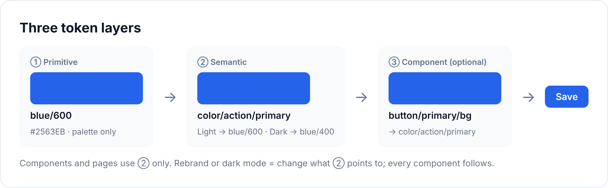
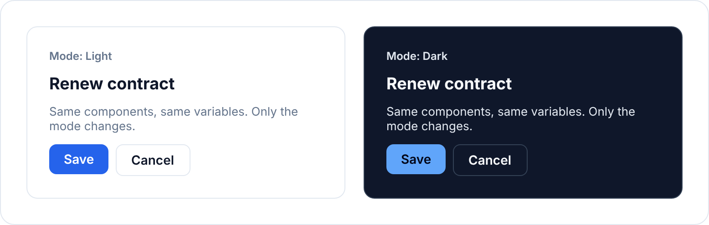
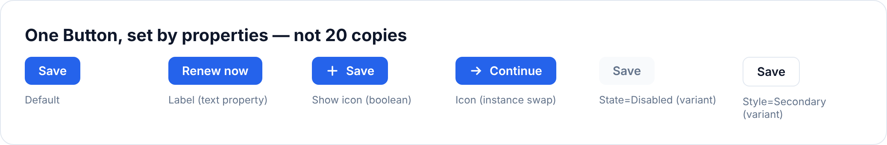
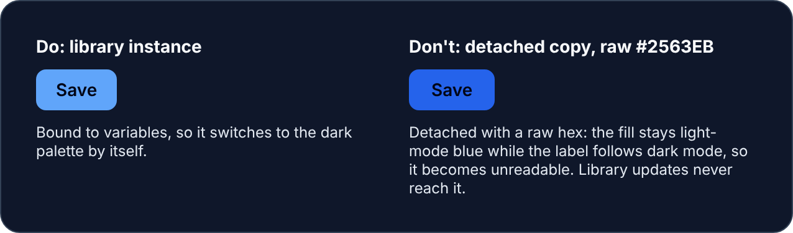

总览：AI 时代的组件库怎么运转Overview: how a library runs in the AI eraÜberblick: wie eine Bibliothek in der AI-Ära läuft
AI 写界面时不知道你们有组件库，就会自己再做一个。下图是它在 AI 时代怎么运转，标「负责人」的格子是你要做的。When AI builds UI, it doesn’t know you have a library, so it builds its own. The diagram shows how a library runs in the AI era; boxes marked “Owner” are yours.Wenn AI die UI baut, weiß sie nicht, dass du eine Bibliothek hast, und baut ihre eigene. Das Diagramm zeigt, wie eine Bibliothek in der AI-Ära läuft. Kästen mit „Verantwortlich“ gehören dir.
← 左右滑动看全图 →← Swipe to see the whole diagram →← Wisch, um das ganze Diagramm zu sehen →
上面一行是日常维护，下面一行是新组件怎么进库。点任何一格，跳到那一步的详细做法。Top row: everyday upkeep. Bottom row: how a new component gets in. Click any box for that step’s details.Obere Reihe: laufende Pflege. Untere Reihe: wie eine neue Komponente reinkommt. Klick einen Kasten für die Details zu diesem Schritt.
看不懂的词，看这里（8 个）Words you may not know (8)Wörter, die du vielleicht nicht kennst (8)
- 组件库Component libraryKomponentenbibliothek
- 一套大家共用的界面零件（按钮、输入框、弹窗……），设计稿和代码里各有一份，长得一样。Shared UI parts (buttons, inputs, dialogs…), with matching versions in design files and code.Gemeinsame UI-Teile (Buttons, Eingaben, Dialoge …), mit passenden Versionen in Design-Dateien und im Code.
- tokensTokensTokens
- 给颜色、字号、间距起的统一名字，比如「主按钮颜色」。设计稿和代码都只用这些名字，不直接写数值。Shared names for colors, type sizes and spacing, e.g. “primary button color”. Design files and code use the names, not raw values.Gemeinsame Namen für Farben, Schriftgrößen und Abstände, z. B. „Farbe des primären Buttons“. Design-Dateien und Code nutzen die Namen, nicht die rohen Werte.
- 变体VariantVariante
- 同一个组件的不同样子，比如大号和小号按钮。A different look of the same component, e.g. large and small buttons.Ein anderes Aussehen derselben Komponente, z. B. große und kleine Buttons.
- 规格SpecSpec
- 一个组件的说明书：什么时候用、有哪些状态、键盘怎么操作。A component’s manual: when to use it, its states, how the keyboard works.Das Handbuch einer Komponente: wann du sie nutzt, ihre Zustände, wie die Tastatur funktioniert.
- 自制组件Home-made componentSelbstgebaute Komponente
- 没用组件库、在某个产品里自己另做的零件。多了以后，同一个东西会有好几个样子。A part built inside one product instead of using the library. Too many and the same thing ends up looking several ways.Ein Teil, das in einem Produkt gebaut wird, statt die Bibliothek zu nutzen. Zu viele, und dasselbe sieht am Ende auf mehrere Arten aus.
- 改动请求（PR）Pull request (PR)Pull Request (PR)
- 一份代码修改，开发看过、同意后才会合进产品。A proposed code change; it only goes into the product after a developer reviews and accepts it.Eine vorgeschlagene Code-Änderung kommt erst ins Produkt, nachdem sie in der Entwicklung geprüft und angenommen wurde.
- AGENTS.mdAGENTS.mdAGENTS.md
- 写给 AI 看的规则文件，告诉它做界面时先用库里的组件。A rules file for AI, telling it to use library components first.Eine Regeldatei für AI, die sagt, zuerst Bibliothekskomponenten zu nutzen.
- SkillSkillSkill
- 装进 Claude 的一套固定做法，装好后不用每次复制提示词。A set of instructions installed in Claude, so you don’t copy prompts each time.Ein Satz Anweisungen, installiert in Claude, damit du Prompts nicht jedes Mal kopierst.
先看你是哪种情况Which case are you?Welcher Fall bist du?
这套流程和工具包是设计好的方案，还没有在真实团队里跑过。先在一个产品上试。This process and kit are a designed set-up that hasn’t run in a real team yet. Pilot it on one product.Dieser Prozess und dieses Kit sind ein ausgearbeitetes Setup, das in einem echten Team noch nicht gelaufen ist. Pilotiere es an einem Produkt.
- 先在库里找。按「这是什么东西 + 用户要做什么」找，不按长相找。比如要「一次处理多条订单」，就找订单列表和操作栏相关的组件，看能不能直接用、或改改就能用。Search the library first. Search by “what thing + what the user wants to do”, not by looks. For “act on many orders at once”, look at order lists and action bars and see if one works as is or with a tweak.Durchsuch zuerst die Bibliothek. Suche nach „welches Ding + was der Nutzer tun will“, nicht nach dem Aussehen. Bei „viele Bestellungen auf einmal bearbeiten“ schau dir Bestelllisten und Aktionsleisten an und prüfe, ob eine davon so oder mit einer kleinen Anpassung passt.
- 真的没有，就填申请表。写清 3 件事：用户在处理什么（比如订单）、要做什么（比如一次处理多条）、哪些页面要用。再附一张你现在临时做法的截图。If it really isn’t there, fill in the request form. Say what users work with (e.g. orders), what they want to do (e.g. act on many at once) and which pages need it. Attach a screenshot of your current stand-in.Wenn es wirklich nicht da ist, fülle das Anfrageformular. Schreib, womit Nutzer arbeiten (z. B. Bestellungen), was sie tun wollen (z. B. viele auf einmal bearbeiten) und welche Seiten es brauchen. Häng einen Screenshot deines jetzigen Behelfs an.
- 等库负责人回复。在那之前，用他告诉你的现有组件先顶着，不要自己另做一个。Wait for the library owner’s answer. Until then, use the existing component they suggest as a stand-in; don’t build your own.Warte auf die Antwort der Bibliotheksverantwortlichen. Bis dahin nutze die vorhandene Komponente, die vorgeschlagen wird, als Übergangslösung; bau keine eigene.
为什么不能自己做一个？每个人都自己做，产品里就会有好几个长得差不多、用法却不一样的组件，用户会困惑，以后也很难统一。Why not build your own? If everyone does, the product ends up with several look-alike components that behave differently, which confuses users and is hard to undo.Warum nicht selbst bauen? Wenn das alle machen, hat das Produkt am Ende mehrere ähnlich aussehende Komponenten, die sich unterschiedlich verhalten. Das verwirrt Nutzer und lässt sich schwer rückgängig machen.
AI 查库、判断够不够格、先打 3 项分；你打另外 3 项，决定收不收。AI searches the library, checks the criteria and scores 3 items; you score the other 3 and decide.AI durchsucht die Bibliothek, prüft die Kriterien und bewertet 3 Punkte; die anderen 3 bewertest du und entscheidest.
- 申请：让申请团队按申请表填。最重要的是写清「对象 + 任务」，比如「订单 · 一次处理多条」，而不是「我要一个批量操作栏」。The request: ask the team to use the request form. The key is “object + task”, e.g. “orders · act on many at once”, not “we want a bulk action bar”.Die Anfrage: das Team füllt das Anfrageformular. Der Kern ist „Objekt + Aufgabe“, z. B. „Bestellungen · viele auf einmal bearbeiten“, nicht „wir wollen eine Sammelaktionsleiste“.
- 你们的组件清单：文档链接、Storybook 链接或 Figma 库截图都行。Your component list: a docs link, Storybook link or Figma library screenshots.Deine Komponentenliste: ein Doku-Link, ein Storybook-Link oder Screenshots der Figma-Bibliothek.
复制给 AI 的提示词Prompt to copyPrompt zum Kopieren
附件是：一份组件申请（文字或截图），和我们组件库的组件清单（文档链接或截图都行）。 申请里写的是：对象是【用户在处理什么，例如：订单】，任务是【用户要做的事，例如：一次处理多条】，用在【哪些产品、哪些页面】。 请按顺序做： 1. 按“对象 + 任务”在组件库里找，不要按长得像不像找。结论三选一：直接用（写用哪个、怎么配）/ 加一个变体就行（写差什么）/ 需要新组件（写为什么现有的不行）。 2. 如果需要新组件，检查 3 个基本条件，每条写“满足 / 不满足”和依据： - 现有组件解决不了 - 至少 2 个产品要用（只有一个产品时：至少 2 个页面） - 申请团队愿意一起参与评审和替换 3. 3 条都满足，就给这 3 项打 1–5 分，每项写一句依据：用的地方多少、已有几个自制组件、做起来多费工。 4. 写一句给申请团队的临时方案：新组件出来之前，先用哪个现有组件顶替。 5. 列出还要问申请团队的问题。 没有依据的写“无数据”，不要估。收不收由我决定。
Attached: a component request (text or screenshot) and our library’s component list (a docs link or screenshots are fine).
The request says: the object is [what users work with, e.g. orders], the task is [what users want to do, e.g. act on many at once], used in [which products and pages].
Please, in order:
1. Search the library by “object + task”, not by what looks similar. Conclude one of: use as is (which one, how to configure) / just add a variant (what’s missing) / new component (why nothing existing works).
2. If it needs a new component, check the 3 basic criteria, each “met / not met” with evidence:
- No existing component solves it
- At least 2 products need it (with only one product: at least 2 pages)
- The requesting team will take part in review and replacement
3. If all 3 are met, score these 3 items 1–5 with one line of evidence each: how many places need it, how many home-made versions exist, how much work it is.
4. One line for the requesting team: which existing component to use as a stand-in until the new one ships.
5. List the questions still to ask the requesting team.
Write “no data” where there’s no evidence; don’t estimate. I decide whether to accept it.Anhang: eine Komponentenanfrage (Text oder Screenshot) und die Komponentenliste unserer Bibliothek (ein Doku-Link oder Screenshots reichen).
Die Anfrage sagt: das Objekt ist [womit Nutzer arbeiten, z. B. Bestellungen], die Aufgabe ist [was Nutzer tun wollen, z. B. viele auf einmal bearbeiten], genutzt in [welche Produkte und Seiten].
Bitte der Reihe nach:
1. Durchsuche die Bibliothek nach „Objekt + Aufgabe“, nicht nach dem, was ähnlich aussieht. Schließ mit einem von diesen ab: so nutzen (welche, wie konfigurieren) / nur eine Variante ergänzen (was fehlt) / neue Komponente (warum nichts Vorhandenes funktioniert).
2. Wenn eine neue Komponente nötig ist, prüfe die 3 Grundkriterien, jedes mit „erfüllt / nicht erfüllt“ und einem Beleg:
- Keine vorhandene Komponente löst es
- Mindestens 2 Produkte brauchen es (bei nur einem Produkt: mindestens 2 Seiten)
- Das anfragende Team macht bei Review und Ersetzung mit
3. Wenn alle 3 erfüllt sind, bewerte diese 3 Punkte mit 1–5 und je einer Zeile Beleg: wie viele Stellen es brauchen, wie viele Eigenbau-Versionen es gibt, wie viel Arbeit es ist.
4. Eine Zeile für das anfragende Team: welche vorhandene Komponente als Übergangslösung dienen soll, bis die neue da ist.
5. Liste die Fragen auf, die dem anfragenden Team noch zu stellen sind.
Schreib „keine Daten“, wo es keinen Beleg gibt; schätz nicht. Ich entscheide, ob ich sie annehme.结果长这样（示例）What you get (example)Was du bekommst (Beispiel)
| 打分项ItemPunkt | 谁打ByVon | 分ScorePunkte |
|---|---|---|
| 用的地方多少ReachReichweite | AI | 3 |
| 已有几个自制组件Home-made componentsEigenbau-Komponenten | AI | 2 |
| 做起来多费工Build effortBauaufwand | AI | 3 |
| 对用户任务多重要Task importanceWichtigkeit der Aufgabe | 你YouDu | 12345 |
| 出错风险多大RiskRisiko | 你YouDu | 12345 |
| 晚做的代价Cost of waitingKosten des Wartens | 你YouDu | 12345 |
打分标准：每一分对应什么（起始建议）Scoring guide: what each score means (a starting point)Bewertungsleitfaden: was jede Punktzahl bedeutet (ein Ausgangspunkt)
| 你打的项Your itemDein Punkt | 1 分11 | 2 分22 | 3 分33 | 4 分44 | 5 分55 | 依据从哪来Evidence fromBeleg aus |
|---|---|---|---|---|---|---|
| 对用户任务多重要Task importanceWichtigkeit der Aufgabe | 每月用一次或更少，或不在主要流程里Monthly or less, or off the main flowMonatlich oder seltener, oder abseits des Hauptflusses | 每周用一次左右About weeklyEtwa wöchentlich | 每周用几次，在主要流程里Several times a week, on the main flowMehrmals pro Woche, im Hauptfluss | 每天都用DailyTäglich | 直接影响一个已定的 KPI（写出是哪个）Directly moves an agreed KPI (name it)Verändert direkt einen vereinbarten KPI (nenn ihn) | 使用数据（埋点、日志），或申请表里写的 KPIUsage data (analytics, logs) or the KPI in the requestNutzungsdaten (Analytics, Logs) oder der KPI in der Anfrage |
| 出错风险多大RiskRisiko | 出错了用户自己能撤销Users can undo a mistakeNutzer können einen Fehler rückgängig machen | 撤销不了，但用户自己能重做Can’t undo, but users can redo itNicht rückgängig zu machen, aber Nutzer können es wiederholen | 要客服或运营人工处理Support or ops must fix it by handSupport oder Ops müssen es von Hand korrigieren | 影响很多用户，或要对外解释Affects many users, or needs a public explanationBetrifft viele Nutzer oder braucht eine öffentliche Erklärung | 涉及钱、法规、个人数据或无障碍合规Money, regulation, personal data or accessibility complianceGeld, Regulierung, personenbezogene Daten oder Barrierefreiheit | 出错时谁来补救：用户、客服，还是要上报Who fixes a mistake: users, support, or it must be reportedWer einen Fehler behebt: Nutzer, Support, oder es muss gemeldet werden |
| 晚做的代价Cost of waitingKosten des Wartens | 用现有组件顶替，用户几乎感觉不到An existing component stands in; users barely noticeEine vorhandene Komponente dient als Übergang; Nutzer merken es kaum | 现在用别的组件顶替，样子不统一，但用户操作没变多The stand-in looks inconsistent, but users don’t need extra stepsDie Übergangslösung sieht uneinheitlich aus, aber Nutzer brauchen keine Extra-Schritte | 顶替的方案让用户多一步操作，或测试里有人卡住The stand-in adds a step, or someone got stuck in testingDie Übergangslösung fügt einen Schritt hinzu, oder jemand ist im Test hängen geblieben | 顶替的方案让任务明显变慢或出错变多（有测试或数据）The stand-in clearly slows the task or raises errors (test or data shows it)Die Übergangslösung verlangsamt die Aufgabe klar oder erhöht die Fehler (Test oder Daten zeigen es) | 没法顶替，会耽误一个已定的上线日期（写出日期）Nothing can stand in; it delays an agreed launch date (name it)Nichts kann als Übergang dienen; es verschiebt einen vereinbarten Launch-Termin (nenn ihn) | 现在顶替方案的截图、测试记录、上线计划Screenshot of the stand-in, test notes, launch planScreenshot der Übergangslösung, Testnotizen, Launch-Plan |
每项写一句依据。拿不出依据就打 1 分；在两档之间拿不准，打低的那档。这些标准是起始建议，用一两期后按你们的数据调。Write one line of evidence per item. No evidence means 1; if torn between two levels, pick the lower. These are a starting point; adjust them to your data after a cycle or two.Schreib pro Punkt eine Zeile Beleg. Kein Beleg bedeutet 1; wenn du zwischen zwei Stufen schwankst, nimm die niedrigere. Das ist ein Ausgangspunkt; pass es nach ein oder zwei Zyklen an deine Daten an.
为什么按「对象 + 任务」查？设计时怎么用？Why search by “object + task”, and how to use it when designing?Warum nach „Objekt + Aufgabe“ suchen, und wie nutzt du das beim Entwerfen?
同一个需求，产品 A 叫「订单卡片」，产品 B 叫「订单行」，长得也不一样。按长相查，会被当成两个组件各做一个；按「订单 + 一次处理多条」查，就知道是同一件事。The same need is an “order card” in product A and an “order row” in product B. Searching by looks builds both; searching by “orders + act on many at once” shows it’s one need.Dasselbe Bedürfnis ist in Produkt A eine „Bestellkarte“ und in Produkt B eine „Bestellzeile“. Wer nach dem Aussehen sucht, baut beides; wer nach „Bestellungen + viele auf einmal bearbeiten“ sucht, sieht, dass es ein Bedürfnis ist.
设计新 feature 时，多做一步：When designing a feature, add one step:Wenn du ein Feature entwirfst, ergänze einen Schritt:画页面之前，先列出 feature 里的「东西」，每个写一行：显示什么、能做什么、和谁有关。再按这些东西去组件库找组件，最后才找相似页面当布局参考。表格和提示词见首页第 7 步 › 先列对象。before drawing pages, list the “things” in the feature, one row each: what it shows, what you can do, what it relates to. Search the library by those things, then look for a similar screen for layout. Table and prompt: Home, step 7 › List the objects first.bevor du Seiten zeichnest, liste die „Dinge“ im Feature auf, eine Zeile je Ding: was es zeigt, was du tun kannst, womit es zusammenhängt. Durchsuche die Bibliothek nach diesen Dingen und such danach einen ähnlichen Screen fürs Layout. Tabelle und Prompt: Start, Schritt 7 › Zuerst die Objekte auflisten.
这个做法来自 OOUX（Object-Oriented UX，以对象为中心的设计方法）。更多：参考 › OOUX 和 Atomic Design。This comes from OOUX (Object-Oriented UX). More: Reference › OOUX and Atomic Design.Das kommt von OOUX (Object-Oriented UX). Mehr: Referenz › OOUX und Atomic Design.
AI 写规格，标出它拿不准的地方；你只看「待确认」的几条。AI writes the spec and flags what it isn’t sure about; you only read the “to confirm” items.AI schreibt die Spezifikation und markiert, wobei sie unsicher ist; du liest nur die Punkte „zu bestätigen“.
- 这个组件的申请，和现在临时做法的截图The request and a screenshot of today’s stand-inDie Anfrage und ein Screenshot der heutigen Übergangslösung
- tokens 清单，或 Figma 变量的截图Your token list, or screenshots of the Figma variablesDeine Token-Liste oder Screenshots der Figma-Variablen
- 组件规格模板（复制下来附上）The component spec template (copy and attach it)Die Vorlage für die Komponenten-Spezifikation (kopieren und anhängen)
复制给 AI 的提示词Prompt to copyPrompt zum Kopieren
附件是：这个组件的申请、现在临时做法的截图、我们的 tokens 清单（或 Figma 变量的截图），以及组件规格模板。 请按模板写这个组件的规格： 1. 用途；不要用于（容易混淆时该用哪个组件）；由哪些部分组成 2. 对象和任务：显示哪个对象，用户要完成什么 3. 所有状态：默认、悬停、聚焦、按下、禁用、加载、空、出错、无权限；AI 产品再加生成中、部分完成。用不到的写“不适用”和原因 4. 边界情况：文字超长、0 条 / 1 条 / 很多条、网络慢或失败、重复点击、窄屏 5. 只用 tokens 清单里的名字；写清键盘怎么操作、读屏怎么读 从材料里判断不了的地方（尤其是“用途”“不要用于”“规则”），标成“待确认”，不要自己猜。
Attached: the request for this component, a screenshot of today’s stand-in, our token list (or screenshots of the Figma variables), and the component spec template.
Write the spec for this component using the template:
1. Purpose; don’t use for (and which component to use instead when it’s easy to confuse); what parts it has
2. Object and task: which object it shows, what the user wants to get done
3. Every state: default, hover, focus, pressed, disabled, loading, empty, error, no permission; for AI products also generating and partly done. Write “n/a” with a reason for any that don’t apply
4. Edge cases: very long text, 0 / 1 / many items, slow or failed network, double clicks, narrow screens
5. Use only names from the token list; describe keyboard use and what a screen reader announces
Anything you can’t tell from the material (especially purpose, don’t use for, and rules) mark as “to confirm”; don’t guess.Anhang: die Anfrage für diese Komponente, ein Screenshot der heutigen Übergangslösung, unsere Token-Liste (oder Screenshots der Figma-Variablen) und die Vorlage für die Komponenten-Spezifikation.
Schreib die Spezifikation für diese Komponente nach der Vorlage:
1. Zweck; nicht verwenden für (und welche Komponente stattdessen, wenn man sie leicht verwechselt); welche Bestandteile sie hat
2. Objekt und Aufgabe: welches Objekt sie zeigt, was der Nutzer erledigen will
3. Jeder Zustand: Standard, Hover, Fokus, gedrückt, deaktiviert, laden, leer, Fehler, keine Berechtigung; bei AI-Produkten auch wird erzeugt und teilweise fertig. Schreib „n/a“ mit einem Grund für alles, das nicht gilt
4. Sonderfälle: sehr langer Text, 0 / 1 / viele Einträge, langsames oder fehlgeschlagenes Netz, Doppelklicks, schmale Screens
5. Nutze nur Namen aus der Token-Liste; beschreib die Tastaturbedienung und was ein Screenreader ansagt
Alles, was du aus dem Material nicht erkennen kannst (vor allem Zweck, nicht verwenden für und Regeln), markiere als „zu bestätigen“; rate nicht.结果长这样（示例）What you get (example)Was du bekommst (Beispiel)
- 用途PurposeZweck
- 列表里选中多条后出现在底部，放批量操作Appears at the bottom after selecting rows; holds bulk actionsErscheint unten, nachdem Zeilen ausgewählt sind; enthält Sammelaktionen
- 不要用于Don’t use forNicht verwenden für
- 只有一个操作时 → 用行内按钮Single action → use an inline buttonEinzelne Aktion → nimm einen Inline-Button 待确认to confirmzu bestätigen
- 规则RuleRegel
- 最多显示 3 个操作，其余收进“更多”Show up to 3 actions, the rest go under “More”Zeig bis zu 3 Aktionen, der Rest kommt unter „Mehr“ 待确认to confirmzu bestätigen
- 状态StatesZustände
- 默认 · 全部选中 · 操作中 · 部分失败 · 禁用Default · All selected · Working · Partly failed · DisabledStandard · Alle ausgewählt · In Arbeit · Teilweise fehlgeschlagen · Deaktiviert
组件做好以后：评审只看 3 点Once it’s built: review only 3 thingsSobald es gebaut ist: prüfe nur 3 Dinge
- 用起来Use itBedienen选几条、全选、取消、按 Esc：顺不顺？Select a few, select all, clear, press Esc: does it flow?Ein paar auswählen, alle auswählen, leeren, Esc drücken: fließt es?
- 看起来LookAussehen亮色、暗色各看一眼，和页面其他部分协调吗？Check light and dark: does it fit the page?Prüfe Hell und Dunkel: passt es zur Seite?
- 文案CopyKopieren“已选 3 条”“改状态”用户看得懂吗？Are “3 selected” and “Set status” clear to users?Sind „3 ausgewählt“ und „Status setzen“ für Nutzer klar?
你回复：「通过」，或写一句要改的。对比度、键盘操作、写死的数值交给程序检查，不用你看。You reply: “Approved”, or one line on what to change. Contrast, keyboard use and hard-coded values are for automated checks, not you.Du antwortest: „Freigegeben“, oder eine Zeile dazu, was sich ändern soll. Kontrast, Tastaturbedienung und hartkodierte Werte sind Sache der automatischen Prüfungen, nicht deine.
AI 列出自制的组件和写死的数值，这就是你的第一份周报；你逐条判断。AI lists home-made components and hard-coded values: your first weekly report. You judge each item.AI listet Eigenbau-Komponenten und hartkodierte Werte auf: dein erster Wochenbericht. Du beurteilst jeden Punkt.
- 组件清单和 tokens 清单Your component list and token listDeine Komponentenliste und Token-Liste
- 这个产品上线版本的主要页面截图（不要用设计稿）。能找开发要到代码或扫描结果更好，会准很多。Screenshots of the product’s main shipped pages (not design files). Code or scan results from a developer make it far more accurate.Screenshots der wichtigsten ausgelieferten Seiten des Produkts (keine Designdateien). Code oder Scan-Ergebnisse von der Entwicklung machen es deutlich genauer.
复制给 AI 的提示词Prompt to copyPrompt zum Kopieren
附件是：我们组件库的组件清单和 tokens，以及产品【名称】上线版本的页面截图（不要用设计稿）。【有代码或扫描结果的话也附上，会更准。】 请找出： 1. 看起来像库里的组件、但其实是自己做的（写出页面和位置，应该换成哪个库组件） 2. 没用 tokens、自己定的颜色、间距、字号（写出应该用哪个 token） 3. 库里确实没有、可能值得进库的界面 按表格输出：类型｜页面和位置｜现在是什么｜应该用什么｜把握（确定 / 不确定）。 只看截图判断不了的写“不确定”，不要当成确定。最后挑出 3 条最值得先处理的，写理由。
Attached: our library’s component list and tokens, and screenshots of the shipped version of product [name] (not design files). [Attach code or scan results too if you have them; it’s more accurate.]
Find:
1. UI that looks like a library component but was built separately (page and location, and which library component to use)
2. Colors, spacing and type sizes that don’t use tokens (and which token to use)
3. UI the library really doesn’t have that may be worth adding
Output a table: type | page and location | what it is now | what to use | confidence (sure / unsure).
Mark anything you can’t tell from screenshots as “unsure”; don’t present it as sure. End with the 3 items most worth fixing first, with reasons.Anhang: die Komponentenliste und die Tokens unserer Bibliothek sowie Screenshots der ausgelieferten Version von Produkt [Name] (keine Designdateien). [Häng auch Code oder Scan-Ergebnisse an, wenn du sie hast; das ist genauer.]
Finde:
1. UI, die wie eine Bibliothekskomponente aussieht, aber separat gebaut wurde (Seite und Stelle, und welche Bibliothekskomponente zu nutzen ist)
2. Farben, Abstände und Schriftgrößen, die keine Tokens nutzen (und welcher Token zu nutzen ist)
3. UI, die die Bibliothek wirklich nicht hat und die sich lohnen könnte
Gib eine Tabelle aus: Typ | Seite und Stelle | was es jetzt ist | was zu nutzen ist | Sicherheit (sicher / unsicher).
Markiere alles, was du aus Screenshots nicht erkennen kannst, als „unsicher“; gib es nicht als sicher aus. Schluss mit den 3 Punkten, die sich als Erstes am meisten lohnen, mit Gründen.结果长这样（示例）What you get (example)Was du bekommst (Beispiel)
- 产品 A 的订单卡片没用库里的间距Product A’s order card doesn’t use library spacingDie Bestellkarte von Produkt A nutzt nicht die Abstände der Bibliothek写死了
padding: 14px，应该用库里的space-inset-md。把握：确定。Hard-codespadding: 14px; should use the library’sspace-inset-md. Confidence: sure.Hartkodiertpadding: 14px; sollte den Bibliotheks-Tokenspace-inset-mdnutzen. Sicherheit: sicher.同意AgreeZustimmen不同意DisagreeAblehnen - Tag 和 Badge 几乎一样Tag and Badge are nearly the sameTag und Badge sind fast gleich建议合并成一个，Tag 标为「即将弃用」（新界面不再用它，旧的慢慢换掉）。把握：不确定，要你判断。Suggest merging; mark Tag as deprecated (new screens stop using it, old ones move over). Confidence: unsure, your call.Schlage eine Zusammenlegung vor; markiere Tag als veraltet (neue Screens nutzen es nicht mehr, alte werden umgestellt). Sicherheit: unsicher, deine Entscheidung.同意AgreeZustimmen不同意DisagreeAblehnen
第 3 条：订单详情页的「退款记录」表格，库里没有，3 个页面都在用 → 可能值得进库。Item 3: the “refund history” table on order details isn’t in the library and is used on 3 pages → may be worth adding.Punkt 3: die Tabelle „Erstattungshistorie“ in den Bestelldetails ist nicht in der Bibliothek und wird auf 3 Seiten genutzt → vielleicht wert, sie aufzunehmen.
手动做几次、结果靠谱了，再让开发装工具包，改成每周一自动跑、自动发改动请求：见自动化 › 安装和配置。Once a few manual runs prove reliable, have a developer install the kit so it runs every Monday and sends PRs: see Automation › Install and configure.Wenn ein paar manuelle Läufe zuverlässig sind, lass die Entwicklung das Kit so installieren, dass es jeden Montag läuft und PRs schickt: siehe Automation › Installieren und einrichten.
不想每次复制提示词：装 Skill（装一次就行）Skip the copy-paste: install the Skill (once)Ohne Kopieren: das Skill einmal installieren
- 下载下面的 Skill 压缩包，不用解压。Skill 是给 Claude 的一套固定做法，装好后直接说「帮我处理这个组件申请」就行。Download the Skill zip below; don’t unzip it. A Skill is a set of instructions for Claude; once installed, just say “handle this component request”.Lade die Skill-Zip unten herunter; entpacke sie nicht. Ein Skill ist ein Satz Anweisungen für Claude; nach der Installation sag einfach „bearbeite diese Komponentenanfrage“.
- Claude 设置 → 功能（Capabilities）→ Skills → 上传。公司账号如果看不到，请管理员先打开。Claude Settings → Capabilities → Skills → upload. On a company account, ask an admin to enable Skills if you can’t see it.Claude-Einstellungen → Fähigkeiten → Skills → hochladen. Auf einem Unternehmenskonto bitte eine Admin-Person, Skills zu aktivieren, wenn du sie nicht siehst.
- 之后附上材料，直接说要做哪件事。Then attach your material and say which task you want.Dann häng dein Material an und sag, welche Aufgabe du willst.
已经有组件库：分 6 个阶段接入（大多数公司是这种）You already have a library: adopt it in 6 stages (most companies)Du hast schon eine Bibliothek: in 6 Phasen übernehmen (die meisten Unternehmen)
不用重做现有的 tokens 和组件。每个阶段都先在一个产品上试，做到最右边一栏，再进下一阶段。You don’t redo existing tokens or components. Try each stage on one product; move on when the last column is true.Du machst vorhandene Tokens oder Komponenten nicht neu. Probier jede Phase an einem Produkt; geh weiter, wenn die letzte Spalte zutrifft.
| 阶段StagePhase | 做什么What happensWas passiert | 谁做WhoWer | 做到这样，进下一阶段Move on whenWeiter, wenn |
|---|---|---|---|
| 1 接上现有的库Connect your libraryDeine Bibliothek anbinden | 开发装好工具包，告诉 AI 你们的组件库、文档和 Figma 库在哪。先只接一个产品试（试点产品）。A developer installs the kit and tells AI where your library, docs and Figma library are. Start with one product (the pilot).Die Entwicklung installiert das Kit und sagt AI, wo deine Bibliothek, die Doku und die Figma-Bibliothek liegen. Starte mit einem Produkt (dem Pilotprodukt). | 开发DeveloperEntwicklung | AI 能完整跑一次AI completes one full runAI schafft einen vollständigen Lauf |
| 2 AI 摸底AI takes stockAI macht die Bestandsaufnahme | AI 读一遍现有的 tokens、组件、文档和 Figma 库，交一份报告：哪些组件没有说明、Figma 和代码哪里对不上、试点产品里哪里没用库里的数值。AI reads your tokens, components, docs and Figma library and reports: components without docs, Figma/code mismatches, and places in the pilot that don’t use library values.AI liest deine Tokens, Komponenten, Doku und Figma-Bibliothek und berichtet: Komponenten ohne Doku, Abweichungen zwischen Figma und Code und Stellen im Pilotprodukt, die keine Bibliothekswerte nutzen. | AI 写，你看AI writes, you readAI schreibt, du liest | 你看完报告，划掉不对的You’ve read the report and struck what’s wrongDu hast den Bericht gelesen und Falsches gestrichen |
| 3 给 AI 定规则Set the rule for AIDie Regel für AI setzen | AI 用你们真实的组件名，写一份给 AI 看的使用规则（AGENTS.md），放进组件库和试点产品（怎么写）。AI writes a rules file for AI (AGENTS.md) with your real component names, for the library and the pilot (how).AI schreibt eine Regeldatei für AI (AGENTS.md) mit deinen echten Komponentennamen, für die Bibliothek und das Pilotprodukt (so geht’s). | AI 写，你确认AI drafts, you confirmAI entwirft, du bestätigst | 在试点产品里让 AI 做个弹窗，它用的是库里的组件Ask AI for a dialog in the pilot: it uses the library componentBitte AI im Pilotprodukt um einen Dialog: sie nutzt die Bibliothekskomponente |
| 4 先只发周报Weekly report onlyNur der Wochenbericht | 先试几周：AI 只发周报，不改任何产品的代码。周报准了，再让它动手。Try it for a few weeks: AI only sends the weekly report and changes no product code. Once the report is reliable, let it act.Probiere es ein paar Wochen: AI schickt nur den Wochenbericht und ändert keinen Produktcode. Sobald der Bericht zuverlässig ist, lass sie handeln. | AIAIAI | 连续几周，周报里的条目大多是对的，你愿意照着做For a few weeks the report is mostly right and you’d act on itEin paar Wochen lang stimmt der Bericht meist, und du würdest danach handeln |
| 5 接新申请Take new requestsNeue Anfragen annehmen | 把现在提需求的地方（表单、群、邮件）换成新的申请表。申请团队填表，AI 先查库、打分，你来决定（第 2 件事）。Point today’s request channel (form, chat, email) at the new request form. Teams fill it in, AI searches and scores, you decide (task 2).Richte den heutigen Anfragekanal (Formular, Chat, E-Mail) auf das neue Anfrageformular. Die Teams füllen es aus, AI sucht und bewertet, du entscheidest (Aufgabe 2). | 申请团队、AI、你Requesters, AI, youAnfragende, AI, du | 有几个申请完整走完了流程A few requests went all the way throughEin paar Anfragen sind ganz durchgelaufen |
| 6 让 AI 改代码，再加产品Let AI change code, add productsAI darf Code ändern, Produkte dazunehmen | AI 开始给产品发改动请求（PR），每周先少发几个。试点产品顺了，再加第二个产品。AI starts sending products PRs, only a few a week at first. When the pilot runs smoothly, add the next product.AI fängt an, Produkten PRs zu schicken, zuerst nur ein paar pro Woche. Wenn das Pilotprodukt rund läuft, nimm das nächste Produkt dazu. | 你定，开发改配置You decide, a developer configuresDu entscheidest, die Entwicklung richtet ein | 产品团队愿意合并这些改动请求Product teams are happy to merge the PRsProduktteams mergen die PRs gern |
可以跳过：定 tokens（你们已经有了）。已有的组件说明不重写，AI 只补缺的，并标出和代码对不上的地方。最容易失败的是阶段 4：周报里错的多了，大家就不看了。所以第一个月只报 AI 确定的问题。每个阶段开发要改的配置，见自动化 › 安装和配置。Skip: set up tokens (you have them). Existing docs aren’t rewritten; AI only fills gaps and flags mismatches with code. Stage 4 is where it most often fails: if the report is often wrong, people stop reading it, so in the first month it reports only issues AI is sure about. The config a developer changes at each stage is in Automation › Install and configure.Überspringen: Tokens einrichten (die hast du schon). Vorhandene Doku wird nicht neu geschrieben; AI füllt nur Lücken und markiert Abweichungen zum Code. Phase 4 scheitert am häufigsten: wenn der Bericht oft falsch ist, hören die Leute auf, ihn zu lesen. Deshalb meldet er im ersten Monat nur Punkte, bei denen AI sicher ist. Die Konfiguration, die die Entwicklung in jeder Phase ändert, steht in Automation › Installieren und einrichten.
还没有组件库：先做这 4 步No library yet: start with these 4 stepsNoch keine Bibliothek: mit diesen 4 Schritten starten
- AI 盘点现状：从需求文档、上线界面的截图和代码里，列出用户打交道的对象（比如客户、订单）、需要哪些组件、现在用到哪些颜色和字号。这些数值只用来看差距，不直接用。下面的对象清单和界面盘点有模板和提示词。AI takes stock: from requirement docs, screenshots of the shipped UI and code, it lists the objects users deal with (e.g. customers, orders), the components needed and the colors and type sizes in use. The values only show the gaps; they aren’t reused. Templates and prompts: object list and UI inventory below.AI macht die Bestandsaufnahme: aus Anforderungsdokumenten, Screenshots der ausgelieferten UI und dem Code listet sie die Objekte auf, mit denen Nutzer zu tun haben (z. B. Kunden, Bestellungen), die nötigen Komponenten und die genutzten Farben und Schriftgrößen. Die Werte zeigen nur die Lücken; sie werden nicht wiederverwendet. Vorlagen und Prompts: Objektliste und UI-Inventar unten.
- AI 出 2–3 套视觉方向：每套都有示例页面和对比度检查（怎么做）。AI proposes 2–3 visual directions, each with sample screens and a contrast check (how).AI schlägt 2–3 visuelle Richtungen vor, jede mit Beispielseiten und einer Kontrastprüfung (so geht’s).
- 你挑一套，同时确认对象和组件名单。具体数值不用自己定。You pick one and confirm the object and component lists. You don’t set the values yourself.Du wählst eine aus und bestätigst die Objekt- und Komponentenlisten. Die Werte setzt du nicht selbst.
- AI 生成 tokens（给颜色、字号、间距统一起的名字，见这里），再把起步组件一个个按「新组件进库」的流程做出来：写规格、你确认、做组件、你评审、发布。AI generates the tokens (shared names for colors, type sizes and spacing; see here), then builds each starter component through the intake flow: spec, you confirm, build, you review, release.AI erzeugt die Tokens (gemeinsame Namen für Farben, Schriftgrößen und Abstände; siehe hier), und baut dann jede Startkomponente über den Aufnahmeablauf: Spezifikation, du bestätigst, bauen, du prüfst, veröffentlichen.
OOUX：先列“对象”，再定组件OOUX: list the objects first, then the componentsOOUX: zuerst die Objekte auflisten, dann die Komponenten
OOUX 是什么：Object-Oriented UX。先不看界面，先列出用户打交道的“东西”（对象），比如客户、订单、合同；每个对象写清它有哪些属性、能做哪些操作、和哪些对象有关。What OOUX is: Object-Oriented UX. Before looking at screens, list the “things” users deal with (objects), such as customers, orders and contracts; for each, write its attributes, actions and related objects.Was OOUX ist: Object-Oriented UX. Bevor du auf Oberflächen schaust, listest du die „Dinge“ auf, mit denen Nutzer zu tun haben (Objekte), etwa Kunden, Bestellungen und Verträge; zu jedem schreibst du Attribute, Aktionen und verwandte Objekte.
为什么先做它：组件名单可以直接从对象推出来。比如“客户”需要一个列表行、一张卡片、一个状态标签。这样同一个客户在列表、详情、搜索、通知里长得一样、操作一样，不会每个页面各做一套。Why first: the component list falls out of the objects. “Customer” needs a list row, a card and a status badge, so the same customer looks and behaves the same in lists, details, search and notifications instead of each page inventing its own.Warum zuerst: die Komponentenliste ergibt sich aus den Objekten. „Kunde“ braucht eine Listenzeile, eine Karte und ein Status-Badge, damit derselbe Kunde in Listen, Details, Suche und Benachrichtigungen gleich aussieht und sich gleich verhält, statt dass jede Seite ihre eigene Variante erfindet.
| 对象ObjectObjekt | 属性AttributesAttribute | 操作ActionsAktionen | 推出来的组件Components it impliesKomponenten, die sich daraus ergeben |
|---|---|---|---|
| 客户CustomerKunde | 名称、合同状态、负责人Name, contract status, ownerName, Vertragsstatus, Verantwortliche | 查看、编辑、停用View, edit, deactivateAnsehen, bearbeiten, deaktivieren | CustomerRow、CustomerCard、StatusBadgeCustomerRow, CustomerCard, StatusBadgeCustomerRow, CustomerCard, StatusBadge |
| 订单OrderBestellung | 编号、金额、状态、日期Number, amount, status, dateNummer, Betrag, Status, Datum | 查看、导出、改状态View, export, change statusAnsehen, exportieren, Status ändern | OrderRow、OrderSummary、StatusBadgeOrderRow, OrderSummary, StatusBadgeOrderRow, OrderSummary, StatusBadge |
怎么做：① 下载表格模板；② 把模板和需求文档、代码扫描结果或上线版本的截图一起发给 AI，用 ② 的提示词让 AI 填；③ 你检查一遍：删掉不是真对象的，补上漏的。How: ① download the template; ② send it to AI with the requirement docs and code-scan results or shipped screenshots, using prompt ②; ③ check it: drop what isn’t really an object, add what’s missing.So geht’s: ① lade die Vorlage herunter; ② schick sie an AI zusammen mit den Anforderungsdokumenten und den Code-Scan-Ergebnissen oder Screenshots der ausgelieferten Oberfläche, mit Prompt ②; ③ prüfe sie: streich, was kein echtes Objekt ist, und ergänze, was fehlt.
| 对象 | 用户怎么叫它 | 列表里显示的属性 | 详情里显示的属性 | 能做的操作 | 状态 | 和哪些对象有关 | 出现在哪些页面 | 用哪些组件展示 | |---|---|---|---|---|---|---|---|---| | ［例：客户］ | ［客户、公司］ | ［名称、合同状态、负责人］ | ［全部字段］ | ［查看、编辑、停用］ | ［生效 / 即将到期 / 已到期］ | ［合同、联系人、订单］ | ［客户列表、客户详情、搜索、通知］ | ［CustomerRow、CustomerCard、StatusBadge］ |
| Object | What users call it | Attributes in lists | Attributes in detail | Actions | States | Related objects | Appears on | Shown with components |
|---|---|---|---|---|---|---|---|---|
| [e.g. Customer] | [customer, company] | [name, contract status, owner] | [all fields] | [view, edit, deactivate] | [active / expiring / expired] | [contract, contact, order] | [customer list, detail, search, notifications] | [CustomerRow, CustomerCard, StatusBadge] |
| Objekt | Wie Nutzer es nennen | Attribute in Listen | Attribute im Detail | Aktionen | Zustände | Verwandte Objekte | Erscheint auf | Gezeigt mit Komponenten |
|---|---|---|---|---|---|---|---|---|
| [z. B. Kunde] | [Kunde, Unternehmen] | [Name, Vertragsstatus, Verantwortliche] | [alle Felder] | [ansehen, bearbeiten, deaktivieren] | [aktiv / läuft aus / abgelaufen] | [Vertrag, Kontakt, Bestellung] | [Kundenliste, Detail, Suche, Benachrichtigungen] | [CustomerRow, CustomerCard, StatusBadge] |
附件是需求文档，和代码扫描结果或上线版本的截图（不要用设计稿草图），以及对象清单表格模板。 请列出用户在产品里打交道的所有对象（“东西”，例如客户、订单、文档），按表格模板填写，并且： 1. 同一个对象在不同产品或页面里叫法不同的，标出来 2. 同一个对象在不同页面显示的属性或操作不一致的，标出来 3. 建议每个对象用哪几个固定组件展示（例如：列表行、卡片、详情页头） 只根据附件判断，看不出来的写“待确认”。
Attached: requirement docs, code-scan results or screenshots of the shipped product (not design drafts), and the object-list table template.
List every object users deal with in the product (the “things”, e.g. customers, orders, documents), filling in the template, and:
1. Flag objects with different names in different products or pages
2. Flag objects that show different attributes or actions on different pages
3. Suggest a few fixed components per object (e.g. list row, card, detail header)
Base this only on the attachments; write “to confirm” where you can’t tell.Anhang: Anforderungsdokumente, Code-Scan-Ergebnisse oder Screenshots des ausgelieferten Produkts (keine Designentwürfe) und die Tabellenvorlage für die Objektliste.
Liste jedes Objekt auf, mit dem Nutzer im Produkt zu tun haben (die „Dinge“, z. B. Kunden, Bestellungen, Dokumente), fülle die Vorlage und:
1. Markiere Objekte, die in verschiedenen Produkten oder Seiten anders heißen
2. Markiere Objekte, die auf verschiedenen Seiten andere Attribute oder Aktionen zeigen
3. Schlage je Objekt ein paar feste Komponenten vor (z. B. Listenzeile, Karte, Detailkopf)
Stütz dich nur auf die Anhänge; schreib „zu bestätigen“, wo du es nicht erkennen kannst.盘点现有界面：只看上线版本，交给程序收集Inventory the UI: shipped product only, collected by scriptsDie UI inventarisieren: nur das ausgelieferte Produkt, per Skript gesammelt
盘点什么：只盘点已经上线或已交付开发的界面。不收集每位设计师的草图和备选方案，那些还没定，会把结果搞乱。人多的时候也不靠人收截图，交给程序：What to inventory: only screens that are shipped or handed off. Don’t collect each designer’s drafts and alternatives; they aren’t settled and would muddy the result. With many people, scripts collect it, not people:Was du erfasst: nur Oberflächen, die ausgeliefert oder übergeben sind. Sammle nicht die Entwürfe und Alternativen jeder einzelnen Person ein; die sind noch nicht entschieden und würden das Ergebnis verwischen. Bei vielen Leuten sammeln Skripte, nicht Personen:
| 来源SourceQuelle | 怎么收How it’s collectedWie es gesammelt wird | 回答什么What it answersWas es beantwortet |
|---|---|---|
| ① 代码扫描（最准）① Code scan (most reliable)① Code-Scan (am zuverlässigsten) | 工具扫各产品的代码仓库（例如 react-scanner）A tool scans each product repo (e.g. react-scanner)Ein Werkzeug scannt jedes Produkt-Repo (z. B. react-scanner) | 每个组件用在哪、用了几次、哪些不是库组件Where each component is used, how often, what isn’t from the libraryWo jede Komponente genutzt wird, wie oft, was nicht aus der Bibliothek kommt |
| ② 自动截图② Automatic screenshots② Automatische Screenshots | 脚本按每个产品的页面清单，用测试账号在测试环境逐页截图，按 产品 / 页面 / 角色 存A script visits each product’s page list on staging with test accounts and saves screenshots by product / page / roleEin Skript geht die Seitenliste jedes Produkts auf Staging mit Testkonten durch und speichert Screenshots nach Produkt / Seite / Rolle | 现在长什么样What it looks like todayWie es heute aussieht |
| ③ Figma 库文件③ Figma library file③ Figma-Bibliotheksdatei | 只看已发布的库，和标了“Ready for dev”的页面Only the published library and frames marked “Ready for dev”Nur die veröffentlichte Bibliothek und Frames mit der Markierung „Ready for dev“ | 设计侧有哪些组件和变体Which components and variants exist on the design sideWelche Komponenten und Varianten es auf der Designseite gibt |
每个产品团队只维护一份要截图的页面清单；扫描和截图由 agent 每周自动跑（见“自动化”tab）。只有一个产品、页面不多时，手动截上线版本也可以。Each product team only keeps its list of pages to capture; scans and screenshots run weekly as agents (see the Automation tab). With one product and few pages, capturing shipped screens by hand is fine.Jedes Produktteam pflegt nur seine Liste der Seiten, die erfasst werden sollen; Scans und Screenshots laufen wöchentlich als Agents (siehe den Automation-Tab). Bei einem Produkt und wenigen Seiten reicht es, ausgelieferte Screens von Hand zu erfassen.
附件是：组件使用扫描结果（每个组件在哪些页面用了几次、哪些不是库组件），和上线版本的自动截图（按 产品 / 页面 / 角色 命名）。不要用设计稿草图或个人方案。 请做一次界面盘点： 1. 按“做什么”分组列出界面元素：按钮、输入框、选择、弹窗、卡片、表格、导航、提示…… 2. 每组写：有几种不同的样子｜在哪些产品和页面｜差别在哪（颜色、尺寸、圆角、文字）｜各出现多少次（以扫描结果为准） 3. 建议合并成几个组件、每个组件几个变体 4. 列出用到的颜色、字号、间距、圆角，标出很接近的值（只用来看差距，最后的比例由我定） 截图和扫描结果对不上时以扫描结果为准；看不出来的写“看不出”。
Attached: component-usage scan results (where each component is used and how often, and what isn’t from the library) and automatic screenshots of the shipped product (named product / page / role). No design drafts or individual proposals.
Do an interface inventory:
1. List UI elements grouped by what they do: buttons, inputs, selects, dialogs, cards, tables, navigation, alerts…
2. For each group: how many versions | which products and pages | how they differ (color, size, radius, text) | how often each appears (per the scan)
3. Suggest how many components and variants to merge them into
4. List the colors, type sizes, spacing and radii in use and flag near-duplicates (to show the gaps only; I set the final scales)
Where screenshots and the scan disagree, trust the scan; write “can’t tell” where you can’t.Anhang: Scan-Ergebnisse zur Komponentennutzung (wo jede Komponente genutzt wird und wie oft, und was nicht aus der Bibliothek kommt) und automatische Screenshots des ausgelieferten Produkts (benannt Produkt / Seite / Rolle). Keine Designentwürfe und keine Einzelvorschläge.
Mach ein Oberflächen-Inventar:
1. Liste UI-Elemente, gruppiert nach dem, was sie tun: Buttons, Eingaben, Auswahlen, Dialoge, Karten, Tabellen, Navigation, Hinweise…
2. Für jede Gruppe: wie viele Versionen | welche Produkte und Seiten | wie sie sich unterscheiden (Farbe, Größe, Radius, Text) | wie oft jede vorkommt (laut Scan)
3. Schlage vor, in wie viele Komponenten und Varianten du sie zusammenlegst
4. Liste die genutzten Farben, Schriftgrößen, Abstände und Radien und markiere Fast-Dubletten (nur um die Lücken zu zeigen; die endgültigen Skalen setze ich)
Wo Screenshots und Scan widersprechen, vertrau dem Scan; schreib „nicht erkennbar“, wo du es nicht kannst.产品很多时怎么盘点和迁移 →Many products: inventory and migration →Viele Produkte: Inventar und Migration →
出 3 套视觉方向，挑一套Get 3 visual directions, pick one3 visuelle Richtungen holen, eine wählen
什么时候用：只在从零建库或整体换视觉时用。已经有组件库的跳过。这一步不是做某个组件，而是先定整个库的“长相”：颜色、字号、间距、圆角的风格。When: only when building a library from scratch or changing the whole look. Skip it if you already have a library. It isn’t about one component; it sets the whole library’s look: colour, type, spacing and radius.Wann: nur wenn du eine Bibliothek von Grund auf baust oder das ganze Aussehen änderst. Überspringe das, wenn du schon eine Bibliothek hast. Es geht nicht um eine einzelne Komponente; es legt das Aussehen der ganzen Bibliothek fest: Farbe, Schrift, Abstand und Radius.
你做：看 AI 给的 3 套，挑一套，或者混搭（例如“A 的颜色 + B 的间距”）。挑好后去定 tokens，AI 把它变成 tokens。You: look at the 3 directions and pick one, or mix (“A’s colours + B’s spacing”). Then go to set up tokens and AI turns it into tokens.Du: schau dir die 3 Richtungen an und wähle eine, oder misch („Farben von A + Abstände von B“). Danach geh zu Tokens einrichten und AI macht daraus Tokens.
你是资深 UI 设计师。根据下面的材料，为一个组件库出 3 套视觉方向。 材料： - 产品和用户：［一句话］ - 品牌色或参考产品：［没有就写“无”］ - 盘点结果：［附上盘点出来的对象清单、组件名单和现有数值］ 每套方向写清： 1. 设计原则（2–3 条，每条一句话） 2. 字号比例（基础字号和比例）、间距基数（4 或 8）、圆角和阴影层级 3. 颜色角色：主操作、文字、背景、边框、成功、警告、错误；亮色和暗色各一套 4. 用这套方向渲染同一组示例：一个表单、一个列表、一个对话框 5. 对比度检查：每个文字和背景组合是否达到 WCAG AA；不达标的直接调到达标 三套之间要有明显区别（例如：紧凑 / 宽松 / 品牌感强），不要三套都差不多。 最后用一张表比较三套：适合什么、不适合什么。不要替我选。
You are a senior UI designer. From the material below, propose 3 visual directions for a component library.
Material:
- Product and users: [one sentence]
- Brand color or reference products: [write “none” if none]
- Inventory: [attach the object list, component list and current values from the inventory]
For each direction:
1. Design principles (2–3, one sentence each)
2. Type scale (base size and ratio), spacing base (4 or 8), radius and elevation levels
3. Color roles: primary action, text, background, border, success, warning, error; one set for light and one for dark
4. Render the same samples with it: a form, a list, a dialog
5. Contrast check: does every text/background pair meet WCAG AA? Fix any that don't
Make the three clearly different (e.g. dense / airy / strongly branded), not three near-copies.
End with a table comparing them: what each suits and doesn't. Don't choose for me.You are a senior UI designer. From the material below, propose 3 visual directions for a component library.
Material:
- Product and users: [one sentence]
- Brand color or reference products: [write “none” if none]
- Inventory: [attach the object list, component list and current values from the inventory]
For each direction:
1. Design principles (2–3, one sentence each)
2. Type scale (base size and ratio), spacing base (4 or 8), radius and elevation levels
3. Color roles: primary action, text, background, border, success, warning, error; one set for light and one for dark
4. Render the same samples with it: a form, a list, a dialog
5. Contrast check: does every text/background pair meet WCAG AA? Fix any that don't
Make the three clearly different (e.g. dense / airy / strongly branded), not three near-copies.
End with a table comparing them: what each suits and doesn't. Don't choose for me.起步组件清单Starter setStartset
| Atomic 层级Atomic levelAtomic-Ebene | 组件ComponentsKomponenten |
|---|---|
| 原子AtomsAtome | 按钮、图标按钮、链接、图标、文字和标题、输入框、复选框、单选、开关、标签、头像、分隔线、加载指示Button, icon button, link, icon, text and headings, input, checkbox, radio, switch, tag/badge, avatar, divider, spinnerButton, Icon-Button, Link, Icon, Text und Überschriften, Eingabe, Checkbox, Radio, Switch, Tag/Badge, Avatar, Trennlinie, Spinner |
| 分子MoleculesMoleküle | 表单项（标签 + 输入框 + 帮助文字 + 错误）、下拉选择、搜索框、标签页、面包屑、分页、悬停提示、通知条Form field (label + input + helper + error), select, search, tabs, breadcrumb, pagination, tooltip, toast/alertFormularfeld (Bezeichnung + Eingabe + Hilfetext + Fehler), Auswahl, Suche, Tabs, Breadcrumb, Seitennummerierung, Tooltip, Toast/Hinweis |
| 组织OrganismsOrganismen | 对话框、表格、卡片、顶部导航、侧边导航、表单、空状态、文件上传Dialog, table, card, top bar, side nav, form, empty state, file uploadDialog, Tabelle, Karte, obere Leiste, Seitennavigation, Formular, Leerzustand, Datei-Upload |
这是大部分产品最先用到的组件，不是全部。先做原子和表单项，用到的地方最多；其余等产品用到再加。AI 产品还要加上生成中、来源、AI 建议这类状态，见参考 › AI 产品要多做的组件。These are the components most products need first, not a complete list. Start with atoms and the form field, used most; add the rest when a product needs them. AI products also need generating, sources and AI-suggestion states; see Reference › Components AI products need.Das sind die Komponenten, die die meisten Produkte zuerst brauchen, nicht die vollständige Liste. Fang mit den Atomen und dem Formularfeld an, die am meisten genutzt werden; den Rest nimmst du dazu, wenn ein Produkt ihn braucht. AI-Produkte brauchen außerdem Zustände für Erzeugen, Quellen und AI-Vorschläge; siehe Referenz › Komponenten, die AI-Produkte brauchen.
附件是我们的对象清单和界面盘点结果。 上面的起步清单是通用的，不是全部。请按我们的情况给出第一批要做的组件： 1. 从起步清单里挑出我们真的会用到的，去掉用不到的 2. 补上对象清单推出来的组件（例如 CustomerRow、OrderSummary）和我们产品特有的（例如 AI 产品的生成中、来源、AI 建议） 3. 按“用到的页面多少”排序，标出 Atomic 层级（原子 / 分子 / 组织） 4. 每个组件写一句用途，和最先要做的变体 以盘点结果为依据，看不出来的写“待确认”。
Attached: our object list and the interface inventory.
The starter set above is generic, not complete. Give us the first set of components for our situation:
1. Keep only the starter components we will really use
2. Add the components our objects imply (e.g. CustomerRow, OrderSummary) and ones specific to our product (e.g. for AI products: generating, sources, AI suggestion)
3. Order by how many pages use them, and mark the Atomic level (atom / molecule / organism)
4. For each, one line on its purpose and the first variants to build
Base it on the inventory; write “to confirm” where you can’t tell.Anhang: unsere Objektliste und das Oberflächen-Inventar.
Das Startset oben ist allgemein, nicht vollständig. Gib uns das erste Komponenten-Set für unsere Lage:
1. Behalte nur die Startkomponenten, die wir wirklich nutzen werden
2. Ergänze die Komponenten, die unsere Objekte nahelegen (z. B. CustomerRow, OrderSummary), und solche, die zu unserem Produkt gehören (z. B. bei AI-Produkten: Erzeugen, Quellen, AI-Vorschlag)
3. Sortiere danach, wie viele Seiten sie nutzen, und markiere die Atomic-Ebene (Atom / Molekül / Organismus)
4. Für jede eine Zeile zum Zweck und zu den ersten Varianten, die zu bauen sind
Stütz dich auf das Inventar; schreib „zu bestätigen“, wo du es nicht erkennen kannst.全部 12 步：每一步怎么做、提示词和模板（需要时展开）All 12 steps: how, prompts and templates (open when needed)Alle 12 Schritte: Vorgehen, Prompts und Vorlagen (bei Bedarf öffnen)
卡片旁的小标签（OOUX、Atomic Design、Tokens）表示这一步用到哪个方法，区别和怎么用见“参考”。The small tags on cards (OOUX, Atomic Design, Tokens) show which method a step uses; see Reference for what they mean.Die kleinen Tags auf den Karten (OOUX, Atomic Design, Tokens) zeigen, welche Methode ein Schritt nutzt; siehe Referenz, was sie bedeuten.
| 步骤StepSchritt | 谁做WhoWer | 在“批量操作栏”这个例子里发生了什么What happens in the “bulk action bar” exampleWas im Beispiel „Sammelaktionsleiste“ passiert |
|---|---|---|
| 1. 提交申请1. Submit1. Einreichen | 申请团队RequesterAnfragende | 产品 A 申请：对象＝订单，任务＝一次处理多条，产品 A 和 B 都要用Product A asks: object = orders, task = act on many at once, needed by A and BProdukt A fragt an: Objekt = Bestellungen, Aufgabe = viele auf einmal bearbeiten, gebraucht von A und B |
| 2. 查库2. Search2. Suchen | AIAIAI | 库里有 Toolbar，但没有选中后出现的操作栏；产品 B 自己做过一个 → 新组件Toolbar exists, nothing that appears on selection; product B built its own → new componentToolbar gibt es, nichts, das bei der Auswahl erscheint; Produkt B hat eine eigene gebaut → neue Komponente |
| 3. AI 初步判断3. AI first check3. Erste Prüfung durch AI | AIAIAI | 符合进库的 3 个基本条件；AI 打的 3 项分别是 3、2、3 分；先用 Toolbar + “已选 N 条”顶替Meets all 3 basic criteria; AI’s 3 scores are 3, 2 and 3; stand-in: Toolbar + “N selected”Erfüllt alle 3 Grundkriterien; die 3 Punkte der AI sind 3, 2 und 3; Übergangslösung: Toolbar + „N ausgewählt“ |
| 4. 决定收不收4. Accept or not4. Annehmen oder nicht | 库负责人Library ownerBibliotheksverantwortliche | 负责人补填后总分 62，排进下个周期With the owner’s scores the total is 62; next cycleMit den Punkten der Verantwortlichen ist die Summe 62; nächster Zyklus |
| 5. 写规格5. Draft spec5. Spezifikation entwerfen | AIAIAI | BulkActionBar：已选 N 条、全部选中、操作中、部分失败；Esc 取消BulkActionBar: N selected, all, in progress, partly failed; Esc clearsBulkActionBar: N ausgewählt, alle, in Arbeit, teilweise fehlgeschlagen; Esc leert |
| 6. 确认规格6. Confirm spec6. Spezifikation bestätigen | 库负责人 + 申请团队Owner + requesterVerantwortliche + anfragende Person | 补一条规则：超过 3 个操作收进“更多”Rule added: beyond 3 actions, use “More”Regel ergänzt: ab mehr als 3 Aktionen „Mehr“ nutzen |
| 7. 出代码和 Figma7. Build7. Bauen | AIAIAI | 代码和 Figma 用同一组变体名Code and Figma share the same variant namesCode und Figma nutzen dieselben Variantennamen |
| 8. 程序检查8. Program checks8. Programmprüfungen | 程序检查Program checkProgrammprüfung | 暗色模式边框看不见 → 退回 AI → 通过Border invisible in dark mode → back to AI → passesRahmen im Dunkelmodus unsichtbar → zurück an AI → besteht |
| 9. 评审9. Review9. Review | 库负责人 + 申请团队Owner + requesterVerantwortliche + anfragende Person | 在订单列表示例里试用，通过Tried in the order-list example; approvedIm Beispiel der Bestellliste ausprobiert; freigegeben |
| 10. 发布10. Release10. Veröffentlichen | AIAIAI | v2.4.0 新增 BulkActionBarv2.4.0 adds BulkActionBarv2.4.0 ergänzt BulkActionBar |
| 11. 迁移 PR11. Migration PR11. Migrations-PR | AIAIAI | 找到产品 B 的自制组件，开 1 个 PR，改 2 个页面Finds product B’s version; 1 PR, 2 pagesFindet die Version von Produkt B; 1 PR, 2 Seiten |
| 12. 合并12. Merge12. Mergen | 产品团队Product teamsProduktteams | 产品 B 合并，两个产品用同一个组件Product B merges; both use one componentProdukt B mergt; beide nutzen eine Komponente |
tokens 就是给每个颜色、字号、间距起的名字（例如“主按钮颜色 = 某个蓝”），Figma 和代码都只用这些名字。已经有 tokens 的库跳过这一步，平时改颜色直接在 Figma 变量里改。还没有、或要换一套视觉时：你选好视觉方向，AI 按方向一次把所有 tokens 生成出来，你只检查名字看不看得懂。Tokens are names for each colour, type size and spacing (e.g. “primary button colour = a certain blue”); Figma and code use only the names. If your library already has tokens, skip this and change colours in Figma variables as usual. If not, or when changing the look: pick a visual direction and AI generates all the tokens from it in one go; you only check that the names are clear.Tokens sind Namen für jede Farbe, jede Schriftgröße und jeden Abstand (z. B. „Farbe des primären Buttons = ein bestimmtes Blau“); Figma und der Code nutzen nur die Namen. Wenn deine Bibliothek schon Tokens hat, überspringe das und ändere Farben in Figma-Variablen wie gewohnt. Wenn nicht, oder wenn du das Aussehen änderst: wähle eine visuelle Richtung, und AI erzeugt daraus alle Tokens auf einmal; du prüfst nur, ob die Namen klar sind.
快速做法和模板Quick way and templatesSchneller Weg und Vorlagen
| 名字NameName | 用途PurposeZweck | 亮色LightHell | 暗色DarkDunkel |
|---|---|---|---|
color-action-primary | 主按钮、链接Primary buttons, linksPrimäre Buttons, Links | #2453C4 | #8AA8FF |
color-text-default | 正文Body textFließtext | #1B2033 | #E6E8EF |
color-border-subtle | 卡片和分割线Cards and dividersKarten und Trennlinien | #E3E7F1 | #2A3042 |
color-feedback-error | 出错提示ErrorsFehler | #C62828 | #FF8A80 |
space-inset-md | 卡片内边距Card paddingInnenabstand der Karte | 16px | 16px |
AI 还会附一句：哪些文字和背景组合原来对比度不够、改成了什么。AI also notes which text/background pairs failed contrast and what it changed.AI notiert außerdem, welche Paare aus Text und Hintergrund den Kontrast nicht geschafft haben und was sie geändert hat.
- 复制提示词，附上选定的视觉方向和 brief.md，发给 AI。分层、格式它都按提示词自己做。Copy the prompt, attach the chosen direction and the brief, send it to AI. It handles the layers and format itself.Kopiere den Prompt, hänge die gewählte Richtung und das Briefing an und schick es an AI. Schichten und Format erledigt es selbst.
- 看 AI 最后给的语义 token 清单（名字｜用途｜亮色｜暗色）：名字看得懂吗？错误、警告、成功的颜色都有吗？不对就直接跟 AI 说。Check the semantic token list AI ends with (name | purpose | light | dark): are the names clear? Are error, warning and success colours there? If not, tell AI.Prüfe die semantische Token-Liste, mit der AI endet (Name | Zweck | Hell | Dunkel): Sind die Namen klar? Sind Farben für Fehler, Warnung und Erfolg da? Wenn nicht, sag es AI.
- 开发（或 AI）把它接到 Figma 变量和代码上，只设置一次。A developer (or AI) connects it to Figma variables and the code, once.Die Entwicklung (oder AI) verbindet das einmal mit Figma-Variablen und dem Code.
- 以后改颜色或间距：在 Figma 变量里改，和平时一样；改动自动变成一个改动请求，你看改前改后截图点通过。不碰任何文件。Later changes: edit the Figma variable, as usual; it becomes a change request automatically and you approve the before/after screenshots. No files to touch.Spätere Änderungen: ändere die Figma-Variable, wie gewohnt; daraus wird automatisch eine Änderungsanfrage, und du gibst die Vorher-nachher-Screenshots frei. Du fasst keine Dateien an.
AI 会按三层结构生成（基础值 → 语义 → 组件）。这是整个库的 token 结构，只定一次，见 参考 › Token 结构。AI generates three layers (base → semantic → component). That is the library’s token structure, set once; see Reference › Token structure.AI erzeugt drei Schichten (Basis → semantisch → Komponente). Das ist die Token-Struktur der Bibliothek, einmal festgelegt; siehe Referenz › Token-Struktur.
附上选定的视觉方向和 brief.md，整段发给 AI。它会生成全部 tokens，最后列一张清单给你检查。Attach the chosen direction and brief.md and send the whole prompt to AI. It generates every token and ends with a list for you to check.Häng die gewählte Richtung und brief.md an und schick den ganzen Prompt an AI, die dann jeden Token erzeugt und mit einer Liste endet, die du prüfst.
装好工具包后不用粘：Claude Code 里输入 /ds-tokens 组件名，或在 Claude 里直接说要做这一步。With the kit installed, skip pasting: type /ds-tokens component in Claude Code, or just ask Claude for this step.Ist das Kit installiert, überspringe das Einfügen: tippe /ds-tokens component in Claude Code, oder frag Claude einfach nach diesem Schritt.
附件是我们选定的视觉方向（设计原则、字号比例、间距基数、圆角和阴影、颜色角色）和 brief.md。 请生成组件库的 tokens.json，用 W3C Design Tokens（DTCG）格式，分三层： 1. 基础值：所有颜色色阶、字号、间距、圆角、阴影（例如 blue-600、space-4） 2. 语义：按用途命名，引用基础值（例如 color-action-primary、color-text-default、color-border-subtle、color-feedback-error）；亮色和暗色各一套 3. 组件：只在某个组件确实需要单独调整时才加 要求：语义层的文字和背景组合在亮色、暗色下都达到 WCAG 2.2 AA，不达标的直接调整并说明；最后列一张语义 token 清单：名字｜用途｜亮色值｜暗色值。
Attached: our chosen visual direction (principles, type scale, spacing base, radius and elevation, color roles) and brief.md.
Generate the library's tokens.json in W3C Design Tokens (DTCG) format, in three layers:
1. Base: every color ramp, type size, spacing, radius, shadow (e.g. blue-600, space-4)
2. Semantic: named by purpose, referencing base values (e.g. color-action-primary, color-text-default, color-border-subtle, color-feedback-error); one set for light, one for dark
3. Component: only where a component genuinely needs its own value
Requirements: semantic text/background pairs meet WCAG 2.2 AA in light and dark; fix and note any that don't. End with a list of semantic tokens: name | purpose | light value | dark value.Attached: our chosen visual direction (principles, type scale, spacing base, radius and elevation, color roles) and brief.md.
Generate the library's tokens.json in W3C Design Tokens (DTCG) format, in three layers:
1. Base: every color ramp, type size, spacing, radius, shadow (e.g. blue-600, space-4)
2. Semantic: named by purpose, referencing base values (e.g. color-action-primary, color-text-default, color-border-subtle, color-feedback-error); one set for light, one for dark
3. Component: only where a component genuinely needs its own value
Requirements: semantic text/background pairs meet WCAG 2.2 AA in light and dark; fix and note any that don't. End with a list of semantic tokens: name | purpose | light value | dark value.给 AI 一份规则说明（AGENTS.md），告诉它：做界面时先用组件库里已有的组件；库里没有的先问人，不要自己另做一个。只需设置一次，之后团队里谁用 AI 写界面都会照这个规则来。Give AI a rules file (AGENTS.md) that says: when building UI, use components from the library first; if something is missing, ask instead of making a new one. Set it up once and everyone who builds UI with AI follows it.Gib AI eine Regeldatei (AGENTS.md), die sagt: Beim Bauen von UI zuerst Komponenten aus der Bibliothek nutzen; wenn etwas fehlt, fragen, statt eine neue zu bauen. Einmal einrichten, und alle, die UI mit AI bauen, folgen ihr.
快速做法和模板Quick way and templatesSchneller Weg und Vorlagen
- 在“文件”里下载 3 个文件：AGENTS.md 是规则本身；CLAUDE.md 只有一行，让 Claude Code 也读这份规则；产品仓库要加的几行告诉各产品的 AI 组件库在哪里。Download the 3 files under “Files”: AGENTS.md is the rules; CLAUDE.md is one line so Claude Code reads the same rules; Lines for product repos tells each product’s AI where the library is.Lade die 3 Dateien unter „Dateien“: AGENTS.md ist die Regeldatei; CLAUDE.md ist eine Zeile, damit Claude Code dieselben Regeln liest; Zeilen für Produkt-Repos sagen der AI jedes Produkts, wo die Bibliothek liegt.
- 交给开发（或者自己用 Claude Code、Cursor）放进代码里：前两个放在组件库代码的最外层文件夹；第三个加到每个产品代码里 AGENTS.md 的末尾，把里面的地址换成你们组件库文档的地址。Hand them to a developer (or use Claude Code or Cursor yourself) to add to the code: the first two go in the top folder of the library code; the third goes at the end of AGENTS.md in each product’s code, with the address changed to your library docs.Gib sie der Entwicklung (oder nutze selbst Claude Code oder Cursor), damit sie in den Code kommen: die ersten beiden in den obersten Ordner des Bibliotheks-Codes; die dritte ans Ende von AGENTS.md im Code jedes Produkts, mit der Adresse deiner Bibliotheksdoku.
- 开发会发一个改动请求（PR）给你，看一眼没问题就批准。The developer sends you a change request (PR); glance at it and approve.Die Entwicklung schickt dir eine Änderungsanfrage (PR); wirf einen Blick darauf und gib sie frei.
- 试一下：在某个产品里让 AI “做一个确认删除的弹窗”。它应该先说要用库里哪个组件；如果它直接自己做了一个，就是第 2 步的地址没写对。Try it: in a product, ask AI to “build a delete-confirmation dialog”. It should first name the library component it will use; if it builds its own, the address in step 2 is wrong.Probier es: bitte AI in einem Produkt, „einen Dialog zur Löschbestätigung zu bauen“. AI sollte zuerst die Bibliothekskomponente nennen, die sie nutzt; wenn sie eine eigene baut, stimmt die Adresse in Schritt 2 nicht.
文件（3）Files (3)Dateien (3)
AGENTS.mdAGENTS.mdAGENTS.md
# AGENTS.md · 组件库规则 放在组件库仓库根目录。Claude Code、Cursor、Copilot 等 AI 工具都读这一份；CLAUDE.md 里只写一行 `@AGENTS.md`，.cursor/rules 里引用它，不要另写一份。 ## 0. 动手之前 - 动手前先跑一遍 build（能不能编译打包）、test（自动测试）和 lint（代码规范检查），确认原本就是通过的；改完再跑一遍，确认没改坏。 - tokens/ 里由 Figma Variables 生成的文件不要手改：改源头，再重新生成。 ## 1. 生成或修改界面之前：先读库 1. 先查组件清单（`docs/components/`）和 tokens（`tokens/`）。按“对象”（订单、客户、文档）和“任务”（筛选、确认、编辑）找，不按长相找。 2. 只用库里的组件和 token。颜色、字号、间距、圆角、阴影不能写死。 3. 库里没有合适的组件时： - 不要自己做一个长得像的组件； - 用最接近的库组件做临时方案； - 在 PR 描述里写一条“库缺口”：对象｜任务｜场景｜哪些产品可能也需要。 4. 不使用标了 `deprecated` 的组件，改用它说明里写的替代方案。 5. 空、加载、出错、无权限、超长内容、网络断开这些状态，用库里的状态组件，不要每个页面自己写一套。库里没有对应组件的边界情况，在 PR 描述里列出来。每个页面和状态都要有往前和退回的路，不留死路。 6. 不确定该用哪个组件时，列出 2–3 个候选和理由，让人选。 ## 2. 写或改组件时 - 每个组件的说明按这个顺序写：用户用它做什么（第一句）→ 什么时候不该用 → props → 全部状态 → 无障碍要求（WCAG 2.2 AA）→ 示例。 - 改组件时，同一个 PR 里更新说明，并附上对应的 Figma 链接；Figma 那边由设计负责人同步。 - 新增 prop 或变体前，先确认不能用已有变体或主题解决。 - 改变已有 props 的名字或类型、默认值，或改变用户看得到的行为，算破坏性改动（见第 4 节）。修复和说明不一致的 bug 不算，但要写进更新日志。 - 只有一个产品用的组件不进核心层，留在产品仓库里。 ## 3. 检查偏离（被要求扫描时） - 只报告，不自动修改。 - 用表格输出：类型｜位置（文件:行号 或 Figma 链接）｜现在是什么｜应该用什么｜把握（确定 / 不确定）。 - 类型只用这五种：库外组件、写死数值、断开的 Figma 实例、仍在用的弃用组件、说明和代码不一致。断开的 Figma 实例只在接了 Figma MCP 或拿到 Figma 库分析数据时才查。 - 不确定的标“不确定”，不要当成确定。 ## 4. 管理变化 - 版本号：修复 → patch；新增组件、变体或 prop → minor；破坏性改动 → major。token 改名或删除算 major；改 token 的值算 minor，但要先过视觉回归。 - 弃用的顺序：标记 `deprecated` → 写替代方案 → 写删除期限 → 期限到了再删除。期限前不删除。 - 每次发版同时更新：更新日志、迁移说明、组件说明。 - 迁移 PR：只替换 token 的改动可以合在一个 PR 里；改变组件行为的，每个产品单独开 PR。 - 破坏性改动必须由组件库负责人批准后才能合并。用 CODEOWNERS 和分支保护来保证，不要只靠这条文字。 ## 5. 新组件申请 - 先按第 1 节查库。已有组件能解决的，回复用哪个组件、怎么配置。 - 进入评分前先检查三条门槛：已有组件解决不了；至少 2 个产品会用（只有一个产品时：至少 2 个页面），写得出具体页面；申请方能参与评审和迁移。 - 评分按 `scoring.md`。AI 只预填覆盖面、已有偏离、构建成本三项，每项附证据；不改权重，不替人做决定。 ## 6. 不要做 - 不删测试，不关 lint 规则来让检查通过。 - 不编造使用数据、采用率或用户反馈；没有数据就写“无数据”。 - 不为“以后可能用到”的需求预先加 props 或变体。 - 不在没有人批准的情况下合并破坏性改动。 --- ## 产品仓库里加这几行 每个用组件库的产品仓库，在自己的 AGENTS.md 里加： ``` ## 组件库 - 生成界面前，先查组件库的组件清单和 tokens（位置：［例如 node_modules/@你的组织/design-system/docs，或组件库文档网址］）；只用库组件和 token。 - 库里没有的，不要自己做相似组件；用最接近的组件做临时方案，并在 PR 描述里写“库缺口”。 - 不用 deprecated 组件。 ```
# AGENTS.md · Component library rules
Put this at the root of the component library repo. Claude Code, Cursor, Copilot and other AI tools all read this one file; CLAUDE.md contains only `@AGENTS.md`, and .cursor/rules points to it. Don't keep a second copy.
## 0. Before you start
- Before changing anything, run build (does it compile and bundle), test (automated tests) and lint (code style checks) and confirm they already pass; run them again after your change to confirm nothing broke.
- Don't edit files in tokens/ that are generated from Figma Variables: change the source and regenerate.
## 1. Before generating or changing UI: read the library
1. Check the component list (`docs/components/`) and tokens (`tokens/`) first. Search by object (order, customer, document) and by task (filter, confirm, edit), not by appearance.
2. Use only library components and tokens. Never hard-code colors, font sizes, spacing, radii or shadows.
3. When no library component fits:
- don't build a look-alike component;
- use the closest library component as an interim solution;
- add a "library gap" note to the PR description: object | task | context | which other products may need it.
4. Don't use components marked `deprecated`; use the replacement named in their docs.
5. For empty, loading, error, no-access, long-content and offline states, use the library's state components; don't write a new version per page. List any edge case the library has no component for in the PR description. Every screen and state needs a way forward and a way back; no dead ends.
6. If you're unsure which component to use, list 2–3 candidates with reasons and let a person choose.
## 2. When writing or changing a component
- Write component docs in this order: what the user does with it (first sentence) → when not to use it → props → all states → accessibility (WCAG 2.2 AA) → examples.
- When changing a component, update its docs in the same PR and link the matching Figma component; the design lead syncs Figma.
- Before adding a prop or variant, confirm an existing variant or theme can't solve it.
- Renaming or retyping existing props, changing defaults, or changing behavior users can see is a breaking change (see section 4). Fixing a bug that contradicts the docs isn't, but goes in the changelog.
- A component used by only one product stays in that product's repo, not in the core library.
## 3. Checking for drift (when asked to scan)
- Report only; don't change anything automatically.
- Output a table: type | location (file:line or Figma link) | what it is now | what it should use | confidence (certain / uncertain).
- Use only these five types: off-library component, hard-coded value, detached Figma instance, deprecated component still in use, docs and code out of sync. Check detached Figma instances only when Figma MCP or Figma library analytics are available.
- Mark uncertain findings as uncertain. Don't present them as certain.
## 4. Managing change
- Versions: fix → patch; new component, variant or prop → minor; breaking change → major. Renaming or removing a token is major; changing a token's value is minor but must pass visual regression first. Renaming or removing a token is major; changing a token\'s value is minor but must pass visual regression first. Renaming or removing a token is major; changing a token's value is minor but must pass visual regression first. Renaming or removing a token is major; changing a token's value is minor but must pass visual regression first.
- Deprecation order: mark `deprecated` → document the replacement → set a removal date → remove after that date. Never remove before the date.
- Every release updates the changelog, the migration notes and the component docs together.
- Migration PRs: token-only replacements can share one PR; changes to component behavior get a separate PR per product.
- Breaking changes are merged only after the library owner approves. Enforce this with CODEOWNERS and branch protection, not just this sentence.
## 5. New component requests
- Check the library first (section 1). If an existing component solves it, reply with which one and how to configure it.
- Before scoring, check the three gates: no existing component solves it; at least 2 products will use it (with one product: at least 2 pages), with specific screens named; the requesting team can take part in review and migration.
- Score with `scoring.md`. AI pre-fills only reach, existing drift and build cost, each with evidence. Never change the weights and never make the decision.
## 6. Don't
- Don't delete tests or disable lint rules to make checks pass.
- Don't invent usage data, adoption rates or user feedback; write "no data" instead.
- Don't add props or variants for needs that might come later.
- Don't merge breaking changes without a person's approval.
---
## Add these lines to each product repo
In the AGENTS.md of every product that uses the library:
```
## Component library
- Before generating UI, check the library's component list and tokens (location: [e.g. node_modules/@your-org/design-system/docs, or the library docs URL]); use only library components and tokens.
- If the library has nothing that fits, don't build a look-alike; use the closest component as an interim solution and add a "library gap" note to the PR description.
- Don't use deprecated components.
```
# AGENTS.md · Component library rules
Put this at the root of the component library repo. Claude Code, Cursor, Copilot and other AI tools all read this one file; CLAUDE.md contains only `@AGENTS.md`, and .cursor/rules points to it. Don't keep a second copy.
## 0. Before you start
- Before changing anything, run build (does it compile and bundle), test (automated tests) and lint (code style checks) and confirm they already pass; run them again after your change to confirm nothing broke.
- Don't edit files in tokens/ that are generated from Figma Variables: change the source and regenerate.
## 1. Before generating or changing UI: read the library
1. Check the component list (`docs/components/`) and tokens (`tokens/`) first. Search by object (order, customer, document) and by task (filter, confirm, edit), not by appearance.
2. Use only library components and tokens. Never hard-code colors, font sizes, spacing, radii or shadows.
3. When no library component fits:
- don't build a look-alike component;
- use the closest library component as an interim solution;
- add a "library gap" note to the PR description: object | task | context | which other products may need it.
4. Don't use components marked `deprecated`; use the replacement named in their docs.
5. For empty, loading, error, no-access, long-content and offline states, use the library's state components; don't write a new version per page. List any edge case the library has no component for in the PR description. Every screen and state needs a way forward and a way back; no dead ends.
6. If you're unsure which component to use, list 2–3 candidates with reasons and let a person choose.
## 2. When writing or changing a component
- Write component docs in this order: what the user does with it (first sentence) → when not to use it → props → all states → accessibility (WCAG 2.2 AA) → examples.
- When changing a component, update its docs in the same PR and link the matching Figma component; the design lead syncs Figma.
- Before adding a prop or variant, confirm an existing variant or theme can't solve it.
- Renaming or retyping existing props, changing defaults, or changing behavior users can see is a breaking change (see section 4). Fixing a bug that contradicts the docs isn't, but goes in the changelog.
- A component used by only one product stays in that product's repo, not in the core library.
## 3. Checking for drift (when asked to scan)
- Report only; don't change anything automatically.
- Output a table: type | location (file:line or Figma link) | what it is now | what it should use | confidence (certain / uncertain).
- Use only these five types: off-library component, hard-coded value, detached Figma instance, deprecated component still in use, docs and code out of sync. Check detached Figma instances only when Figma MCP or Figma library analytics are available.
- Mark uncertain findings as uncertain. Don't present them as certain.
## 4. Managing change
- Versions: fix → patch; new component, variant or prop → minor; breaking change → major. Renaming or removing a token is major; changing a token's value is minor but must pass visual regression first. Renaming or removing a token is major; changing a token\'s value is minor but must pass visual regression first. Renaming or removing a token is major; changing a token's value is minor but must pass visual regression first. Renaming or removing a token is major; changing a token's value is minor but must pass visual regression first.
- Deprecation order: mark `deprecated` → document the replacement → set a removal date → remove after that date. Never remove before the date.
- Every release updates the changelog, the migration notes and the component docs together.
- Migration PRs: token-only replacements can share one PR; changes to component behavior get a separate PR per product.
- Breaking changes are merged only after the library owner approves. Enforce this with CODEOWNERS and branch protection, not just this sentence.
## 5. New component requests
- Check the library first (section 1). If an existing component solves it, reply with which one and how to configure it.
- Before scoring, check the three gates: no existing component solves it; at least 2 products will use it (with one product: at least 2 pages), with specific screens named; the requesting team can take part in review and migration.
- Score with `scoring.md`. AI pre-fills only reach, existing drift and build cost, each with evidence. Never change the weights and never make the decision.
## 6. Don't
- Don't delete tests or disable lint rules to make checks pass.
- Don't invent usage data, adoption rates or user feedback; write "no data" instead.
- Don't add props or variants for needs that might come later.
- Don't merge breaking changes without a person's approval.
---
## Add these lines to each product repo
In the AGENTS.md of every product that uses the library:
```
## Component library
- Before generating UI, check the library's component list and tokens (location: [e.g. node_modules/@your-org/design-system/docs, or the library docs URL]); use only library components and tokens.
- If the library has nothing that fits, don't build a look-alike; use the closest component as an interim solution and add a "library gap" note to the PR description.
- Don't use deprecated components.
```
CLAUDE.mdCLAUDE.mdCLAUDE.md
@AGENTS.md
产品仓库要加的几行Lines for product reposZeilen für Produkt-Repos
## 组件库 - 生成界面前，先查组件库的组件清单和 tokens（位置：［例如 node_modules/@你的组织/design-system/docs，或组件库文档网址］）；只用库组件和 token。 - 库里没有的，不要自己做相似组件；用最接近的组件做临时方案，并在 PR 描述里写“库缺口”。 - 不用 deprecated 组件。
## Component library
- Before generating UI, check the library's component list and tokens (location: [e.g. node_modules/@your-org/design-system/docs, or the library docs URL]); use only library components and tokens.
- If the library lacks something, don't build a look-alike; use the closest component as a stopgap and note a “library gap” in the PR description.
- Don't use deprecated components.## Component library
- Before generating UI, check the library's component list and tokens (location: [e.g. node_modules/@your-org/design-system/docs, or the library docs URL]); use only library components and tokens.
- If the library lacks something, don't build a look-alike; use the closest component as a stopgap and note a “library gap” in the PR description.
- Don't use deprecated components.每次提交代码时，检查程序会拦下写死的颜色和间距。另外 AI 每周扫一遍各个产品，找出没用组件库、自己做的地方，再加上新申请的初步判断，整理成一份报告发给你。每条都写了建议和理由，你只回复同意或不同意（怎么设置见“自动化”）。A check program blocks hard-coded colours and spacing on every code submission. Each week AI also scans the products for places that don’t use the library, adds a first read on new requests, and sends you one report. Every item has a suggestion and a reason; you just agree or disagree (set-up: Automation).Ein Prüfprogramm blockiert hartkodierte Farben und Abstände bei jeder Code-Einreichung. Jede Woche scannt AI außerdem die Produkte nach Stellen, die die Bibliothek nicht nutzen, gibt neuen Anfragen eine erste Einschätzung und schickt dir einen Bericht. Jeder Punkt hat einen Vorschlag und einen Grund; du stimmst nur zu oder lehnst ab (Einrichtung: Automatisierung). 看示例 →See example →Beispiel ansehen →
快速做法和模板Quick way and templatesSchneller Weg und Vorlagen
| 类型TypeTyp | 位置WhereWo | 现在是什么NowJetzt | 应该用什么Should useSollte nutzen | 把握ConfidenceSicherheit |
|---|---|---|---|---|
| 自己做的组件Home-made componentSelbstgebaute Komponente | 产品 B · 退款列表Product B · refunds listProdukt B · Erstattungsliste | 自己写的批量操作栏Its own bulk action barEigene Sammelaktionsleiste | 库里还没有 → 建议申请Not in library → suggest a requestNicht in der Bibliothek → eine Anfrage vorschlagen | 确定SureSicher |
| 写死的数值Hard-coded valueHartkodierter Wert | 产品 A · 订单卡片Product A · order cardProdukt A · Bestellkarte | padding: 14px | space-inset-md | 确定SureSicher |
| 可能值得进库Library candidateKandidat für die Bibliothek | 产品 A · 筛选面板Product A · filter panelProdukt A · Filterpanel | 两个页面各做了一份Built twice on two pagesZweimal gebaut, auf zwei Seiten | 先观察，下次再评Watch, reassess next timeBeobachten, beim nächsten Mal neu bewerten | 不确定UnsureUnsicher |
报告最后是“待你决定”清单，每条回复同意或不同意。The report ends with a “for you to decide” list; reply agree or disagree to each.Der Bericht endet mit einer Liste „für dich zu entscheiden“; antworte bei jedem Punkt mit Zustimmung oder Ablehnung.
- 想自动跑：把 DS Ops 配置包（“自动化”tab 可下载）放进组件库仓库，设一个每周一的定时任务；之后报告会自己发到你们用的工具To automate: put the DS Ops kit (download on the Automation tab) in the library repo and schedule it every Monday; the report then arrives in your usual toolZum Automatisieren: lege das DS-Ops-Kit (Download auf dem Automation-Tab) ins Bibliotheks-Repo und plane es für jeden Montag; der Bericht kommt dann in deinem üblichen Tool an
- 还没配好时：复制提示词，附上各产品的代码或扫描结果发给 AIBefore that: copy the prompt and send it to AI with the products’ code or scan resultsDavor: kopiere den Prompt und schick ihn mit dem Code oder den Scan-Ergebnissen der Produkte an AI
- 你只看报告里的“待决定”清单，逐条回复同意或不同意You read only the “to decide” list and reply agree or disagree to eachDu liest nur die Liste „zu entscheiden“ und antwortest bei jedem Punkt mit Zustimmung oder Ablehnung
装好工具包后不用粘：Claude Code 里输入 /ds-scan 组件名，或在 Claude 里直接说要做这一步。With the kit installed, skip pasting: type /ds-scan component in Claude Code, or just ask Claude for this step.Ist das Kit installiert, überspringe das Einfügen: tippe /ds-scan component in Claude Code, oder frag Claude einfach nach diesem Schritt.
附件是组件库的组件清单和 tokens，以及产品仓库【名称】这周的改动。 请找出： 1. 长得像库组件、但不是用库组件做的界面（写出文件和行号，以及应该用哪个库组件） 2. 写死的颜色、间距、字号，对应哪个 token 3. 库里确实没有、可能值得进库的界面 按表格输出：类型｜位置｜现在是什么｜应该用什么｜把握（确定 / 不确定）。不确定的不要当成确定。
Attached: the library's component list and tokens, and this week's changes in the [name] product repo.
Find:
1. UI that looks like a library component but isn't built with one (file and line, and which component it should use)
2. Hard-coded colors, spacing and font sizes, and the token each should use
3. UI the library genuinely lacks that may be worth adding
Output a table: type | location | what it is now | what it should use | confidence (certain / uncertain). Don't present uncertain findings as certain.Attached: the library's component list and tokens, and this week's changes in the [name] product repo.
Find:
1. UI that looks like a library component but isn't built with one (file and line, and which component it should use)
2. Hard-coded colors, spacing and font sizes, and the token each should use
3. UI the library genuinely lacks that may be worth adding
Output a table: type | location | what it is now | what it should use | confidence (certain / uncertain). Don't present uncertain findings as certain.更多模板和参考（2）More templates and references (2)Weitere Vorlagen und Referenzen (2)
每周扫描自制组件Weekly scan for home-made componentsWöchentlicher Scan nach Eigenbau-Komponenten
附件是组件库的组件清单和 tokens，以及产品仓库【名称】这周的改动。 请找出： 1. 长得像库组件、但不是用库组件做的界面（写出文件和行号，以及应该用哪个库组件） 2. 写死的颜色、间距、字号，对应哪个 token 3. 库里确实没有、可能值得进库的界面 按表格输出：类型｜位置｜现在是什么｜应该用什么｜把握（确定 / 不确定）。不确定的不要当成确定。
Attached: the library's component list and tokens, and this week's changes in the [name] product repo.
Find:
1. UI that looks like a library component but isn't built with one (file and line, and which component it should use)
2. Hard-coded colors, spacing and font sizes, and the token each should use
3. UI the library genuinely lacks that may be worth adding
Output a table: type | location | what it is now | what it should use | confidence (certain / uncertain). Don't present uncertain findings as certain.Attached: the library's component list and tokens, and this week's changes in the [name] product repo.
Find:
1. UI that looks like a library component but isn't built with one (file and line, and which component it should use)
2. Hard-coded colors, spacing and font sizes, and the token each should use
3. UI the library genuinely lacks that may be worth adding
Output a table: type | location | what it is now | what it should use | confidence (certain / uncertain). Don't present uncertain findings as certain.需要新组件的团队填一张申请表：用户在处理什么对象（OOUX 的“对象”，比如订单）、要完成什么任务、哪些产品和页面要用，再附一张现在临时做法的截图。只写“我要一个 X 组件”不受理，因为看不出要解决什么问题。The team that needs a component fills in a request: the object users are handling (an OOUX “object”, e.g. orders), what task they need to finish, which products and pages need it, plus a screenshot of today’s workaround. “We need an X component” alone isn’t accepted; it doesn’t say what problem it solves.Das Team, das eine Komponente braucht, füllt eine Anfrage aus: das Objekt, mit dem Nutzer arbeiten (ein OOUX-„Objekt“, z. B. Bestellungen), welche Aufgabe sie erledigen müssen, welche Produkte und Seiten es brauchen, plus einen Screenshot des heutigen Behelfs. „Wir brauchen eine Komponente X“ allein wird nicht angenommen; das sagt nicht, welches Problem sie löst.
申请表前两栏就是 OOUX：先写用户在处理什么对象，再写要对它做什么任务。下一步就按这两栏查库。The first two fields are OOUX: the object users handle, then the task they do with it. The next step searches the library by these two.Die ersten beiden Felder sind OOUX: das Objekt der Nutzer, danach die Aufgabe dazu. Im nächsten Schritt durchsuchst du die Bibliothek nach diesen beiden.
快速做法和模板Quick way and templatesSchneller Weg und Vorlagen
- 对象ObjectObjekt
- 订单OrdersBestellungen
- 任务TaskAufgabe
- 一次选中多条订单，批量导出或改状态Select several orders at once and export or change statusMehrere Bestellungen auf einmal auswählen und exportieren oder den Status ändern
- 场景ContextKontext
- 月底对账时，一次要处理几十条Month-end reconciliation, dozens at a timeMonatsendabstimmung, Dutzende auf einmal
- 哪些产品和页面Products and pagesProdukte und Seiten
- 产品 A · 订单列表；产品 B · 退款列表Product A · orders list; Product B · refunds listProdukt A · Bestellliste; Produkt B · Erstattungsliste
- 现在用什么顶替Today’s workaroundHeutiger Behelf
- 页面顶部工具栏 + 自己写的“已选 N 条”（附截图 1 张）Top toolbar + a home-made “N selected” (1 screenshot)Obere Toolbar + ein Eigenbau „N ausgewählt“ (1 Screenshot)
- 待补To addZu ergänzen
- 每次最多选多少条Maximum selectionMaximale Auswahl
- 复制提示词，把你的需求说明或截图一起发给 AI，让它帮你填好申请表Copy the prompt and send it to AI with your notes or screenshots; it fills in the request formKopiere den Prompt und schick ihn mit deinen Notizen oder Screenshots an AI; sie füllt das Anfrageformular aus
- 检查一遍：对象、任务、哪些产品和页面都写清楚了Check that object, task, products and pages are all clearPrüfe, dass Objekt, Aufgabe, Produkte und Seiten alle klar sind
- 发到组件库的申请入口（表单、Teams 频道或 GitHub issue）Submit it where the library takes requests (form, Teams channel or GitHub issue)Reich sie dort ein, wo die Bibliothek Anfragen annimmt (Formular, Teams-Kanal oder GitHub-Issue)
装好工具包后不用粘：Claude Code 里输入 /ds-request 组件名，或在 Claude 里直接说要做这一步。With the kit installed, skip pasting: type /ds-request component in Claude Code, or just ask Claude for this step.Ist das Kit installiert, überspringe das Einfügen: tippe /ds-request component in Claude Code, oder frag Claude einfach nach diesem Schritt.
我需要组件库新增一个组件。附件是我的需求说明和现在凑合用的截图。 请按下面的格式整理成一张组件申请，只用附件里的信息，缺的写“待补”： - 对象（用户在处理什么） - 任务（用户要完成什么） - 场景和页面 - 哪些产品要用（产品名 + 具体页面） - 现在怎么凑合的 - 什么时候要、为什么 - 我们能不能参加评审和迁移
I need a new component in the library. Attached are my notes and screenshots of today’s workaround.
Turn them into a component request in this format, using only the attachments; write “to add” for anything missing:
- Object (what users are handling)
- Task (what they need to get done)
- Context and pages
- Which products need it (product + specific pages)
- How it’s handled today
- Needed by when, and why
- Can we take part in review and migrationIch brauche eine neue Komponente in der Bibliothek. Angehängt sind meine Notizen und Screenshots des heutigen Behelfs.
Mach daraus eine Komponentenanfrage in diesem Format, nur aus den Anhängen; schreib „zu ergänzen“ für alles, was fehlt:
- Objekt (womit Nutzer arbeiten)
- Aufgabe (was sie erledigen müssen)
- Kontext und Seiten
- Welche Produkte es brauchen (Produkt + konkrete Seiten)
- Wie es heute gehandhabt wird
- Bis wann es gebraucht wird, und warum
- Können wir bei Review und Migration mitmachen更多模板和参考（1）More templates and references (1)Weitere Vorlagen und Referenzen (1)
申请表模板Request form templateVorlage für das Anfrageformular
# 组件申请 - 申请人和团队： - 对象（用户在处理什么）：［例如：订单］ - 任务（用户要完成什么）：［例如：一次处理多条订单］ - 场景和页面：［哪些页面、什么时候出现］ - 哪些产品要用：［产品名 + 具体页面；只有一个产品就写页面］ - 现在怎么凑合的：［截图或链接］ - 期望什么时候要：［日期，和为什么］ - 能不能参加评审和迁移：［是 / 否］
# Component request
- Requester and team:
- Object (what users are handling): [e.g. orders]
- Task (what users need to get done): [e.g. act on many orders at once]
- Context and pages: [which pages, when it appears]
- Which products need it: [product + specific pages; with one product, list pages]
- How it's handled today: [screenshot or link]
- Needed by: [date, and why]
- Can you take part in review and migration: [yes / no]
# Component request
- Requester and team:
- Object (what users are handling): [e.g. orders]
- Task (what users need to get done): [e.g. act on many orders at once]
- Context and pages: [which pages, when it appears]
- Which products need it: [product + specific pages; with one product, list pages]
- How it's handled today: [screenshot or link]
- Needed by: [date, and why]
- Can you take part in review and migration: [yes / no]
做完了 → 下一步：Done → next: Fertig → als Nächstes: 2. 查一查：库里是不是已经有了Check: does the library already have itPrüfen: hat die Bibliothek es schon
按对象和任务（例如“订单 · 批量处理”），AI 先查组件库里有没有能用的，再看其他产品有没有做过类似的。结果有三种：库里已有 → 告诉申请团队怎么用，结束；只差一种样式（变体）→ 直接去第 5 步写规格；库里确实没有 → 进下一步。By object and task (e.g. “orders · bulk handling”), AI checks whether the library already has something that works, then whether another product has built something similar. Three outcomes: it exists → tell the requesting team how to use it, done; only a style variant is missing → go straight to step 5; nothing fits → next step.Nach Objekt und Aufgabe (z. B. „Bestellungen · Sammelbearbeitung“) prüft AI, ob die Bibliothek schon etwas Passendes hat, und danach, ob ein anderes Produkt etwas Ähnliches gebaut hat. Drei Ausgänge: es gibt sie → dem anfragenden Team sagen, wie sie sie nutzen, fertig; es fehlt nur eine Stilvariante → direkt zu Schritt 5; nichts passt → nächster Schritt.
先找库里所有跟“订单”有关的组件，再看有没有哪个能完成“一次处理多条”这个任务。都没有，才是新组件。First list every library component for “orders”, then check whether any covers the task “handle many at once”. Only if none does is it a new component.List zuerst jede Bibliothekskomponente für „Bestellungen“ auf und prüfe dann, ob eine die Aufgabe „viele auf einmal bearbeiten“ abdeckt. Nur wenn keine das tut, ist es eine neue Komponente.
快速做法和模板Quick way and templatesSchneller Weg und Vorlagen
按对象查：对象“订单”在库里已有 OrderRow（订单行）、StatusBadge（状态标签）；任务“一次处理多条”没有对应的组件。Search by object: for “orders” the library has OrderRow and StatusBadge; nothing covers the task “handle many at once”.Suche nach dem Objekt: bei „Bestellungen“ hat die Bibliothek OrderRow und StatusBadge; nichts deckt die Aufgabe „viele auf einmal bearbeiten“ ab.
结论：新组件Verdict: new componentFazit: neue Komponente
- 库里有 Toolbar，但它固定在页面顶部，选中行以后不会出现，所以不能直接用。The library has Toolbar, but it sits at the top and doesn’t appear on selection, so it can’t be used as is.Die Bibliothek hat Toolbar, aber sie sitzt oben und erscheint nicht bei der Auswahl, also kann sie nicht so genutzt werden.
- 产品 B 的退款列表自己做过一个类似的（看扫描结果）。Product B’s refunds list already built something similar (from the scan).Die Erstattungsliste von Produkt B hat schon etwas Ähnliches gebaut (aus dem Scan).
- 不是加一个变体能解决的：需要“选中后出现”和“已选 N 条”这两个新行为。A variant won’t do: it needs two new behaviours, “appears on selection” and “N selected”.Eine Variante reicht nicht: es braucht zwei neue Verhalten, „erscheint bei der Auswahl“ und „N ausgewählt“.
装好工具包后不用粘：Claude Code 里输入 /ds-search 组件名，或在 Claude 里直接说要做这一步。With the kit installed, skip pasting: type /ds-search component in Claude Code, or just ask Claude for this step.Ist das Kit installiert, überspringe das Einfügen: tippe /ds-search component in Claude Code, oder frag Claude einfach nach diesem Schritt.
附件是一张组件申请、我们组件库的组件清单（或文档链接），和最近一次扫描结果。 1. 按对象和任务在组件库里找：有没有能直接用的组件，或者加一个变体就能用的 2. 在扫描结果里找：其他产品有没有自己做过类似的（写出产品和页面） 3. 给出结论，三选一：直接用（写用哪个、怎么配）/ 只差一个变体（写差什么）/ 新组件（写为什么现有的不行） 只根据附件判断，不确定的写“不确定”。
Attached: a component request, our library’s component list (or docs link) and the latest scan results.
1. Search the library by object and task: is there a component to use as is, or with one more variant?
2. Search the scan: has another product built something similar (name product and page)?
3. Conclude with one of: use existing (which one, how to configure) / only a variant is missing (what) / new component (why existing ones don’t work)
Base it only on the attachments; write “uncertain” where unsure.Anhang: eine Komponentenanfrage, die Komponentenliste unserer Bibliothek (oder ein Doku-Link) und die neuesten Scan-Ergebnisse.
1. Durchsuche die Bibliothek nach Objekt und Aufgabe: gibt es eine Komponente, die so zu nutzen ist, oder mit einer weiteren Variante?
2. Durchsuche den Scan: hat ein anderes Produkt etwas Ähnliches gebaut (nenn Produkt und Seite)?
3. Schließ mit einem von diesen ab: Vorhandenes nutzen (welche, wie konfigurieren) / es fehlt nur eine Variante (was) / neue Komponente (warum die vorhandenen nicht funktionieren)
Stütz dich nur auf die Anhänge; schreib „unsicher“, wo du unsicher bist.更多模板和参考（1）More templates and references (1)Weitere Vorlagen und Referenzen (1)
评估新组件申请Assess a new component requestEine neue Komponentenanfrage einschätzen
有人申请在库里加：【描述或截图】，对象是【对象】，任务是【任务】，用在【哪些产品、哪个场景】。 对照附件的组件清单，判断： 1. 按对象和任务查，现有组件、主题或变体能不能满足；能的话写出用哪个、怎么配 2. 不能的话，检查三条门槛，说明是新组件、新变体，还是留在产品里 3. 其他产品有没有类似需求（只根据附件里的使用记录和扫描结果） 给出建议和理由，由我来决定。
Someone has asked to add: [description or screenshot]. Object: [object]. Task: [task]. Used in [products and context].
Against the attached component list:
1. Search by object and task: can an existing component, theme or variant cover it? If so, which one and how to configure it
2. If not, check the three gates and say whether it's a new component, a new variant, or stays in the product
3. Do other products have a similar need (based only on the attached usage logs and scans)?
Give a recommendation with reasons. I'll decide.Someone has asked to add: [description or screenshot]. Object: [object]. Task: [task]. Used in [products and context].
Against the attached component list:
1. Search by object and task: can an existing component, theme or variant cover it? If so, which one and how to configure it
2. If not, check the three gates and say whether it's a new component, a new variant, or stays in the product
3. Do other products have a similar need (based only on the attached usage logs and scans)?
Give a recommendation with reasons. I'll decide.做完了 → 下一步：Done → next: Fertig → als Nächstes: 3. 初步判断：值不值得进库First check: is it worth addingErste Prüfung: lohnt sich das Aufnehmen （已有组件 → 回复申请团队，结束；只差变体 → 直接去第 5 步）(existing component → reply, done; only a variant → go straight to step 5)(vorhandene Komponente → antworten, fertig; nur eine Variante → direkt zu Schritt 5)
AI 先看三个条件：现有组件解决不了；至少 2 个产品要用（只有一个产品时，至少 2 个页面）；申请团队愿意一起参与。都满足，就先给三项打分（多少地方要用、现在有几个自己做的版本、做起来多费工），每项写理由。同时告诉申请团队新组件出来之前先用哪个现有组件顶着，免得他们自己再做一个。AI checks three conditions: no existing component solves it; at least 2 products need it (with one product: at least 2 pages); the requesting team will take part. If all hold, it scores three items (how many places need it, how many home-made versions exist, how much work it is), each with a reason. It also tells the requester which existing component to use until the new one ships, so they don’t build their own.AI prüft drei Bedingungen: keine vorhandene Komponente löst es; mindestens 2 Produkte brauchen es (bei einem Produkt: mindestens 2 Seiten); das anfragende Team macht mit. Wenn alle zutreffen, bewertet sie drei Punkte (wie viele Stellen es brauchen, wie viele Eigenbau-Versionen es gibt, wie viel Arbeit es ist), jeden mit einer Begründung. Außerdem sagt sie der anfragenden Person, welche vorhandene Komponente sie bis zur neuen nutzen soll, damit sie keine eigene baut.
快速做法和模板Quick way and templatesSchneller Weg und Vorlagen
| 基本条件Basic criteriaGrundkriterien | 结果ResultErgebnis | 依据EvidenceBeleg |
|---|---|---|
| 现有组件解决不了No existing component solves itKeine vorhandene Komponente löst es | ✓ | 见上一步查库结论See the search resultSiehe das Suchergebnis |
| 至少 2 个产品要用At least 2 productsMindestens 2 Produkte | ✓ | 产品 A 订单列表、产品 B 退款列表Product A orders, Product B refundsBestellungen in Produkt A, Erstattungen in Produkt B |
| 申请团队能参与The requesting team can take partDas anfragende Team kann mitmachen | ✓ | 申请表里写了能参加评审Committed in the requestIn der Anfrage zugesagt |
AI 先打的 3 项：用的地方多少 3 分 · 已有几个自制组件 2 分 · 做起来多费工 3 分（每项附理由）AI’s 3 scores: reach 3 · home-made components 2 · build effort 3 (each with a reason)Die 3 Punkte der AI: Reichweite 3 · Eigenbau-Komponenten 2 · Bauaufwand 3 (jeweils mit Begründung)
告诉申请团队先怎么顶替：先用页面顶部工具栏，加一行“已选 N 条”文字，新组件出来后再换。Stand-in for the requesting team: use the top toolbar plus a “N selected” label until the new component ships.Übergangslösung für das anfragende Team: nutze die obere Toolbar plus ein Label „N ausgewählt“, bis die neue Komponente da ist.
装好工具包后不用粘：Claude Code 里输入 /ds-gates 组件名，或在 Claude 里直接说要做这一步。With the kit installed, skip pasting: type /ds-gates component in Claude Code, or just ask Claude for this step.Ist das Kit installiert, überspringe das Einfügen: tippe /ds-gates component in Claude Code, oder frag Claude einfach nach diesem Schritt.
附件是组件申请、上一步的查库结论、scoring.md 和最近一次扫描结果。 1. 检查三条门槛：现有组件解决不了；至少 2 个产品要用（只有一个产品时：至少 2 个页面），写得出具体页面；申请方能参与评审和迁移。每条写“过 / 不过”和依据 2. 门槛都过：按 scoring.md 只预填覆盖面、已有偏离、构建成本三项（1–5 分），每项写依据；另外三项留空，列出要问申请方的问题 3. 写一句给申请方的暂用答复：现在先用哪个已有组件凑合 不改权重，不替人做决定。
Attached: the request, the search result from the previous step, scoring.md and the latest scan.
1. Check the three gates: no existing component solves it; at least 2 products need it (with one product: 2 pages), with pages named; the requester can take part. For each: pass / fail and why
2. If all pass: pre-fill only coverage, existing drift and build cost from scoring.md (1–5), each with evidence; leave the other three blank and list questions for the requester
3. Write one line for the requester: which existing component to use for now
Don’t change weights or decide for people.Anhang: die Anfrage, das Suchergebnis aus dem vorigen Schritt, scoring.md und der neueste Scan.
1. Prüf die drei Schwellen: keine vorhandene Komponente löst es; mindestens 2 Produkte brauchen es (bei einem Produkt: 2 Seiten), mit benannten Seiten; die anfragende Person kann mitmachen. Für jede: bestanden / nicht bestanden und warum
2. Wenn alle bestehen: füll nur Abdeckung, vorhandene Abweichung und Bauaufwand aus scoring.md vor (1–5), jeweils mit Beleg; lass die anderen drei leer und list Fragen an die anfragende Person
3. Schreib eine Zeile für die anfragende Person: welche vorhandene Komponente sie vorerst nutzen soll
Ändere keine Gewichte und entscheide nicht für Menschen.更多模板和参考（2）More templates and references (2)Weitere Vorlagen und Referenzen (2)
AI 先打 3 项分AI scores 3 itemsAI bewertet 3 Punkte
附件是 scoring.md（含当前权重）、组件清单、各产品的组件使用记录、最近一次库外组件扫描，以及这份申请：【申请单】。 1. 先检查三条门槛。有一条不满足就停下，说明缺什么。 2. 只预填覆盖面、已有偏离、构建成本。每项写分数（1–5）、依据（具体位置）、把握（确定 / 不确定）。 3. 任务重要性、风险、等待代价留空，列出我需要问申请方的问题。 没有证据的写“无数据”，不要估。不要改权重。
Attached: scoring.md (with current weights), the component list, per-product usage logs, the latest drift scan, and this request: [request].
1. Check the three gates first. If any fails, stop and say what's missing.
2. Pre-fill only reach, existing drift and build cost. For each: score (1–5), evidence (exact location), confidence (certain / uncertain).
3. Leave task importance, risk and cost of waiting blank, and list the questions I should ask the requester.
Write “no data” where there's no evidence; don't estimate. Don't change the weights.Attached: scoring.md (with current weights), the component list, per-product usage logs, the latest drift scan, and this request: [request].
1. Check the three gates first. If any fails, stop and say what's missing.
2. Pre-fill only reach, existing drift and build cost. For each: score (1–5), evidence (exact location), confidence (certain / uncertain).
3. Leave task importance, risk and cost of waiting blank, and list the questions I should ask the requester.
Write “no data” where there's no evidence; don't estimate. Don't change the weights.做完了 → 下一步：Done → next: Fertig → als Nächstes: 4. 决定：收不收、什么时候做Decide: accept it, and whenEntscheiden: annehmen, und wann
评分表（6 项和权重）Scoring table (6 items and weights)Bewertungstabelle (6 Punkte und Gewichte)
高亮的 3 项是 AI 这一步先打的，另外 3 项留给库负责人。The highlighted 3 are scored by AI here; the other 3 are for the library owner.Die markierten 3 bewertet AI hier; die anderen 3 sind für die Bibliotheksverantwortliche.
| 类别CategoryKategorie | 维度CriterionKriterium | 1 分11 | 2 分22 | 3 分33 | 4 分44 | 5 分55 | 证据（谁填）Evidence (who)Beleg (wer) |
|---|---|---|---|---|---|---|---|
| 业务价值 40%Business value 40%Geschäftswert 40% | 覆盖面 20%Reach 20%Reichweite 20% | 同一产品线 2 个产品2 products, one line2 Produkte, eine Zeile | 同一产品线 3 个及以上产品3+ products, one line3+ Produkte, eine Zeile | 2 条产品线2 product lines2 Produktlinien | 3 条产品线3 product lines3 Produktlinien | 4 条及以上产品线4+ product lines4+ Produktlinien | 使用记录（AI）Usage logs (AI)Nutzungslogs (AI) |
| 业务价值 40%Business value 40%Geschäftswert 40% | 任务重要性 20%Task importance 20%Wichtigkeit der Aufgabe 20% | 每月用一次或更少，或不在主要流程里Monthly or less, or off the main flowMonatlich oder seltener, oder abseits des Hauptflusses | 每周用一次左右About weeklyEtwa wöchentlich | 每周用几次，在主要流程里Several times a week, on the main flowMehrmals pro Woche, im Hauptfluss | 每天都用DailyTäglich | 直接影响一个已定的 KPI（写出是哪个）Directly moves an agreed KPI (name it)Verändert direkt einen vereinbarten KPI (nenn ihn) | 申请团队写出 KPI（人）Requesting team names the KPI (person)Das anfragende Team nennt den KPI (Person) |
| 一致性和风险 30%Consistency & risk 30%Konsistenz und Risiko 30% | 已有自制组件 15%Home-made components 15%Eigenbau-Komponenten 15% | 没有自制组件NoneKeine | 1 个自制组件1 home-made version1 Eigenbau-Version | 2 个自制组件2 home-made versions2 Eigenbau-Versionen | 3 个自制组件3 home-made versions3 Eigenbau-Versionen | 4 个及以上4 or more4 oder mehr | 自制组件扫描（AI）Home-made component scan (AI)Scan der Eigenbau-Komponenten (AI) |
| 一致性和风险 30%Consistency & risk 30%Konsistenz und Risiko 30% | 风险 15%Risk 15%Risiko 15% | 出错用户自己能撤销Users can undo itNutzer können es rückgängig machen | 撤销不了，但用户自己能重做Can’t undo, but users can redo itNicht rückgängig zu machen, aber Nutzer können es wiederholen | 要客服或运营人工处理Support or ops must fix it by handSupport oder Ops müssen es von Hand korrigieren | 影响很多用户，或要对外解释Affects many users, or needs a public explanationBetrifft viele Nutzer oder braucht eine öffentliche Erklärung | 涉及钱、法规、个人数据或无障碍合规Money, regulation, personal data or accessibility complianceGeld, Regulierung, personenbezogene Daten oder Barrierefreiheit | 申请团队 + 库负责人（人）Requesting team + owner (person)Anfragendes Team + Verantwortliche (Person) |
| 交付 30%Delivery 30%Umsetzung 30% | 构建成本，反向 15%Build cost, inverted 15%Bauaufwand, umgekehrt 15% | 新组织，多个新原子New organism, several new atomsNeuer Organismus, mehrere neue Atome | 新组织，原子大多能复用New organism, most atoms reusedNeuer Organismus, die meisten Atome wiederverwendet | 新分子，原子都能复用New molecule, all atoms reusedNeues Molekül, alle Atome wiederverwendet | 给已有组件加新行为New behaviour on an existing componentNeues Verhalten an einer vorhandenen Komponente | 只加变体或主题Variant or theme onlyNur Variante oder Theme | Atomic 拆解（AI，开发确认）Atomic breakdown (AI, engineer confirms)Atomic-Aufteilung (AI, Entwicklung bestätigt) |
| 交付 30%Delivery 30%Umsetzung 30% | 等待代价 15%Cost of waiting 15%Kosten des Wartens 15% | 用现有组件顶替，用户几乎感觉不到An existing component stands in; users barely noticeEine vorhandene Komponente dient als Übergang; Nutzer merken es kaum | 现在用别的组件顶替，样子不统一，但用户操作没变多The stand-in looks inconsistent, but users don’t need extra stepsDie Übergangslösung sieht uneinheitlich aus, aber Nutzer brauchen keine Extra-Schritte | 顶替的方案让用户多一步操作，或测试里有人卡住The stand-in adds a step, or someone got stuck in testingDie Übergangslösung fügt einen Schritt hinzu, oder jemand ist im Test hängen geblieben | 顶替的方案让任务明显变慢或出错变多（有测试或数据）The stand-in clearly slows the task or raises errors (test or data shows it)Die Übergangslösung verlangsamt die Aufgabe klar oder erhöht die Fehler (Test oder Daten zeigen es) | 没法顶替，会耽误一个已定的上线日期（写出日期）Nothing can stand in; it delays an agreed launch date (name it)Nichts kann als Übergang dienen; es verschiebt einen vereinbarten Launch-Termin (nenn ihn) | 临时答复（人）Interim answer (person)Vorläufige Antwort (Person) |
总分 = 每项（分数 ÷ 5 × 权重）相加。两档之间说不清时打低的那档。Total = sum of (score ÷ 5 × weight). If torn between two levels, pick the lower one.Summe = Summe aus (Punkte ÷ 5 × Gewicht). Wenn du zwischen zwei Stufen schwankst, nimm die niedrigere.
库负责人第一次介入：看 AI 的判断和理由，补打另外三项分（对用户任务多重要、出错风险多大、晚做的代价），按总分决定收不收、排到哪一期做。不收的先留在产品里并记下来，以后有第二个产品也要时再评。在你们平时用的工具里回复就行（Teams、Outlook、Notion、Jira 都可以）。The library owner steps in for the first time: check AI’s judgement and reasons, score the other three items (how important the task is, how risky, the cost of waiting), and decide by total whether to accept it and in which cycle. Rejected requests stay in the product and are logged; re-assess when a second product asks. Reply in whatever tool you already use (Teams, Outlook, Notion, Jira).Die Bibliotheksverantwortliche steigt zum ersten Mal ein: prüfe das Urteil der AI und die Begründungen, bewerte die anderen drei Punkte (wie wichtig die Aufgabe ist, wie riskant, die Kosten des Wartens) und entscheide nach der Summe, ob du sie annimmst und in welchem Zyklus. Abgelehnte Anfragen bleiben im Produkt und werden notiert; neu bewerten, wenn ein zweites Produkt fragt. Antworte in dem Werkzeug, das du schon nutzt (Teams, Outlook, Notion, Jira). 看示例 →See example →Beispiel ansehen →
快速做法和模板Quick way and templatesSchneller Weg und Vorlagen
- 打开 AI 的结论，看它判断的基本条件和打的 3 项分，依据对不对Open AI’s result; check its basic-criteria verdict and the evidence behind its 3 scoresÖffne das Ergebnis der AI; prüfe ihr Urteil zu den Grundkriterien und die Belege hinter ihren 3 Punkten
- 补填另外三项：任务重要性、风险、等待代价（1–5 分）Fill in the other three: task importance, risk, cost of waiting (1–5)Füll die anderen drei aus: Wichtigkeit der Aufgabe, Risiko, Kosten des Wartens (1–5)
- 回复一句：收，排进哪个周期；或不收，留在产品里Reply in one line: accepted for which cycle, or kept in the productAntworte in einer Zeile: für welchen Zyklus angenommen, oder im Produkt gelassen
更多评分表More Scoring tableWeitere Bewertungstabelle
评分表（6 项和权重）Scoring table (6 items and weights)Bewertungstabelle (6 Punkte und Gewichte)
高亮的三项是你要打的分。例子：“批量操作栏”总分 62。The highlighted three are yours to score. Example: “bulk action bar” totals 62.Die markierten drei bewertest du. Beispiel: „Sammelaktionsleiste“ kommt auf 62.
| 类别CategoryKategorie | 维度CriterionKriterium | 1 分11 | 2 分22 | 3 分33 | 4 分44 | 5 分55 | 证据（谁填）Evidence (who)Beleg (wer) |
|---|---|---|---|---|---|---|---|
| 业务价值 40%Business value 40%Geschäftswert 40% | 覆盖面 20%Reach 20%Reichweite 20% | 同一产品线 2 个产品2 products, one line2 Produkte, eine Zeile | 同一产品线 3 个及以上产品3+ products, one line3+ Produkte, eine Zeile | 2 条产品线2 product lines2 Produktlinien | 3 条产品线3 product lines3 Produktlinien | 4 条及以上产品线4+ product lines4+ Produktlinien | 使用记录（AI）Usage logs (AI)Nutzungslogs (AI) |
| 业务价值 40%Business value 40%Geschäftswert 40% | 任务重要性 20%Task importance 20%Wichtigkeit der Aufgabe 20% | 每月用一次或更少，或不在主要流程里Monthly or less, or off the main flowMonatlich oder seltener, oder abseits des Hauptflusses | 每周用一次左右About weeklyEtwa wöchentlich | 每周用几次，在主要流程里Several times a week, on the main flowMehrmals pro Woche, im Hauptfluss | 每天都用DailyTäglich | 直接影响一个已定的 KPI（写出是哪个）Directly moves an agreed KPI (name it)Verändert direkt einen vereinbarten KPI (nenn ihn) | 申请团队写出 KPI（人）Requesting team names the KPI (person)Das anfragende Team nennt den KPI (Person) |
| 一致性和风险 30%Consistency & risk 30%Konsistenz und Risiko 30% | 已有自制组件 15%Home-made components 15%Eigenbau-Komponenten 15% | 没有自制组件NoneKeine | 1 个自制组件1 home-made version1 Eigenbau-Version | 2 个自制组件2 home-made versions2 Eigenbau-Versionen | 3 个自制组件3 home-made versions3 Eigenbau-Versionen | 4 个及以上4 or more4 oder mehr | 自制组件扫描（AI）Home-made component scan (AI)Scan der Eigenbau-Komponenten (AI) |
| 一致性和风险 30%Consistency & risk 30%Konsistenz und Risiko 30% | 风险 15%Risk 15%Risiko 15% | 出错用户自己能撤销Users can undo itNutzer können es rückgängig machen | 撤销不了，但用户自己能重做Can’t undo, but users can redo itNicht rückgängig zu machen, aber Nutzer können es wiederholen | 要客服或运营人工处理Support or ops must fix it by handSupport oder Ops müssen es von Hand korrigieren | 影响很多用户，或要对外解释Affects many users, or needs a public explanationBetrifft viele Nutzer oder braucht eine öffentliche Erklärung | 涉及钱、法规、个人数据或无障碍合规Money, regulation, personal data or accessibility complianceGeld, Regulierung, personenbezogene Daten oder Barrierefreiheit | 申请团队 + 库负责人（人）Requesting team + owner (person)Anfragendes Team + Verantwortliche (Person) |
| 交付 30%Delivery 30%Umsetzung 30% | 构建成本，反向 15%Build cost, inverted 15%Bauaufwand, umgekehrt 15% | 新组织，多个新原子New organism, several new atomsNeuer Organismus, mehrere neue Atome | 新组织，原子大多能复用New organism, most atoms reusedNeuer Organismus, die meisten Atome wiederverwendet | 新分子，原子都能复用New molecule, all atoms reusedNeues Molekül, alle Atome wiederverwendet | 给已有组件加新行为New behaviour on an existing componentNeues Verhalten an einer vorhandenen Komponente | 只加变体或主题Variant or theme onlyNur Variante oder Theme | Atomic 拆解（AI，开发确认）Atomic breakdown (AI, engineer confirms)Atomic-Aufteilung (AI, Entwicklung bestätigt) |
| 交付 30%Delivery 30%Umsetzung 30% | 等待代价 15%Cost of waiting 15%Kosten des Wartens 15% | 用现有组件顶替，用户几乎感觉不到An existing component stands in; users barely noticeEine vorhandene Komponente dient als Übergang; Nutzer merken es kaum | 现在用别的组件顶替，样子不统一，但用户操作没变多The stand-in looks inconsistent, but users don’t need extra stepsDie Übergangslösung sieht uneinheitlich aus, aber Nutzer brauchen keine Extra-Schritte | 顶替的方案让用户多一步操作，或测试里有人卡住The stand-in adds a step, or someone got stuck in testingDie Übergangslösung fügt einen Schritt hinzu, oder jemand ist im Test hängen geblieben | 顶替的方案让任务明显变慢或出错变多（有测试或数据）The stand-in clearly slows the task or raises errors (test or data shows it)Die Übergangslösung verlangsamt die Aufgabe klar oder erhöht die Fehler (Test oder Daten zeigen es) | 没法顶替，会耽误一个已定的上线日期（写出日期）Nothing can stand in; it delays an agreed launch date (name it)Nichts kann als Übergang dienen; es verschiebt einen vereinbarten Launch-Termin (nenn ihn) | 临时答复（人）Interim answer (person)Vorläufige Antwort (Person) |
总分 = 每项（分数 ÷ 5 × 权重）相加。两档之间说不清时打低的那档。Total = sum of (score ÷ 5 × weight). If torn between two levels, pick the lower one.Summe = Summe aus (Punkte ÷ 5 × Gewicht). Wenn du zwischen zwei Stufen schwankst, nimm die niedrigere.
做完了 → 下一步：Done → next: Fertig → als Nächstes: 5. 写规格Write the specDie Spezifikation schreiben
AI 按模板写组件规格：用途、什么情况不要用、由哪些部分组成、所有状态（AI 产品还要有“生成中”“只完成一部分”等）、用到哪些 tokens、键盘和读屏怎么操作。光看代码判断不了的“用途”和“不要用于”，AI 会标成“待确认”。AI writes the spec from the template: purpose, when not to use it, its parts, every state (AI products also need “generating”, “partly done” and so on), the tokens it uses, keyboard and screen-reader behaviour. Purpose and “don’t use for”, which code can’t tell, are marked “to confirm”.AI schreibt die Spezifikation aus der Vorlage: Zweck, wann sie nicht zu nutzen ist, ihre Bestandteile, jeder Zustand (AI-Produkte brauchen außerdem „wird erzeugt“, „teilweise fertig“ und Ähnliches), die Tokens, die sie nutzt, Verhalten für Tastatur und Screenreader. Zweck und „nicht verwenden für“, die der Code nicht erkennen kann, sind mit „zu bestätigen“ markiert.
规格里的“结构”一栏写清新组件由哪些已有的小组件拼成，只有库里确实没有的才新做。The spec’s “parts” lists which existing pieces build it; only build what the library really lacks.Unter „Bestandteile“ der Spezifikation steht, welche vorhandenen Teile sie bauen; bau nur, was der Bibliothek wirklich fehlt.
快速做法和模板Quick way and templatesSchneller Weg und Vorlagen
BulkActionBar
- 用途PurposeZweck
- 列表里选中多条以后，出现在底部，放批量操作Appears at the bottom after selecting rows; holds bulk actionsErscheint unten, nachdem Zeilen ausgewählt sind; enthält Sammelaktionen
- 不要用于Don’t use forNicht verwenden für
- 只有一个操作时 → 用行内按钮 待确认A single action → use an inline button to confirmEine einzelne Aktion → nimm einen Inline-Button zu bestätigen
- 结构PartsBestandteile
- 全部用库里已有的小组件拼：文字“已选 N 条” + Button ×3 + Menu（更多）+ IconButton（取消选择）Built entirely from existing pieces: “N selected” text + Button ×3 + Menu (More) + IconButton (Clear)Ganz aus vorhandenen Teilen gebaut: Text „N ausgewählt“ + Button ×3 + Menu (Mehr) + IconButton (Leeren)
- 状态StatesZustände
- 默认 · 全部选中 · 操作中 · 部分失败 · 禁用Default · All selected · Working · Partly failed · DisabledStandard · Alle ausgewählt · In Arbeit · Teilweise fehlgeschlagen · Deaktiviert
- 键盘和读屏Keyboard & screen readerTastatur und Screenreader
- Esc 取消选择；出现时读出“已选 N 条”Esc clears; announces “N selected” on appearEsc leert; sagt beim Erscheinen „N ausgewählt“ an
装好工具包后不用粘：Claude Code 里输入 /ds-spec 组件名，或在 Claude 里直接说要做这一步。With the kit installed, skip pasting: type /ds-spec component in Claude Code, or just ask Claude for this step.Ist das Kit installiert, überspringe das Einfügen: tippe /ds-spec component in Claude Code, oder frag Claude einfach nach diesem Schritt.
附件是确认过的组件申请、组件规格模板（component-spec.md）、tokens 文件和 AGENTS.md。 请按模板起草这个组件的规格： 1. 用途、不要用于（写清容易混淆时该用哪个组件）、结构（必有 / 可选的部分） 2. 状态逐项考虑：默认、悬停、聚焦、按下、禁用、加载、空、出错、无权限；AI 产品再加生成中、部分完成、出错或拒绝回答。用不到的写“不适用”和原因 3. 边界情况：文字超长、0 条 / 1 条 / 很多条、网络慢或失败、重复点击、窄屏 4. 只用 tokens 文件里的名字；写清键盘操作和读屏（角色、aria） 代码看不出的“用途”“不要用于”“规则”标成“待确认”。
Attached: the confirmed request, the component spec template (component-spec.md), the tokens file and AGENTS.md.
Draft this component’s spec from the template:
1. Purpose, don’t-use-for (which component to use instead when confusable), anatomy (required / optional parts)
2. Go through every state: default, hover, focus, pressed, disabled, loading, empty, error, no permission; for AI products also generating, partial, error or declined. Mark unused ones “n/a” with a reason
3. Edge cases: very long text, 0 / 1 / many items, slow or failed network, double clicks, narrow screens
4. Use only names from the tokens file; state keyboard and screen-reader behaviour (role, aria)
Mark purpose, don’t-use-for and rules that code can’t show as “to confirm”.Anhang: die bestätigte Anfrage, die Vorlage für die Komponenten-Spezifikation (component-spec.md), die Token-Datei und AGENTS.md.
Entwirf die Spezifikation dieser Komponente aus der Vorlage:
1. Zweck, nicht verwenden für (welche Komponente stattdessen, wenn man sie verwechseln kann), Aufbau (nötige / optionale Teile)
2. Geh jeden Zustand durch: Standard, Hover, Fokus, gedrückt, deaktiviert, laden, leer, Fehler, keine Berechtigung; bei AI-Produkten auch wird erzeugt, teilweise, Fehler oder abgelehnt. Markiere ungenutzte mit „n/a“ und einem Grund
3. Sonderfälle: sehr langer Text, 0 / 1 / viele Einträge, langsames oder fehlgeschlagenes Netz, Doppelklicks, schmale Screens
4. Nutze nur Namen aus der Token-Datei; nenne Tastatur- und Screenreader-Verhalten (role, aria)
Markiere Zweck, nicht verwenden für und Regeln, die der Code nicht zeigen kann, als „zu bestätigen“.更多模板和参考（4）More templates and references (4)Weitere Vorlagen und Referenzen (4)
组件规格模板Component spec templateVorlage für die Komponenten-Spezifikation
# 组件规格：［组件名］ ## 用途 - 用来：［一句话］ - 不要用于：［容易混淆的场景，以及该用哪个组件］ ## 对象和任务 - 显示哪个对象：［例如：AI 回答］ - 用户要完成什么：［例如：读懂回答、核对来源、决定是否采用］ ## 结构 - 必有：［标题 / 正文 / 操作区…］ - 可选：［来源列表 / 标签…］ - 层级（Atomic）：［原子 / 分子 / 组织］；由这些库组件组成：［Button、Menu…］ ## 状态（每个都要做） | 状态 | 什么时候出现 | 用户看到什么 | 能做什么 | |---|---|---|---| | 默认 | | | | | 加载 / 生成中 | | | | | 空 | | | | | 出错 | | | | | 无权限 | | | | | ［AI 特有：部分完成 / 已过期 / 拒绝回答］ | | | | ## 属性（props） | 名称 | 可选值 | 默认 | 说明 | |---|---|---|---| ## Tokens（只用这些，不写死数值） - 颜色：［color-surface-raised…］ - 间距：［space-3, space-4］ - 字号：［text-body］ ## 无障碍 - 键盘：［Tab 顺序、Enter / Esc 的作用］ - 读屏：［角色、aria-live、aria-busy］ - 对比度：WCAG 2.2 AA，亮色和暗色都要过 ## 验收 - 所有状态都有示例（Storybook 或同类工具） - Figma 变体名、属性名和代码一致 - 程序检查全部通过；人确认用途和规则
# Component spec: [name]
## Purpose
- Use for: [one sentence]
- Don't use for: [look-alike cases, and which component to use instead]
## Object and task
- Which object it shows: [e.g. an AI answer]
- What the user needs to do: [e.g. understand it, check sources, decide whether to use it]
## Anatomy
- Required: [title / body / actions…]
- Optional: [source list / tags…]
- Level (Atomic): [atom / molecule / organism]; built from these library components: [Button, Menu…]
## States (build every one)
| State | When it appears | What the user sees | What they can do |
|---|---|---|---|
| Default | | | |
| Loading / generating | | | |
| Empty | | | |
| Error | | | |
| No permission | | | |
| [AI-specific: partial / stale / declined] | | | |
## Props
| Name | Values | Default | Notes |
|---|---|---|---|
## Tokens (use only these; no hard-coded values)
- Color: [color-surface-raised…]
- Spacing: [space-3, space-4]
- Type: [text-body]
## Accessibility
- Keyboard: [tab order, what Enter / Esc do]
- Screen reader: [role, aria-live, aria-busy]
- Contrast: WCAG 2.2 AA in light and dark
## Done when
- Every state has an example (Storybook or similar)
- Figma variant and property names match the code
- All automated checks pass; a person has confirmed purpose and rules
# Component spec: [name]
## Purpose
- Use for: [one sentence]
- Don't use for: [look-alike cases, and which component to use instead]
## Object and task
- Which object it shows: [e.g. an AI answer]
- What the user needs to do: [e.g. understand it, check sources, decide whether to use it]
## Anatomy
- Required: [title / body / actions…]
- Optional: [source list / tags…]
- Level (Atomic): [atom / molecule / organism]; built from these library components: [Button, Menu…]
## States (build every one)
| State | When it appears | What the user sees | What they can do |
|---|---|---|---|
| Default | | | |
| Loading / generating | | | |
| Empty | | | |
| Error | | | |
| No permission | | | |
| [AI-specific: partial / stale / declined] | | | |
## Props
| Name | Values | Default | Notes |
|---|---|---|---|
## Tokens (use only these; no hard-coded values)
- Color: [color-surface-raised…]
- Spacing: [space-3, space-4]
- Type: [text-body]
## Accessibility
- Keyboard: [tab order, what Enter / Esc do]
- Screen reader: [role, aria-live, aria-busy]
- Contrast: WCAG 2.2 AA in light and dark
## Done when
- Every state has an example (Storybook or similar)
- Figma variant and property names match the code
- All automated checks pass; a person has confirmed purpose and rules
每个组件都要有的状态States every component needsZustände, die jede Komponente braucht
- 交互：默认、悬停、键盘焦点（看得见）、按下、禁用、加载Interaction: default, hover, visible keyboard focus, pressed, disabled, loadingInteraktion: Standard, Hover, sichtbarer Tastaturfokus, gedrückt, deaktiviert, laden
- 数据：空、错误、超长内容Data: empty, error, very long contentDaten: leer, Fehler, sehr langer Inhalt
- 环境：375px 宽度、深色模式、200% 放大Context: 375px width, dark mode, 200% zoomKontext: Breite 375px, Dunkelmodus, Zoom 200%
- 点击区域至少 24×24px（WCAG 2.2 AA），推荐 44×44pxTap targets at least 24×24px (WCAG 2.2 AA), 44×44px recommendedTappflächen mindestens 24×24px (WCAG 2.2 AA), 44×44px empfohlen
库里要有的状态组件State components the library needsZustandskomponenten, die die Bibliothek braucht
| 状态StateZustand | 组件ComponentKomponente | 至少要有Must includeMuss enthalten |
|---|---|---|
| 空EmptyLeer | EmptyStateEmptyStateEmptyState | 为什么是空的 + 下一步可以做什么Why it's empty + what to do nextWarum es leer ist + was als Nächstes zu tun ist |
| 加载LoadingLaden | SkeletonSkeletonSkeleton | 占位和真实内容一样大，加载完布局不跳Placeholders match the real layout so nothing jumpsPlatzhalter entsprechen dem echten Layout, damit nichts springt |
| 出错ErrorFehler | ErrorState / AlertErrorState / AlertErrorState / Alert | 发生了什么 + 用户能做什么 + 重试What happened + what the user can do + retryWas passiert ist + was der Nutzer tun kann + erneut versuchen |
| 无权限No accessKein Zugang | NoAccessNoAccessNoAccess | 为什么看不到 + 找谁开通Why it's hidden + who can grant accessWarum es verborgen ist + wer Zugang geben kann |
| 超长内容Long contentLanger Inhalt | 截断规则 + 悬停看全文Truncation rule + full text on hoverKürzungsregel + voller Text bei Hover | 哪些字段截断、哪些换行，写进组件说明Which fields truncate and which wrap, in the component docWelche Felder kürzen und welche umbrechen, in der Komponentendoku |
| 网络断开OfflineOffline | OfflineBannerOfflineBannerOfflineBanner | 说明已保存什么、恢复后会怎样What was saved and what happens on reconnectWas gespeichert wurde und was bei der Wiederverbindung passiert |
| 兜底FallbackFallback | FallbackErrorFallbackErrorFallbackError | 不丢数据 + 告诉用户发生了什么 + 一条出路（重试或联系谁）No data loss + say what happened + one way out (retry or who to contact)Kein Datenverlust + sagen, was passiert ist + ein Ausweg (erneut versuchen oder wen du kontaktierst) |
有了这些组件，每次迭代只检查“这一页套上了没有”，不用重新设计每一页的空状态。With these in place, each iteration only checks whether a page uses them, instead of designing every empty state again.Wenn das steht, prüft jede Runde nur, ob eine Seite sie nutzt, statt jeden Leerzustand neu zu entwerfen.
提示词：列出边界情况Prompt: list edge casesPrompt: Sonderfälle auflisten
附件是这个页面的流程和数据字段，以及组件库里的状态组件清单。请列出可能的边界情况，分成： 数据（空、超长、缺字段、数量极端）｜网络和系统（慢、失败、超时、重复提交）｜权限和账号｜设备和设置｜业务规则｜流程死路（走不下去也回不去的状态）。 每条写：触发条件｜用户会看到什么｜风险（会不会丢数据、涉及钱或法规、让人卡住）｜能不能直接用库里的状态组件。 只列，不设计方案。由我决定这一轮做哪些。
Attached: this page's flow and data fields, and the library's list of state components. List the possible edge cases, grouped as:
data (empty, very long, missing fields, extreme volumes) | network and system (slow, failed, timeout, double submit) | permissions and accounts | devices and settings | business rules | dead ends (states with no way forward or back).
For each: trigger | what the user sees | risk (data loss, money or regulation, users getting stuck) | whether an existing library state component covers it.
List only; don't design solutions. I'll decide what this round handles.Attached: this page's flow and data fields, and the library's list of state components. List the possible edge cases, grouped as:
data (empty, very long, missing fields, extreme volumes) | network and system (slow, failed, timeout, double submit) | permissions and accounts | devices and settings | business rules | dead ends (states with no way forward or back).
For each: trigger | what the user sees | risk (data loss, money or regulation, users getting stuck) | whether an existing library state component covers it.
List only; don't design solutions. I'll decide what this round handles.常见的坑：一是想到了没记，下一轮就忘了；二是全交给 AI 补，每页处理方式都不一样。所以先有状态组件，再让 AI 去套。Common traps: noticing a case but not logging it, so it's forgotten next round; and letting AI patch each page its own way, so the same situation behaves differently. Have the state components first, then let AI apply them.Häufige Fallen: einen Fall bemerken, aber nicht notieren, sodass er in der nächsten Runde vergessen ist; und AI jede Seite auf ihre eigene Art flicken lassen, sodass dieselbe Situation sich unterschiedlich verhält. Zuerst die Zustandskomponenten haben, dann AI sie anwenden lassen.
做完了 → 下一步：Done → next: Fertig → als Nächstes: 6. 确认规格Confirm the specDie Spezifikation bestätigen
负责人和申请团队一起看规格，只看标了“待确认”的几条。要改就写一句话，AI 去改。规格定了再开始做，后面返工最少。The owner and requester review the spec together, only the items marked “to confirm”. To change something, write one sentence and AI updates it. Agree the spec before building; it saves the most rework.Verantwortliche und anfragende Person prüfen die Spezifikation gemeinsam, nur die mit „zu bestätigen“ markierten Punkte. Um etwas zu ändern, schreib einen Satz, und AI aktualisiert sie. Stimm die Spezifikation vor dem Bauen ab; das spart die meiste Nacharbeit. 看示例 →See example →Beispiel ansehen →
快速做法和模板Quick way and templatesSchneller Weg und Vorlagen
- 只看规格里标“待确认”的几条：用途、不要用于、规则Read only the items marked “to confirm”: purpose, don’t-use-for, rulesLies nur die mit „zu bestätigen“ markierten Punkte: Zweck, nicht verwenden für, Regeln
- 不对的写一句话（例如“超过 3 个操作收进更多”），发回给 AI 改For anything wrong, write one sentence (e.g. “beyond 3 actions, use More”) and send it back to AIWenn etwas falsch ist, schreib einen Satz (z. B. „ab mehr als 3 Aktionen Mehr nutzen“) und schick ihn zurück an AI
- 回复“规格确认”，进入制作Reply “spec confirmed” to start the buildAntworte „Spezifikation bestätigt“, um den Bau zu starten
做完了 → 下一步：Done → next: Fertig → als Nächstes: 7. 做出组件（代码和 Figma）Build it (code and Figma)Bauen (Code und Figma)
AI 按规格写组件代码，给每个状态做一个示例；再在 Figma 组件库文件里建好同名的组件和变体。所有颜色和间距都用 tokens，不直接写数值。AI writes the component code from the spec with an example for every state, then builds the matching component and variants in the Figma library file. All colours and spacing use tokens, never raw values.AI schreibt den Komponenten-Code aus der Spezifikation, mit einem Beispiel für jeden Zustand, und baut dann die passende Komponente und die Varianten in der Figma-Bibliotheksdatei. Alle Farben und Abstände nutzen Tokens, nie Rohwerte.
color-action-primaryspace-inset-mdradius-md→BulkActionBar代码和 Figma 里的颜色、间距、圆角都只写 token 名字，不写具体数值；下一步程序会检查。Colours, spacing and radius in code and Figma use token names only, never raw values; the next step checks this.Farben, Abstand und Radius in Code und Figma nutzen nur Token-Namen, nie Rohwerte; der nächste Schritt prüft das.
快速做法和模板Quick way and templatesSchneller Weg und Vorlagen
同时在 Figma 组件库里有同名组件 BulkActionBar，变体 State = Default / Working / PartlyFailed，和代码一一对应。The Figma library gets a matching BulkActionBar with State = Default / Working / PartlyFailed, one-to-one with code.Die Figma-Bibliothek bekommt eine passende BulkActionBar mit State = Default / Working / PartlyFailed, eins zu eins mit dem Code.
装好工具包后不用粘：Claude Code 里输入 /ds-build 组件名，或在 Claude 里直接说要做这一步。With the kit installed, skip pasting: type /ds-build component in Claude Code, or just ask Claude for this step.Ist das Kit installiert, überspringe das Einfügen: tippe /ds-build component in Claude Code, oder frag Claude einfach nach diesem Schritt.
（在 Claude Code 或 Cursor 里，组件库仓库，接好 Figma MCP） 按 docs/components/［组件名］.spec.md 实现这个组件： 1. 写组件代码，只用 tokens，不写死颜色、间距、字号 2. 每个状态写一个示例（Storybook 或项目里现有的示例方式） 3. 用 Figma MCP 在组件库文件里建同名的组件和变体，属性名和代码的 props 一致 4. 跑 lint 和测试，全部通过再告诉我；没过的自己改 不改规格里没写的东西。
(In Claude Code or Cursor, in the library repo, with Figma MCP connected)
Implement this component from docs/components/[name].spec.md:
1. Write the component using tokens only; no hard-coded colors, spacing or type sizes
2. One example per state (Storybook or the repo’s existing example setup)
3. With Figma MCP, add a component and variants with the same names to the library file; property names match the code props
4. Run lint and tests; tell me only when everything passes, fix failures yourself
Don’t change anything the spec doesn’t cover.(In Claude Code oder Cursor, im Bibliotheks-Repo, mit verbundenem Figma MCP)
Setze diese Komponente aus docs/components/[name].spec.md um:
1. Schreib die Komponente nur mit Tokens; keine hartkodierten Farben, Abstände oder Schriftgrößen
2. Ein Beispiel je Zustand (Storybook oder das vorhandene Beispiel-Setup des Repos)
3. Mit Figma MCP eine Komponente und Varianten mit denselben Namen in die Bibliotheksdatei legen; Eigenschaftsnamen entsprechen den Code-Props
4. Führ lint und Tests aus; sag mir erst Bescheid, wenn alles besteht, behebe Fehler selbst
Ändere nichts, was die Spezifikation nicht abdeckt.做完了 → 下一步：Done → next: Fertig → als Nächstes: 8. 自动检查质量Automated quality checksAutomatische Qualitätsprüfungen
这一步不用 AI，用规则固定的检查程序：有没有写死颜色和间距、对比度和读屏是否达标、键盘能不能操作、每个状态的截图和上次相比有没有变样、亮色暗色都正常。程序每次结果都一样，适合给 AI 的产出把关。没通过就自动退回给 AI 改，直到通过。No AI here: fixed-rule check programs test for hard-coded colours and spacing, contrast and screen-reader support, keyboard use, screenshot changes for every state, and light and dark mode. They give the same result every time, which makes them a good gate for AI output. Anything that fails goes back to AI until it passes.Hier keine AI: Prüfprogramme mit festen Regeln testen auf hartkodierte Farben und Abstände, Kontrast und Screenreader-Unterstützung, Tastaturbedienung, Screenshot-Änderungen für jeden Zustand sowie Hell- und Dunkelmodus. Das Ergebnis ist jedes Mal dasselbe, deshalb taugen sie als Tor für AI-Ausgabe. Was durchfällt, geht zurück an AI, bis es besteht.
快速做法和模板Quick way and templatesSchneller Weg und Vorlagen
- ✓没有写死的颜色和间距No hard-coded colours or spacingKeine hartkodierten Farben oder Abstände
- ✓对比度和读屏Contrast and screen readerKontrast und Screenreader
- ✓键盘：Tab、Enter、Esc 都能用Keyboard: Tab, Enter, Esc workTastatur: Tab, Enter, Esc funktionieren
- ✗截图对比：暗色模式下边框看不见 → 已退回 AI 改Screenshots: border invisible in dark mode → sent back to AIScreenshots: Rahmen im Dunkelmodus unsichtbar → zurück an AI geschickt
AI 改完再跑一遍，全部打勾才进入评审。AI fixes it and the checks rerun; review starts only when all pass.AI behebt es, und die Prüfungen laufen erneut; das Review startet erst, wenn alle bestehen.
装好工具包后不用粘：Claude Code 里输入 /ds-checks 组件名，或在 Claude 里直接说要做这一步。With the kit installed, skip pasting: type /ds-checks component in Claude Code, or just ask Claude for this step.Ist das Kit installiert, überspringe das Einfügen: tippe /ds-checks component in Claude Code, oder frag Claude einfach nach diesem Schritt.
（第一次配一次，之后每个 PR 自动跑） 请在组件库仓库里配好这些检查，每个 PR 自动运行，任何一项没过就不能合并： 1. lint：禁止写死颜色、间距、字号（只能用 tokens） 2. axe：每个组件示例做对比度和读屏检查 3. 键盘：每个可交互组件能用 Tab、Enter、Esc 操作 4. 截图对比：每个状态在亮色和暗色下各截一张，和上一版比较 写出要加的配置文件和命令，并说明怎么在本地先跑一遍。
(Set up once; then it runs on every PR)
Set up these checks in the library repo, running on every PR and blocking merge if any fails:
1. lint: no hard-coded colors, spacing or type sizes (tokens only)
2. axe: contrast and screen-reader checks on every component example
3. keyboard: every interactive component works with Tab, Enter, Esc
4. screenshot diffs: each state in light and dark, compared with the last version
Write the config files and commands to add, and how to run them locally first.(Einmal einrichten; danach läuft es bei jeder PR)
Richte diese Prüfungen im Bibliotheks-Repo ein, laufend bei jeder PR, und blockiere das Mergen, wenn eine fehlschlägt:
1. lint: keine hartkodierten Farben, Abstände oder Schriftgrößen (nur Tokens)
2. axe: Kontrast- und Screenreader-Prüfungen an jedem Komponentenbeispiel
3. Tastatur: jede interaktive Komponente funktioniert mit Tab, Enter, Esc
4. Screenshot-Diffs: jeder Zustand in Hell und Dunkel, verglichen mit der letzten Version
Schreib die Konfigurationsdateien und die Befehle, die dazukommen, und wie du sie zuerst lokal ausführst.做完了 → 下一步：Done → next: Fertig → als Nächstes: 9. 评审：用起来、看起来对不对Review: does it work and look rightReview: funktioniert es und sieht es richtig aus
负责人和申请团队第二次介入：打开示例页面，在真实场景里用一用，看用起来顺不顺、看起来对不对、文案对不对。程序查过的不用再看。要改就写一句话，AI 回到第 7 步改。The owner and requester step in a second time: open the example page, use it in a real scenario, and judge how it works, how it looks and the copy. Skip what the programs already checked. To change something, write one sentence and AI goes back to step 7.Verantwortliche und anfragende Person steigen ein zweites Mal ein: öffne die Beispielseite, nutze sie in einem echten Szenario und beurteile, wie sie funktioniert, wie sie aussieht und wie der Text ist. Überspringe, was die Programme schon geprüft haben. Um etwas zu ändern, schreib einen Satz, und AI geht zurück zu Schritt 7. 看示例 →See example →Beispiel ansehen →
快速做法和模板Quick way and templatesSchneller Weg und Vorlagen
- 打开示例页面，在真实场景里点一遍（例如订单列表里选几条）Open the example page and try it in a real context (e.g. select a few rows in the order list)Öffne die Beispielseite und probier sie in einem echten Kontext (z. B. ein paar Zeilen in der Bestellliste auswählen)
- 只看机器查不了的：用起来顺不顺、看起来对不对、文案Judge only what machines can’t: does it feel right, look right, read rightBeurteile nur, was Maschinen nicht können: fühlt es sich richtig an, sieht es richtig aus, liest es sich richtig
- 通过就回复“通过”；要改就写一句话，AI 回到第 7 步改Reply “approved”, or write one sentence and AI goes back to step 7Antworte „freigegeben“, oder schreib einen Satz, und AI geht zurück zu Schritt 7
做完了 → 下一步：Done → next: Fertig → als Nächstes: 10. 发布ReleaseRelease
AI 给新组件定版本号、写更新说明，把规格整理成组件说明文档，并把代码和 Figma 里的组件关联起来（Code Connect）。发布以后，大家再用 AI 做界面，AI 就会用上这个组件。AI sets the version number, writes the release notes, turns the spec into the component doc, and links the code to the Figma component (Code Connect). From then on, when anyone builds UI with AI, AI uses this component.AI setzt die Versionsnummer, schreibt die Release Notes, macht aus der Spezifikation die Komponentendoku und verknüpft den Code mit der Figma-Komponente (Code Connect). Ab dann nutzt AI diese Komponente, wenn jemand UI mit AI baut.
快速做法和模板Quick way and templatesSchneller Weg und Vorlagen
- 用于列表多选后的批量操作；状态：默认、全部选中、操作中、部分失败For bulk actions after multi-select; states: default, all selected, working, partly failedFür Sammelaktionen nach Mehrfachauswahl; Zustände: Standard, alle ausgewählt, in Arbeit, teilweise fehlgeschlagen
- 组件说明：docs/components/bulk-action-bar.mdDoc: docs/components/bulk-action-bar.mdDoku: docs/components/bulk-action-bar.md
- Figma 组件已和代码关联（Code Connect）Figma component linked to code (Code Connect)Figma-Komponente mit dem Code verknüpft (Code Connect)
- 不影响已有组件，不用改代码No changes to existing componentsKeine Änderungen an vorhandenen Komponenten
装好工具包后不用粘：Claude Code 里输入 /ds-release 组件名，或在 Claude 里直接说要做这一步。With the kit installed, skip pasting: type /ds-release component in Claude Code, or just ask Claude for this step.Ist das Kit installiert, überspringe das Einfügen: tippe /ds-release component in Claude Code, oder frag Claude einfach nach diesem Schritt.
这个组件已经评审通过。请完成发布： 1. 按语义化版本定版本号（新增组件 = minor），写更新日志一条 2. 把规格整理成 docs/components/［组件名］.md（按组件说明模板），去掉“待确认” 3. 加 Code Connect 映射，把 Figma 组件连到代码 4. 开一个发布 PR，列出改了哪些文件 不直接合并。
This component has passed review. Complete the release:
1. Set the version by semver (new component = minor) and write one changelog line
2. Turn the spec into docs/components/[name].md (doc template), removing “to confirm”
3. Add a Code Connect mapping linking the Figma component to the code
4. Open a release PR listing the changed files
Don’t merge it yourself.Diese Komponente hat das Review bestanden. Schließ die Veröffentlichung ab:
1. Setze die Version nach semver (neue Komponente = Minor) und schreib eine Changelog-Zeile
2. Mach aus der Spezifikation docs/components/[name].md (Doku-Vorlage) und entferne „zu bestätigen“
3. Ergänze ein Code-Connect-Mapping, das die Figma-Komponente mit dem Code verknüpft
4. Öffne eine Release-PR, die die geänderten Dateien auflistet
Merge sie nicht selbst.更多模板和参考（3）More templates and references (3)Weitere Vorlagen und Referenzen (3)
组件说明模板（人和 AI 都读这一份）Component doc template (for people and AI)Komponentendoku-Vorlage (für Menschen und AI)
# Button 按钮 用途：用户用它执行一个操作，比如保存、提交、确认。 不要用于：跳到另一个页面（用 Link）；在几个选项里选一个（用 Radio 或 SegmentedControl）。 构成：容器｜前置图标（可选）｜文字｜后置图标（可选） 属性： - variant: primary | secondary | tertiary | danger - size: sm | md | lg - icon: none | leading | trailing | only - disabled, loading 状态：default / hover / focus / pressed / disabled / loading 规则： - 每个操作区只有一个 primary - 文字用动词开头，写清会发生什么（“保存草稿”，不写“确定”） - loading 时保持宽度不变，防止布局跳动 无障碍： - 用 <button>，不用 div - 只有图标时必须有 aria-label - 文字对比度 4.5:1；点击区域至少 24×24px Token：背景 color-action-primary｜文字 color-on-action｜圆角 radius-md｜内边距 space-inset-md 相关组件：Link、IconButton
# Button
Purpose: the user performs an action with it, such as save, submit or confirm.
Don't use for: going to another page (use Link); choosing one of several options (use Radio or SegmentedControl).
Anatomy: container | leading icon (optional) | label | trailing icon (optional)
Props:
- variant: primary | secondary | tertiary | danger
- size: sm | md | lg
- icon: none | leading | trailing | only
- disabled, loading
States: default / hover / focus / pressed / disabled / loading
Rules:
- One primary per action area
- Start the label with a verb that says what happens ("Save draft", not "OK")
- Keep the width fixed while loading so the layout doesn't jump
Accessibility:
- Use <button>, not a div
- Icon-only buttons need an aria-label
- Text contrast 4.5:1; tap target at least 24×24px
Tokens: background color-action-primary | text color-on-action | radius radius-md | padding space-inset-md
Related: Link, IconButton# Button
Purpose: the user performs an action with it, such as save, submit or confirm.
Don't use for: going to another page (use Link); choosing one of several options (use Radio or SegmentedControl).
Anatomy: container | leading icon (optional) | label | trailing icon (optional)
Props:
- variant: primary | secondary | tertiary | danger
- size: sm | md | lg
- icon: none | leading | trailing | only
- disabled, loading
States: default / hover / focus / pressed / disabled / loading
Rules:
- One primary per action area
- Start the label with a verb that says what happens ("Save draft", not "OK")
- Keep the width fixed while loading so the layout doesn't jump
Accessibility:
- Use <button>, not a div
- Icon-only buttons need an aria-label
- Text contrast 4.5:1; tap target at least 24×24px
Tokens: background color-action-primary | text color-on-action | radius radius-md | padding space-inset-md
Related: Link, IconButton让 AI 写组件说明草稿Have AI draft a component docAI eine Komponentendoku entwerfen lassen
附件是组件【名称】的代码（有 Figma MCP 时，也读 Figma 里的这个组件：get_design_context 看结构和变体，get_variable_defs 看用到的 token）。 请按组件说明模板写一份草稿：用途｜不要用于｜构成｜属性｜状态｜规则｜无障碍｜Token｜相关组件。 1. 属性、默认值、状态、token、键盘和 aria 处理：从代码里读，写明出处 2. 变体名和内容槽：从 Figma 读；和代码名字对不上的单独列出 3. 用途、不要用于、规则：代码里看不出来，按用法写草稿，每条标“待确认” 4. 代码里缺的（比如没有 focus 样式、图标按钮没有 aria-label）单独列在最后，不要写进说明当成已有 最后附一张“待确认”清单。
Attached is the code for component [name] (with Figma MCP, also read this component in Figma: get_design_context for structure and variants, get_variable_defs for the tokens it uses).
Draft its doc using the component doc template: purpose | don’t use for | anatomy | props | states | rules | accessibility | tokens | related components.
1. Props, defaults, states, tokens, keyboard and aria handling: read from the code and cite where
2. Variant names and content slots: read from Figma; list names that don’t match the code separately
3. Purpose, “don’t use for” and rules can’t be read from code: draft them from usage and mark each “to confirm”
4. List anything missing in the code (e.g. no focus style, icon button without aria-label) separately at the end; don’t document it as if it existed
End with a “to confirm” list.Angehängt ist der Code der Komponente [Name] (mit Figma MCP lies diese Komponente auch in Figma: get_design_context für Aufbau und Varianten, get_variable_defs für die Tokens, die sie nutzt).
Entwirf ihre Doku nach der Vorlage für die Komponentendoku: Zweck | nicht verwenden für | Aufbau | Props | Zustände | Regeln | Barrierefreiheit | Tokens | verwandte Komponenten.
1. Props, Defaults, Zustände, Tokens, Tastatur- und Aria-Verhalten: lies sie aus dem Code und nenne die Stelle
2. Variantennamen und Inhaltsplätze: lies sie aus Figma; list Namen, die nicht zum Code passen, getrennt auf
3. Zweck, „nicht verwenden für“ und Regeln lassen sich nicht aus dem Code lesen: entwirf sie aus der Nutzung und markiere jedes mit „zu bestätigen“
4. List alles, was im Code fehlt (z. B. kein Fokus-Stil, Icon-Button ohne aria-label), getrennt am Ende; dokumentiere es nicht, als gäbe es das
Schluss mit einer Liste „zu bestätigen“.核对说明和代码Check docs against codeDoku gegen den Code prüfen
附件是组件【名称】的说明文档和它的代码。 列出对不上的地方：说明里有、代码里没有的 props 或变体；代码里有、说明没写的；示例跑不通的。 只列问题，不要直接改。
Attached: the docs and the code for component [name].
List every mismatch: props or variants in the docs but not the code; in the code but not the docs; examples that don't run.
List only. Don't fix anything.Attached: the docs and the code for component [name].
List every mismatch: props or variants in the docs but not the code; in the code but not the docs; examples that don't run.
List only. Don't fix anything.做完了 → 下一步：Done → next: Fertig → als Nächstes: 11. 替换各产品里自己做的版本Replace home-made versions in productsEigenbau-Versionen in Produkten ersetzen
AI 找出各产品里功能一样、但是自己做的版本，改成用新组件，给每个产品发一个改动请求（PR），写清改了哪几处、样子有什么不同。每周发的数量有上限，免得各团队一下收到太多。AI finds home-made versions with the same job in each product, switches them to the new component, and sends each product a change request (PR) listing what changed and how it looks different. There’s a weekly cap so teams aren’t flooded.AI findet in jedem Produkt Eigenbau-Versionen mit derselben Aufgabe, stellt sie auf die neue Komponente um und schickt jedem Produkt eine Änderungsanfrage (PR), die auflistet, was sich geändert hat und wie es anders aussieht. Es gibt eine Wochenobergrenze, damit Teams nicht überflutet werden.
快速做法和模板Quick way and templatesSchneller Weg und Vorlagen
- 改了 2 个页面：退款列表、批量退款弹窗2 pages changed: refunds list, bulk refund dialog2 Seiten geändert: Erstattungsliste, Dialog für Sammelerstattung
- 看起来的变化：按钮间距和圆角改成库的统一值；“已选 N 条”移到左边Visible changes: button spacing and radius follow the library; “N selected” moves leftSichtbare Änderungen: Button-Abstand und Radius folgen der Bibliothek; „N ausgewählt“ rückt nach links
- 附改前改后截图各 2 张2 before/after screenshots attached2 Vorher-nachher-Screenshots angehängt
装好工具包后不用粘：Claude Code 里输入 /ds-migrate 组件名，或在 Claude 里直接说要做这一步。With the kit installed, skip pasting: type /ds-migrate component in Claude Code, or just ask Claude for this step.Ist das Kit installiert, überspringe das Einfügen: tippe /ds-migrate component in Claude Code, oder frag Claude einfach nach diesem Schritt.
新组件［组件名］已经发布。附件是最近一次扫描结果。 1. 找出各产品里功能相同的自制版本：产品｜文件和行号｜和新组件的差别 2. 能自动替换的，写替换脚本（codemod），每个产品开一个迁移 PR，写清改了哪几处、看起来有什么不同 3. 换不了的单独列出，写原因 每次最多开［5］个 PR。
The new component [name] is released. Attached: the latest scan results.
1. Find home-made versions in each product: product | file and line | differences from the new component
2. Where it can be replaced automatically, write a codemod and open one migration PR per product, listing every change and any visible difference
3. List what can’t be swapped, with reasons
Open at most [5] PRs at a time.Die neue Komponente [Name] ist veröffentlicht. Anhang: die neuesten Scan-Ergebnisse.
1. Finde Eigenbau-Versionen in jedem Produkt: Produkt | Datei und Zeile | Unterschiede zur neuen Komponente
2. Wo sie sich automatisch ersetzen lässt, schreib ein Codemod und öffne je Produkt eine Migrations-PR, die jede Änderung und jeden sichtbaren Unterschied auflistet
3. List auf, was sich nicht tauschen lässt, mit Gründen
Öffne höchstens [5] PRs auf einmal.更多模板和参考（1）More templates and references (1)Weitere Vorlagen und Referenzen (1)
发版说明和迁移步骤Release notes and migrationRelease Notes und Migration
附件是这次发版和上一版之间的代码改动。 请写： 1. 更新日志：新增｜修改｜弃用｜删除，每条一句话 2. 破坏性改动单独列出，每条写旧写法 → 新写法 3. 能自动替换的部分写迁移脚本；不能的写清人要怎么改 4. 需要同步更新的组件说明 不要写代码里看不出来的改动。
Attached: the code diff between this release and the previous one.
Write:
1. Changelog: added | changed | deprecated | removed, one line each
2. Breaking changes listed separately, each as old usage → new usage
3. A migration script for what can be replaced automatically; clear manual steps for the rest
4. Component docs that need updating
Don't describe changes the diff doesn't show.Attached: the code diff between this release and the previous one.
Write:
1. Changelog: added | changed | deprecated | removed, one line each
2. Breaking changes listed separately, each as old usage → new usage
3. A migration script for what can be replaced automatically; clear manual steps for the rest
4. Component docs that need updating
Don't describe changes the diff doesn't show.做完了 → 下一步：Done → next: Fertig → als Nächstes: 12. 产品团队确认替换Product teams accept the swapProduktteams nehmen den Tausch an
各产品团队看一下改动请求，在测试环境点一遍改到的页面，没问题就合并。合并后，每周检查就不会再把这里报出来。Each product team reviews the change request, clicks through the changed pages in a test environment, and merges it if all is well. After that, the weekly check stops flagging it.Jedes Produktteam prüft die Änderungsanfrage, klickt die geänderten Seiten in einer Testumgebung durch und mergt, wenn alles passt. Danach markiert die Wochenprüfung sie nicht mehr.
快速做法和模板Quick way and templatesSchneller Weg und Vorlagen
- 打开迁移 PR，看截图对比和改动清单Open the migration PR; read the screenshot diff and change listÖffne die Migrations-PR; lies den Screenshot-Vergleich und die Änderungsliste
- 在测试环境点一遍改到的页面Click through the changed pages on stagingKlick die geänderten Seiten auf Staging durch
- 没问题就合并；有问题在 PR 里写一句，AI 改Merge if fine; otherwise comment one line and AI fixes itMerge, wenn es passt; sonst kommentiere eine Zeile, und AI behebt es
自动化：让 agent 跑日常维护Automation: agents run the upkeepAutomation: Agents erledigen die Pflege
能不靠人做的都交给程序：盘点、查自制组件、写说明、处理申请、发版和替换、出周报。Everything that doesn’t need a person goes to programs: inventory, finding home-made components, docs, requests, releases and replacements, the weekly report.Alles, was keine Person braucht, geht an Programme: Inventar, Eigenbau-Komponenten finden, Doku, Anfragen, Veröffentlichungen und Ersetzungen, der Wochenbericht.
网站上的提示词，交给 agent 按时间和事件自动跑；人只做决定、合并改动请求、看周报。The prompts on this site become agents that run on a schedule or on events; people only decide, merge pull requests and read the weekly report.Die Prompts auf dieser Seite werden zu Agents, die nach Zeitplan oder bei Ereignissen laufen; Menschen entscheiden nur, mergen Pull Requests und lesen den Wochenbericht.
设计师只需要装 Skill（见总览 › 装 Skill）。下面是开发在组件库代码仓库里做的。Designers only install the Skill (see Overview › Install the Skill). Below is what a developer does in the library repo.Designer installieren nur den Skill (siehe Überblick › Den Skill installieren). Unten steht, was Entwickler im Library-Repo tun.
- 下载 DS Ops 工具包，解压后放进组件库代码仓库。Download the DS Ops kit and unzip it into the library repo.Lade das DS-Ops-Kit herunter und entpacke es ins Library-Repo.
- 在 Claude Code 里输入斜杠命令，后面写组件名，例如
/ds-spec 批量操作栏。每张步骤卡片上都写了对应的命令。决定收不收、确认规格、评审、合并是人做的，没有命令。In Claude Code, type a slash command with the component name, e.g./ds-spec bulk action bar. Each step card shows its command. Accepting, confirming the spec, reviewing and merging are done by people, so they have no command.Tippe in Claude Code einen Slash-Befehl mit dem Komponentennamen ein, z. B./ds-spec bulk action bar. Jede Schrittkarte zeigt ihren Befehl. Annehmen, die Spec bestätigen, Prüfen und Mergen machen Menschen, deshalb gibt es dafür keinen Befehl. - 按接入阶段改配置：Change the config per adoption stage:Ändere die Config je Adoptionsstufe:
| 阶段StagePhase | 改什么What to changeWas du änderst |
|---|---|
| 阶段 1 接上现有的库Stage 1 · ConnectStufe 1 · Anbinden | 在 config/ds-ops.yml 里填现有组件库仓库、tokens 和组件文档的位置、Figma 库链接；products 先只填试点产品In config/ds-ops.yml fill in the library repo, where tokens and docs live, and the Figma library; list only the pilot in productsIn config/ds-ops.yml trage das Library-Repo ein, wo Tokens und Docs liegen, und die Figma-Library; liste nur den Piloten unter products |
| 阶段 4 先只发周报Stage 4 · Report onlyStufe 4 · Nur berichten | max_migration_prs_per_week: 0（不发改动请求）；first_month_certain_only: true（第一个月只报确定的问题）max_migration_prs_per_week: 0 (no PRs); first_month_certain_only: true (first month: sure issues only)max_migration_prs_per_week: 0 (keine PRs); first_month_certain_only: true (erster Monat: nur sichere Issues) |
| 阶段 6 让 AI 改代码Stage 6 · Let AI change codeStufe 6 · AI darf Code ändern | max_migration_prs_per_week 从小的数开始；试点顺了，再把下一个产品加进 productsStart max_migration_prs_per_week low; when the pilot runs smoothly, add the next product to productsStarte max_migration_prs_per_week niedrig; wenn der Pilot rundläuft, ergänze das nächste Produkt in products |
- 盘点：扫现有产品的代码和截图，出组件名单和对象清单Inventory: scan existing code and screenshots for a component list and object listInventur: scanne vorhandenen Code und Screenshots und liefere eine Komponentenliste und eine Objektliste
- Tokens：列出现有数值和差距；你定好比例后，展开成三层 tokensTokens: list current values and gaps; once you set the scales, expand them into three token layersTokens: liste aktuelle Werte und Lücken; sobald du die Skalen festlegst, entfalte sie in drei Token-Ebenen
- 说明草稿：每个组件一份，“用途”“规则”标待确认Doc drafts: one per component, purpose and rules marked “to confirm”Doku-Entwürfe: eine pro Komponente, Zweck und Regeln mit „zu bestätigen“ markiert
- 你确认：在你们用的工具里点通过（Teams、Outlook、Notion 都行）You confirm: approve in whatever tool you use (Teams, Outlook, Notion…)Du bestätigst: gib frei in dem Tool, das du nutzt (Teams, Outlook, Notion …)
- Figma：agent 在 Figma 里建第一版变量和组件Figma: an agent builds the first variables and components in FigmaFigma: ein Agent baut die ersten Variables und Komponenten in Figma
之后每周的 agent 就开始“管起来”。After that, the weekly agents keep it healthy.Danach kümmern sich die wöchentlichen Agents darum.
| 触发TriggerAuslöser | agent 做Agents doAgents tun | 人做People doMenschen tun |
|---|---|---|
| 手动 bootstrapManual bootstrapManuelles Bootstrap | 盘点 → tokens → 说明草稿 → 审查 → 报告Inventory → tokens → doc drafts → critique → reportInventur → Tokens → Doku-Entwürfe → Kritik → Bericht | 确认组件名单和 tokens，之后 Figma agent 建库Confirm components and tokens; then the Figma agent builds the libraryBestätige Komponenten und Tokens; danach baut der Figma-Agent die Library |
| 每周一Every MondayJeden Montag | 查自制组件 + 核对说明 → 审查 → 周报Home-made component scan + docs check → critique → weekly reportEigenbau-Scan + Doku-Abgleich → Kritik → Wochenbericht | 看报告，决定找谁聊Read it, decide who to talk toLies ihn, entscheide, mit wem du sprichst |
| 有人提交组件申请A component request is filedEine Komponentenanfrage wird eingereicht | 查库、查基本条件、先打 3 项分、告诉申请团队先用什么顶替Search, basic criteria, first 3 scores, a stand-in for the requesting teamSuche, Basiskriterien, erste 3 Bewertungen, ein Platzhalter für das anfragende Team | 打另外 3 项分，决定收不收Score the other 3, decideBewerte die anderen 3, entscheide |
| 组件 PRComponent PRKomponenten-PR | 写或更新说明草稿，贴在 PR 里Draft or update docs in the PREntwirf oder aktualisiere die Doku im PR | 确认用途和规则，合并Confirm purpose and rules, mergeBestätige Zweck und Regeln, merge |
| 发版ReleaseRelease | 更新日志、codemod 迁移 PR（每周有上限）、同步 Figma 变量Changelog, codemod PRs (weekly cap), sync Figma variablesChangelog, Codemod-PRs (Wochenlimit), Figma-Variables synchronisieren | review、合并Review, mergePrüfen, mergen |
| 每月 1 日1st of each monthAm 1. jedes Monats | 三个指标的趋势、季度减法候选Trends of the three metrics, quarterly cleanup candidatesTrends der drei Metriken, Kandidaten für die vierteljährliche Bereinigung | 定弃用名单Set the deprecation listLege die Deprecation-Liste fest |
- 读：Figma MCP 的 get_design_context（结构和变体）、get_variable_defs（用到的变量）、search_design_system（库里有没有）Read: Figma MCP get_design_context (structure, variants), get_variable_defs (variables used), search_design_system (does the library have it)Lesen: Figma MCP get_design_context (Struktur, Varianten), get_variable_defs (verwendete Variables), search_design_system (ob die Library es hat)
- 写：bootstrap 之后在 Figma 里建变量和组件，变体名、属性名和代码一致；发版后同步变量Write: after bootstrap, build variables and components in Figma with variant and prop names matching code; sync variables after releasesSchreiben: nach dem Bootstrap Variables und Komponenten in Figma bauen, Varianten- und Prop-Namen passend zum Code; Variables nach Releases synchronisieren
- 库使用数据：Figma 的 Library Analytics 界面只有 Organization 和 Enterprise 方案有，REST API 只有 Enterprise 有。如果你们的 Figma 方案没有这两项，第一版就只看代码，不看 Figma 里的 detachLibrary usage data: Figma’s Library Analytics UI needs the Organization or Enterprise plan, and its REST API needs Enterprise. If your plan has neither, v1 reads code only, not Figma detachesNutzungsdaten der Library: Die Library Analytics UI von Figma braucht den Organization- oder Enterprise-Plan, und ihre REST API braucht Enterprise. Wenn dein Plan keines von beiden hat, liest v1 nur Code, keine Figma-Detaches
| 方式OptionOption | 适合Good forGeeignet für | 第一步First stepErster Schritt |
|---|---|---|
| C. Claude 定时任务 + 你的电脑（第一版）C. Claude scheduled task + your computer (v1)C. Geplante Aufgabe in Claude + dein Rechner (v1) | 先用你自己的仓库试，报告发到你常用的工具Try it on your own repo, reports go to the tool you already useProbiere es an deinem eigenen Repo aus, Berichte gehen an das Tool, das du schon nutzt | 选一个仓库，跑一次 bootstrapPick a repo, run bootstrap onceWähle ein Repo und führe das Bootstrap einmal aus |
| A. GitHub Actions + Claude CodeA. GitHub Actions + Claude CodeA. GitHub Actions + Claude Code | 公司正式用；代码不离开公司系统Company use; code stays in company systemsFürs Unternehmen; der Code bleibt in den Systemen des Unternehmens | 走安全审批（套件里有审批说明）Security review (approval notes included)Security-Review (mit Freigabenotizen) |
| B. Claude Agent SDK 独立服务B. Claude Agent SDK serviceB. Dienst mit dem Claude Agent SDK | 做成产品，接很多系统Turning it into a product with many integrationsDaraus ein Produkt mit vielen Integrationen machen | 用同一套 agent 定义写调度Write scheduling around the same agent definitionsSchreib das Scheduling um dieselben Agent-Definitionen |
- 误报：审查 agent 抽查；第一个月只报“确定”的条目False positives: the critic spot-checks; first month reports only “certain” itemsFalsch-Positive: der Kritiker macht Stichproben; im ersten Monat nur „sichere“ Punkte
- PR 刷屏：每周迁移 PR 有上限PR floods: weekly cap on migration PRsPR-Flut: Wochenlimit für Migrations-PRs
- 越权：只读产品仓库，只在组件库仓库开 issue 和 PR，从不合并Overreach: product repos are read-only; issues and PRs only in the library repo; never mergesÜbergriff: Produkt-Repos sind nur lesbar; Issues und PRs nur im Library-Repo; niemals mergen
- 编数据：没有数据写“无数据”，审查 agent 会拿掉疑似编造的内容Invented data: “no data” when there is none; the critic removes anything that looks inventedErfundene Daten: „keine Daten“, wenn es keine gibt; der Kritiker entfernt alles, was erfunden wirkt
给设计系统团队用的 DesignOps agent：组件使用分析已经有工具在做，Figma 也有自带的库分析；少见的是“分析之后自动去做”——写说明、处理申请、开迁移 PR。这一点还没做完整的市场调研，要当产品做的话先查一轮。A DesignOps agent for design system teams: tools already analyze component usage, and Figma has its own library analytics; what’s rare is acting on the analysis — writing docs, handling requests, opening migration PRs. This hasn’t had full market research yet; check that first before treating it as a product.Ein DesignOps-Agent für Design-System-Teams: Tools analysieren die Komponentennutzung schon, und Figma hat eigene Library Analytics; selten ist, auf die Analyse zu handeln — Doku schreiben, Anfragen bearbeiten, Migrations-PRs öffnen. Eine volle Marktrecherche gibt es dazu noch nicht; prüfe das zuerst, bevor du es als Produkt behandelst.
11 个 agent 的定义（含设计评审 agent）、触发配置（GitHub Actions）、申请表单、截图和组件统计脚本、周报和待决定队列模板、试点计划、安全审批说明。这是设计好的方案，还没有在真实仓库上跑过。Eleven agent definitions (including a design-review agent), trigger config (GitHub Actions), request form, screenshot and usage scripts, report and decision-queue templates, pilot plan, security-review notes. A designed setup, not yet run on a real repo.Elf Agent-Definitionen (einschließlich eines Design-Review-Agents), Trigger-Config (GitHub Actions), Anfrageformular, Skripte für Screenshots und Nutzung, Vorlagen für Bericht und Entscheidungswarteschlange, Pilotplan, Notizen zum Security-Review. Ein ausgearbeitetes Setup, noch nicht auf einem echten Repo gelaufen.
产品很多时：盘点和迁移Many products: inventory and migrationViele Produkte: Inventur und Migration
几百人、很多产品时，盘点不能靠人收截图，现有产品也可以只换前端。With hundreds of people and many products, the inventory can’t rely on collecting screenshots by hand, and existing products can swap just the front end.Bei Hunderten von Menschen und vielen Produkten lässt sich die Inventur nicht auf Screenshots von Hand stützen, und bestehende Produkte können nur das Frontend tauschen.
- 扫代码（最准，也最好自动化）：一个产品基本就是一个代码仓库。有现成工具能扫出“每个组件在哪些页面用了几次、哪些不是来自组件库”，例如开源的 react-scanner，或者 Omlet 这类组件库数据分析服务；工具要按你们的技术栈选。这一层直接回答“哪些可以替换、替换多少处”。Scan the code (most accurate, easiest to automate): one product is usually one repo. Existing tools report how often each component is used on which pages and which aren’t from the library, e.g. the open-source react-scanner or component analytics services like Omlet; pick by your tech stack. This layer answers “what can be replaced, and how many places”.Den Code scannen (am genauesten, am leichtesten zu automatisieren): ein Produkt ist meist ein Repo. Bestehende Tools melden, wie oft jede Komponente auf welchen Seiten vorkommt und welche nicht aus der Library stammen, z. B. das Open-Source-Tool react-scanner oder Analyse-Dienste wie Omlet; wähle nach deinem Tech-Stack. Diese Ebene beantwortet „was sich ersetzen lässt und an wie vielen Stellen“.
- 自动截图（看现在长什么样）：用 Playwright 这类工具写一个脚本，带测试账号和测试数据，在测试环境里按路由逐页截图，按“产品 / 页面”存进一个共享文件夹，再让 AI 按“做什么”给截图分组。Automated screenshots (what it looks like today): a Playwright-style script signs in with test accounts and test data, visits each route in a test environment, saves screenshots by “product / page” in a shared folder, then AI groups them by what they do.Automatische Screenshots (wie es heute aussieht): ein Skript im Stil von Playwright meldet sich mit Testkonten und Testdaten an, besucht jede Route in einer Testumgebung, speichert Screenshots nach „Produkt / Seite“ in einem gemeinsamen Ordner, danach gruppiert AI sie nach dem, was sie tun.
- 人工补充：每个产品团队把代码和截图都看不到的关键屏，放进一个共享的 FigJam 或文件夹，按“产品 / 流程”命名。Manual additions: each product team adds key screens that neither code nor screenshots capture to a shared FigJam or folder, named “product / flow”.Manuelle Ergänzungen: jedes Produktteam legt zentrale Screens, die weder Code noch Screenshots erfassen, in ein gemeinsames FigJam oder einen Ordner, benannt „Produkt / Flow“.
- 不同权限看到的页面不一样，要多准备几个账号Different permissions see different pages, so prepare several accountsUnterschiedliche Rechte sehen unterschiedliche Seiten, also bereite mehrere Konten vor
- 截图里不能有真实客户数据No real customer data in screenshotsKeine echten Kundendaten in Screenshots
- AI 看图分组会有误差，只能当参考，最终以代码扫描为准AI grouping from images is imprecise; treat it as a hint and rely on the code scanGruppieren per AI aus Bildern ist ungenau; nimm es als Hinweis und verlass dich auf den Code-Scan
- 前提：前端和后端是分开的，界面只是调接口，换组件不影响后端Precondition: front end and back end are separate and the UI only calls APIs, so swapping components doesn’t touch the back endVoraussetzung: Frontend und Backend sind getrennt und die UI ruft nur APIs auf, der Komponententausch berührt das Backend also nicht
- codemod：用 jscodeshift 这类工具写自动改代码的脚本，把旧写法批量换成库组件；AI 可以写这个脚本，再按产品分别开 PRCodemods: scripts (e.g. jscodeshift) that rewrite old usage into library components in bulk; AI can write them and open one PR per productCodemods: Skripte (z. B. jscodeshift), die alte Nutzung in Masse in Library-Komponenten umschreiben; AI kann sie schreiben und pro Produkt einen PR öffnen
- 每个 PR 都跑视觉回归（改前改后截图对比）和自动测试；用 feature flag 先在一个产品、一部分页面上线Every PR runs visual regression (before/after screenshots) and automated tests; ship behind a feature flag to one product and some pages firstJeder PR durchläuft visuelle Regression (Screenshots vorher/nachher) und automatisierte Tests; liefere zuerst hinter einem Feature-Flag an ein Produkt und einige Seiten aus
- 难点：老组件里常混着业务逻辑或特殊样式，这些没法自动换，只能人工改。先从用得最多、最简单的组件开始：按钮、输入框、标签The hard part: old components often mix in business logic or special styling that can’t be swapped automatically. Start with the most used, simplest ones: button, input, badgeDer schwierige Teil: alte Komponenten mischen oft Geschäftslogik oder besonderes Styling hinein, das sich nicht automatisch tauschen lässt. Starte mit den meistgenutzten, einfachsten: Button, Input, Badge
- 扫这个产品的代码，再给前 20 个常用页面截图Scan this product’s code and screenshot its top 20 pagesScanne den Code dieses Produkts und mach Screenshots der 20 wichtigsten Seiten
- 做一张“现有组件 → 库组件”对照表：能直接换 / 要加变体 / 换不了Build a “current component → library component” table: swap directly / needs a variant / can’t swapBaue eine Tabelle „aktuelle Komponente → Library-Komponente“: direkt tauschen / braucht eine Variante / lässt sich nicht tauschen
- 只用 codemod 换按钮和输入框，记下改了多少处、出了多少问题、花了多少时间Use codemods only for buttons and inputs; record how many places changed, how many issues, how much timeNutze Codemods nur für Buttons und Inputs; notiere, wie viele Stellen sich geändert haben, wie viele Issues, wie viel Zeit
- 再决定要不要推广到其他产品Then decide whether to roll out to other productsEntscheide dann, ob du auf andere Produkte ausrollst
试点计划模板Pilot plan templateVorlage für den Pilotplan →
用 codemod 做大规模迁移是常见做法（例如 MUI 每次大版本升级都提供官方 codemod）；“截图分析 + 自动替换前端”整套流程，目前没有可以核实的公开数据，所以要先试点。Codemod-based migrations are common practice (e.g. MUI ships official codemods for major upgrades). There is no verifiable public data on the full “screenshot analysis + automated front-end swap” flow, which is why a pilot comes first.Migrationen per Codemod sind gängige Praxis (z. B. liefert MUI offizielle Codemods für Major-Upgrades). Zum gesamten Ablauf „Screenshot-Analyse + automatischer Frontend-Tausch“ gibt es keine überprüfbaren öffentlichen Daten, deshalb kommt zuerst ein Pilot.
OOUX 和 Atomic Design：区别和怎么用OOUX and Atomic Design: the difference and how to use themOOUX und Atomic Design: der Unterschied und wie du sie nutzt
用同一个“订单列表”页面，分别用两种方法看一遍：The same “orders list” page, seen through each method:Dieselbe Seite „Bestellliste“, durch jede Methode gesehen:
从用户的世界往下推：决定要做哪些组件、每个组件要显示什么、能做什么。Top-down from the user’s world: decides which components to build, what each shows and does.Von oben aus der Welt des Nutzers: entscheidet welche Komponenten gebaut werden, was jede zeigt und tut.
从小零件往上拼：决定组件怎么搭，哪些零件可以复用。按钮只有一个，到处都用它。Bottom-up from parts: decides how components are assembled and which parts are reused. One button, used everywhere.Von unten aus den Teilen: entscheidet wie Komponenten zusammengesetzt werden und welche Teile wiederverwendet werden. Ein Button, überall genutzt.
| OOUX | Atomic Design | |
|---|---|---|
| 回答AnswersBeantwortet | 要做什么组件？What components?Was für Komponenten? | 组件怎么搭？How are they built?So geht’s werden sie gebaut? |
| 从哪出发Starts fromStartet bei | 用户和业务里的对象（订单、客户、合同）Objects in the users’ and business’s world (orders, customers, contracts)Objekte in der Welt der Nutzer und des Geschäfts (Bestellungen, Kunden, Verträge) | 界面零件（按钮、输入框、标签）UI parts (buttons, inputs, badges)UI-Teile (Buttons, Inputs, Badges) |
| 产出ProducesLiefert | 对象清单 → 组件名单Object list → component listObjektliste → Komponentenliste | 组件的层级和组成Component levels and compositionKomponentenebenen und Zusammensetzung |
| 像做菜Like cookingWie beim Kochen | 菜单上要有哪些菜（按客人要吃什么定）Which dishes go on the menu (by what guests want)Welche Gerichte auf die Karte kommen (danach, was die Gäste wollen) | 每道菜用哪些食材、怎么配（按厨房怎么备料定）Which ingredients each dish uses (by how the kitchen preps)Welche Zutaten jedes Gericht nutzt (danach, wie die Küche vorbereitet) |
| 没做会怎样Without itOhne das | 按页面做组件，同一个“订单”在每页长得不一样Components per page; the same “order” looks different everywhereKomponenten pro Seite; dieselbe „Bestellung“ sieht überall anders aus | 每个组件从头写，最后有十种按钮Every component from scratch; ten kinds of buttonsJede Komponente von Grund auf; zehn Arten von Buttons |
- 建一份对象清单（OOUX）：主要对象各一行，写属性、操作、状态、出现在哪些页面、用哪些组件展示。模板在这。新申请先对照它查（第 2 步）。Keep an object list (OOUX): one row per main object with attributes, actions, states, pages and the components that show it. Template. Check new requests against it (step 2).Führe eine Objektliste (OOUX): eine Zeile pro Hauptobjekt mit Attributen, Aktionen, Zuständen, Seiten und den Komponenten, die es zeigen. Vorlage. Prüfe neue Anfragen daran (Schritt 2).
- 每份组件规格写两栏：“对象和任务”（OOUX：给哪个对象用、帮用户完成什么）和“层级和组成”（Atomic：原子 / 分子 / 组织，由哪些库组件拼成）。规格模板里已经有这两栏。Every spec has two fields: “object and task” (OOUX: which object, which user task) and “level and parts” (Atomic: atom / molecule / organism, built from which library components). The spec template has both.Jede Spec hat zwei Felder: „Objekt und Aufgabe“ (OOUX: welches Objekt, welche Nutzeraufgabe) und „Ebene und Teile“ (Atomic: Atom / Molekül / Organismus, gebaut aus welchen Library-Komponenten). Die Spec-Vorlage hat beides.
- 分清放在哪一层：核心库只放通用的原子和分子（按钮、标签、列表行）；跟某个对象绑死的（订单行）先放在产品里，两个以上产品要用才进核心库，这就是第 3 步里的基本条件。Decide the layer: the core library holds generic atoms and molecules (button, badge, list row); object-bound ones (order row) stay in the product until 2+ products need them, which is the step 3 gate.Entscheide die Ebene: die Kern-Library enthält generische Atome und Moleküle (Button, Badge, Listenzeile); objektgebundene (Bestellzeile) bleiben im Produkt, bis 2+ Produkte sie brauchen, das ist die Schritt 3 Grundbedingung.
| 方法MethodMethode | 回答什么问题AnswersBeantwortet | 例子ExampleBeispiel | 流程里用在哪Where in the processWo im Prozess |
|---|---|---|---|
| OOUX | 该有哪些组件：从用户打交道的“对象”出发（客户、订单、合同）Which components should exist: start from the objects users deal with (customers, orders, contracts)Welche Komponenten es geben soll: starte bei den Objekten, mit denen Nutzer zu tun haben (Kunden, Bestellungen, Verträge) | “订单”要能列表显示、看详情、批量处理 → 订单行、订单摘要、批量操作栏“Order” is listed, viewed and handled in bulk → OrderRow, OrderSummary, BulkActionBar„Bestellung“ wird gelistet, angesehen und gesammelt bearbeitet → OrderRow, OrderSummary, BulkActionBar | 第 1 步申请表先写对象和任务；第 2 步按对象查库；建库时先列对象清单Step 1: the request starts with object and task; step 2: search by object; new library: list the objects firstSchritt 1: die Anfrage startet mit Objekt und Aufgabe; Schritt 2: Suche nach Objekt; neue Library: zuerst die Objekte auflisten |
| Atomic Design | 组件怎么由小拼到大：原子 → 分子 → 组织How components build up: atoms → molecules → organismsWie Komponenten sich aufbauen: Atome → Moleküle → Organismen | 按钮、复选框（原子）→ 已选 N 条 + 按钮组（分子）→ 批量操作栏（组织）Button, checkbox (atoms) → count + button group (molecule) → bulk action bar (organism)Button, Checkbox (Atome) → Zähler + Button-Gruppe (Molekül) → Sammelaktionsleiste (Organismus) | 第 5 步写规格时的“结构”；起步组件清单按层级排先后Step 5: the spec’s “parts”; the starter list is ordered by levelSchritt 5: die „Teile“ der Spec; die Starterliste ist nach Ebene sortiert |
| Tokens | 组件长什么样：颜色、字号、间距的统一名字，比原子还小一层How components look: shared names for colour, type and spacing, one level below atomsWie Komponenten aussehen: gemeinsame Namen für Farbe, Schrift und Abstand, eine Ebene unter den Atomen | color-action-primary、space-inset-md | 定 tokens；第 7 步做组件只用 tokens；第 8 步检查有没有写死数值；结构见Token 结构Set up tokens; step 7 builds with tokens only; step 8 checks for raw values; structure: Token structureTokens einrichten; Schritt 7 baut nur mit Tokens; Schritt 8 prüft auf Rohwerte; Struktur: Token-Struktur |
一句话：OOUX 决定做什么，Atomic Design 决定怎么拼，tokens 决定长什么样。In one line: OOUX decides what to build, Atomic Design how it’s assembled, tokens how it looks.In einem Satz: OOUX entscheidet, was gebaut wird, Atomic Design, wie es zusammengesetzt wird, Tokens, wie es aussieht.
Token 结构（三层）Token structure (three layers)Token-Struktur (drei Ebenen)
这是组件库的基础设施：整个库只定一次，以后每个组件、每个产品都按它来。日常做组件不用再想它。This is the library’s infrastructure: set once for the whole library, then every component and product follows it. Day-to-day component work doesn’t need to think about it.Das ist die Infrastruktur der Library: einmal für die ganze Library festlegen, danach folgt jede Komponente und jedes Produkt. Im Alltag der Komponentenarbeit musst du nicht daran denken.
| 层LayerEbene | 例子ExampleBeispiel | 是什么What it isWas es ist |
|---|---|---|
| ① 基础值① Base① Basis | blue-600 = #2563EB、space-4 = 16px | “调色盘”：所有可以用的颜色和间距，本身不说用在哪The palette: every color and spacing you may use, with no purpose attachedDie Palette: jede Farbe und jeder Abstand, den du nutzen kannst, noch ohne Zweck |
| ② 语义② Semantic② Semantik | color-action-primary = blue-600 | 说明用途：“主按钮的颜色”。组件和页面只用这一层Says the purpose: “the primary button color”. Components and pages use only this layerSagt den Zweck: „die Farbe des primären Buttons“. Komponenten und Seiten nutzen nur diese Ebene |
| ③ 组件（可选）③ Component (optional)③ Komponente (optional) | button-primary-bg = color-action-primary | 某个组件专用，需要单独调整时才加For one component, only when it needs its own tweakFür eine Komponente, nur wenn sie eine eigene Anpassung braucht |
规则：组件和页面只用②语义层，不直接用①。所以换主色、换品牌或做暗色时，只改语义层指向哪个基础值，所有组件一起变。③只在某个组件必须单独调时才加，越少越好。Rule: components and pages use only ② semantic, never ① directly. So a new primary colour, a rebrand or dark mode only changes which base value the semantic layer points to, and every component follows. Add ③ only when one component truly needs its own value; the fewer the better.Regel: Komponenten und Seiten nutzen nur ② semantisch, niemals ① direkt. Eine neue Primärfarbe, ein Rebrand oder Dark Mode ändert also nur, auf welchen Basiswert die semantische Ebene zeigt, und jede Komponente folgt. Ergänze ③ nur, wenn eine Komponente wirklich einen eigenen Wert braucht; je weniger, desto besser.
谁维护：语义层的名字由库负责人定（AI 起草）；数值改动在 Figma 变量里做，自动同步到代码。Who owns it: the library owner sets semantic names (AI drafts them); value changes happen in Figma variables and sync to code automatically.Zuständig: Wer die Library verantwortet, legt die semantischen Namen fest (AI entwirft sie); Wertänderungen passieren in Figma-Variables und landen automatisch im Code.
在 Figma 里怎么做How to set it up in FigmaSo richtest du es in Figma ein
下面 4 张图来自一个示例文件（在 Figma 里打开，需要有权限），照着它的结构建就行。The four images below come from an example file (open in Figma, access required). Copy its structure.Die vier Bilder unten stammen aus einer Beispieldatei (in Figma öffnen, Zugang nötig). Kopiere ihre Struktur.




做组件时查 5 条：Five checks when building a component:Fünf Prüfungen, wenn du eine Komponente baust:
- 颜色、间距、圆角都绑了变量，右侧面板里看不到裸数值Colors, spacing and radii are bound to variables; no raw values in the right panelFarben, Abstände und Radien sind an Variables gebunden; keine Rohwerte im rechten Panel
- 每个变量设了作用范围（scope）：背景色只出现在填充里，文字色只出现在文字里，基础值哪里都不出现Every variable has a scope: background colors only show for fills, text colors only for text, primitives nowhereJede Variable hat einen Scope: Hintergrundfarben nur bei Fills, Textfarben nur bei Text, Primitives nirgends
- variant 只给样式、尺寸、状态；文字、图标开关、换图标用组件属性Variants only for style, size and state; label, icon on/off and which icon are component propertiesVarianten nur für Stil, Größe und Zustand; Label, Icon an/aus und welches Icon sind Component Properties
- 用 auto layout，改文字时组件自己变宽Auto layout, so the component grows with its labelAuto Layout, damit die Komponente mit dem Label mitwächst
- 每个变量写了代码名（code syntax，例如 var(--color-action-primary)），开发在 Dev Mode 里直接看到Every variable has code syntax (e.g. var(--color-action-primary)), so developers see it in Dev ModeJede Variable hat Code-Syntax (z. B. var(--color-action-primary)), damit Entwickler sie im Dev Mode sehen
评分矩阵Scoring matrixBewertungsmatrix
基本条件决定进不进库，评分决定先做哪个。三类维度按百分比加权，每项打 1–5 分，满分 100。Basic criteria decide whether something enters the library; scores decide what comes first. Three categories weighted by percentage, each item scored 1–5, out of 100.Basiskriterien entscheiden, ob etwas in die Library kommt; die Punkte entscheiden, was zuerst kommt. Drei Kategorien, prozentual gewichtet, jeder Punkt von 1–5, insgesamt 100.
- 先查 3 个基本条件，有一条不满足就不打分Check the 3 basic criteria; if one fails, don’t scorePrüfe die 3 Basiskriterien; scheitert eines, nicht bewerten
- 六项各打 1–5 分：AI 先打覆盖面、已有自制组件、构建成本，人打任务重要性、风险、等待代价Give each of six items 1–5: AI scores coverage, home-made components and build cost first; people score task importance, risk and cost of waitingGib jedem der sechs Punkte 1–5: AI bewertet zuerst Abdeckung, Eigenbau-Komponenten und Bauaufwand; Menschen bewerten Wichtigkeit der Aufgabe, Risiko und Kosten des Wartens
- 每项分数 ÷ 5 × 权重，加起来就是总分；按总分排进这个周期Each score ÷ 5 × weight, summed, is the total; rank by total for this cycleJeder Wert ÷ 5 × Gewicht, summiert, ist die Summe; sortiere für diesen Zyklus nach der Summe
例子（虚构，只示范算法）：申请“批量操作栏”。Example (made up, only to show the math): a request for a “bulk action bar”.Beispiel (erfunden, nur für die Rechnung): eine Anfrage für eine „Sammelaktionsleiste“.
| 项ItemPunkt | 权重WeightGewicht | 分ScorePunkte | 得分PointsPunkte |
|---|---|---|---|
| 覆盖面：2 条产品线Coverage: 2 product linesAbdeckung: 2 Produktlinien | 20% | 3 | 12 |
| 任务重要性：直接影响一个已定的 KPITask importance: moves an agreed KPIWichtigkeit der Aufgabe: bewegt einen vereinbarten KPI | 20% | 5 | 20 |
| 已有自制组件：2 个Home-made components: 2Eigenbau-Komponenten: 2 | 15% | 3 | 9 |
| 风险：出错要人工补救Risk: errors need manual fixingRisiko: Fehler brauchen eine manuelle Korrektur | 15% | 3 | 9 |
| 构建成本：新分子，原子可复用Build cost: new molecule, atoms reusedBauaufwand: neues Molekül, Atome werden wiederverwendet | 15% | 3 | 9 |
| 等待代价：有临时方案Cost of waiting: a workaround existsKosten des Wartens: ein Workaround existiert | 15% | 1 | 3 |
| 总分TotalSumme | 100% | 62 |
- 已有组件、主题、变体都解决不了No existing component, theme or variant solves itKeine bestehende Komponente, kein Theme und keine Variante löst es
- 至少 2 个产品下个周期会用（只有一个产品时：至少 2 个页面），写得出具体页面At least 2 products will use it next cycle (with one product: at least 2 pages), with screens namedMindestens 2 Produkte nutzen es im nächsten Zyklus (bei einem Produkt: mindestens 2 Seiten), mit benannten Screens
- 申请团队能派人参与评审和替换The requesting team can join review and replacementDas anfragende Team kann bei Review und Austausch mitmachen
| 类别CategoryKategorie | 维度CriterionKriterium | 1 分11 | 2 分22 | 3 分33 | 4 分44 | 5 分55 | 证据（谁填）Evidence (who)Beleg (wer) |
|---|---|---|---|---|---|---|---|
| 业务价值 40%Business value 40%Geschäftswert 40% | 覆盖面 20%Reach 20%Reichweite 20% | 同一产品线 2 个产品2 products, one line2 Produkte, eine Zeile | 同一产品线 3 个及以上产品3+ products, one line3+ Produkte, eine Zeile | 2 条产品线2 product lines2 Produktlinien | 3 条产品线3 product lines3 Produktlinien | 4 条及以上产品线4+ product lines4+ Produktlinien | 使用记录（AI）Usage logs (AI)Nutzungslogs (AI) |
| 业务价值 40%Business value 40%Geschäftswert 40% | 任务重要性 20%Task importance 20%Wichtigkeit der Aufgabe 20% | 每月用一次或更少，或不在主要流程里Monthly or less, or off the main flowMonatlich oder seltener, oder abseits des Hauptflusses | 每周用一次左右About weeklyEtwa wöchentlich | 每周用几次，在主要流程里Several times a week, on the main flowMehrmals pro Woche, im Hauptfluss | 每天都用DailyTäglich | 直接影响一个已定的 KPI（写出是哪个）Directly moves an agreed KPI (name it)Verändert direkt einen vereinbarten KPI (nenn ihn) | 申请团队写出 KPI（人）Requesting team names the KPI (person)Das anfragende Team nennt den KPI (Person) |
| 一致性和风险 30%Consistency & risk 30%Konsistenz und Risiko 30% | 已有自制组件 15%Home-made components 15%Eigenbau-Komponenten 15% | 没有自制组件NoneKeine | 1 个自制组件1 home-made component1 Eigenbau-Komponente | 2 个自制组件2 home-made components2 Eigenbau-Komponenten | 3 个自制组件3 home-made components3 Eigenbau-Komponenten | 4 个及以上4 or more4 oder mehr | 自制组件扫描（AI）Home-made component scan (AI)Scan der Eigenbau-Komponenten (AI) |
| 一致性和风险 30%Consistency & risk 30%Konsistenz und Risiko 30% | 风险 15%Risk 15%Risiko 15% | 出错用户自己能撤销Users can undo itNutzer können es rückgängig machen | 撤销不了，但用户自己能重做Can’t undo, but users can redo itNicht rückgängig zu machen, aber Nutzer können es wiederholen | 要客服或运营人工处理Support or ops must fix it by handSupport oder Ops müssen es von Hand korrigieren | 影响很多用户，或要对外解释Affects many users, or needs a public explanationBetrifft viele Nutzer oder braucht eine öffentliche Erklärung | 涉及钱、法规、个人数据或无障碍合规Money, regulation, personal data or accessibility complianceGeld, Regulierung, personenbezogene Daten oder Barrierefreiheit | 申请团队 + 库负责人（人）Requesting team + owner (person)Anfragendes Team + Verantwortliche (Person) |
| 交付 30%Delivery 30%Umsetzung 30% | 构建成本，反向 15%Build cost, inverted 15%Bauaufwand, umgekehrt 15% | 新组织，多个新原子New organism, several new atomsNeuer Organismus, mehrere neue Atome | 新组织，原子大多能复用New organism, most atoms reusedNeuer Organismus, die meisten Atome wiederverwendet | 新分子，原子都能复用New molecule, all atoms reusedNeues Molekül, alle Atome wiederverwendet | 给已有组件加新行为New behaviour on an existing componentNeues Verhalten an einer vorhandenen Komponente | 只加变体或主题Variant or theme onlyNur Variante oder Theme | Atomic 拆解（AI，开发确认）Atomic breakdown (AI, engineer confirms)Atomic-Aufteilung (AI, Entwicklung bestätigt) |
| 交付 30%Delivery 30%Umsetzung 30% | 等待代价 15%Cost of waiting 15%Kosten des Wartens 15% | 用现有组件顶替，用户几乎感觉不到An existing component stands in; users barely noticeEine vorhandene Komponente dient als Übergang; Nutzer merken es kaum | 现在用别的组件顶替，样子不统一，但用户操作没变多The stand-in looks inconsistent, but users don’t need extra stepsDie Übergangslösung sieht uneinheitlich aus, aber Nutzer brauchen keine Extra-Schritte | 顶替的方案让用户多一步操作，或测试里有人卡住The stand-in adds a step, or someone got stuck in testingDie Übergangslösung fügt einen Schritt hinzu, oder jemand ist im Test hängen geblieben | 顶替的方案让任务明显变慢或出错变多（有测试或数据）The stand-in clearly slows the task or raises errors (test or data shows it)Die Übergangslösung verlangsamt die Aufgabe klar oder erhöht die Fehler (Test oder Daten zeigen es) | 没法顶替，会耽误一个已定的上线日期（写出日期）Nothing can stand in; it delays an agreed launch date (name it)Nichts kann als Übergang dienen; es verschiebt einen vereinbarten Launch-Termin (nenn ihn) | 临时答复（人）Interim answer (person)Vorläufige Antwort (Person) |
总分 = 每项（分数 ÷ 5 × 权重）相加。两档之间说不清时打低的那档。Total = sum of (score ÷ 5 × weight). If torn between two levels, pick the lower one.Summe = Summe aus (Punkte ÷ 5 × Gewicht). Wenn du zwischen zwei Stufen schwankst, nimm die niedrigere.
- AI 先打覆盖面、已有自制组件、构建成本，附证据；人打另外 3 项。AI scores reach, home-made components and build cost first, with evidence; people score the other 3.AI bewertet zuerst Abdeckung, Eigenbau-Komponenten und Bauaufwand, mit Belegen; Menschen bewerten die anderen 3.
- 库负责人和一位产品线代表各自打分，任一项差 2 分以上就讨论。The library owner and one product-line rep score separately; discuss any gap of 2 or more.Wer die Library verantwortet und eine Vertretung der Produktlinie bewerten getrennt; besprich jede Lücke von 2 oder mehr.
- 按总分排序，排满这个周期的容量。不设固定及格线。Rank by total and fill this cycle's capacity. No fixed pass mark.Sortiere nach der Summe und fülle die Kapazität dieses Zyklus. Keine feste Bestehensgrenze.
- 风险 5 分可以插队，要写理由。不按排序做的决定写进 decisions.md。Risk 5 may jump the queue, with a reason. Any decision that departs from the ranking goes into decisions.md.Risiko 5 darf sich vordrängeln, mit Begründung. Jede Entscheidung, die vom Ranking abweicht, kommt in decisions.md.
- 权重由做决定的人在每一期开始前定，这一期内不改，申请团队不能改。上面的百分比是起始建议，还没验证。Weights are set by the decision-makers before each cycle, fixed during it, and never changed by requesting teams. The percentages above are a starting point, not yet validated.Die Gewichte setzen die Entscheider vor jedem Zyklus, während des Zyklus bleiben sie fest, und anfragende Teams ändern sie nicht. Die Prozentwerte oben sind ein Startpunkt und noch nicht validiert.
- 每季度复盘：对比打分时的覆盖面和实际采用的产品数、构建成本和实际工时，偏差大就改定义或权重，评分表升版本。Quarterly review: compare scored reach with actual adoption and scored cost with actual effort; adjust definitions or weights where they diverge, and version the sheet.Vierteljährliches Review: vergleiche die bewertete Abdeckung mit der tatsächlichen Adoption und die bewerteten Kosten mit dem tatsächlichen Aufwand; passe Definitionen oder Gewichte an, wo sie auseinanderlaufen, und versioniere das Sheet.
- 规则写成 scoring.md 放进组件库仓库。产品线层的申请由各线自己排序，只有可能进核心层的才交给库团队。Keep the rules in scoring.md in the library repo. Product-line requests are ranked by each line; only core candidates go to the library team.Halte die Regeln in scoring.md im Library-Repo fest. Anfragen einer Produktlinie werden innerhalb der Linie sortiert; nur Kernkandidaten gehen an das Library-Team.
- 最容易被刷高的是覆盖面和等待代价，这两项必须有能核对的证据。Reach and cost of waiting are the easiest to inflate; both need checkable evidence.Abdeckung und Kosten des Wartens lassen sich am leichtesten aufblasen; beide brauchen prüfbare Belege.
AI 产品要多做的组件和状态Components and states AI products needKomponenten und Zustände, die AI-Produkte brauchen
AI 的输出慢、会变、会错、要说明来源。这些不是个别页面的特例，应该做成库里的组件或标准状态，每个产品都用同一套。AI output is slow, changes, can be wrong and needs sources. These aren’t one-off page cases; build them as library components or standard states so every product uses the same ones.AI-Ausgabe ist langsam, ändert sich, kann falsch sein und braucht Quellen. Das sind keine einmaligen Seitenfälle; baue sie als Library-Komponenten oder Standardzustände, damit jedes Produkt dieselben nutzt.
| 组件或状态Component or stateKomponente oder Zustand | 什么时候出现When it appearsWann es vorkommt | 要做到Must doPflicht | 无障碍AccessibilityBarrierefreiheit |
|---|---|---|---|
| 生成中（逐字输出）Generating (streaming)Generieren (Streaming) | 回答一边生成一边显示Answer appears as it’s generatedDie Antwort erscheint, während sie entsteht | 看得出正在生成；可以停止；布局不跳动Clearly in progress; can be stopped; layout doesn’t jumpKlar in Arbeit; lässt sich stoppen; das Layout springt nicht | aria-busy；完成后读屏能读到结果aria-busy; the result reaches screen readers when donearia-busy; das Ergebnis erreicht Screenreader, sobald es fertig ist |
| 部分完成 / 中断Partial / interruptedTeilweise / unterbrochen | 断网、超时、用户停止Network drop, timeout, user stoppedNetz weg, Timeout, Nutzer hat gestoppt | 保留已生成的部分，给“继续”或“重试”Keep what was generated; offer continue or retryBehalte, was schon erzeugt wurde; biete Weiter oder Nochmal | 说明中断原因，不只靠颜色State the reason; not color aloneNenne den Grund; nicht nur über die Farbe |
| 重新生成 / 多个版本Regenerate / versionsNeu erzeugen / Versionen | 用户不满意，再要一次User wants another tryDer Nutzer will einen weiteren Versuch | 可以在版本之间切换，旧版本不丢Switch between versions; old ones aren’t lostZwischen Versionen wechseln; alte bleiben erhalten | 版本切换可用键盘操作，并读出“第 2 个，共 3 个”Keyboard switching; announce “2 of 3”Wechsel per Tastatur; „2 von 3“ ansagen |
| 来源和可信度Sources and confidenceQuellen und Konfidenz | 回答引用了资料或数据The answer cites material or dataDie Antwort zitiert Material oder Daten | 来源能点开核对；不确定时明说，不装确定Sources can be opened and checked; say when unsureQuellen lassen sich öffnen und prüfen; sag, wenn es unsicher ist | 链接文字说明是什么来源Link text names the sourceDer Linktext nennt die Quelle |
| AI 建议（可编辑）AI suggestion (editable)AI-Vorschlag (bearbeitbar) | AI 预填表单、草稿、默认值AI pre-fills a form, draft or defaultAI füllt ein Formular, einen Entwurf oder einen Standard vor | 和用户自己输入的看起来不同；可以接受、修改、拒绝Looks different from user input; accept, edit or rejectSieht anders aus als die Eingabe des Nutzers; annehmen, bearbeiten oder ablehnen | 读屏能听出这是 AI 建议Screen readers announce it as an AI suggestionScreenreader sagen es als AI-Vorschlag an |
| AI 生成标识AI-generated labelAI-Kennzeichnung | 内容由 AI 生成Content was generated by AIDer Inhalt wurde von AI erzeugt | 一致的标识位置和文字Consistent placement and wordingEinheitliche Stelle und Formulierung | 标识是文字，不只是图标The label is text, not only an iconDie Kennzeichnung ist Text, nicht nur ein Icon |
| 出错 / 拒绝回答Error / declinedFehler / abgelehnt | 模型失败，或这个问题不能答The model failed, or can’t answer thisDas Modell ist gescheitert oder kann das nicht beantworten | 说明原因和下一步，不用通用报错Explain why and what to do next; no generic errorErkläre, warum, und was als Nächstes zu tun ist; kein allgemeiner Fehler | 错误信息能被读屏读到The message reaches screen readersDie Meldung erreicht Screenreader |
| 数据已过期Stale dataVeraltete Daten | 结果依赖价格、库存、营业时间等实时数据Results depend on live data such as prices or opening hoursErgebnisse hängen von Live-Daten ab, etwa Preisen oder Öffnungszeiten | 显示更新时间，可以刷新Show when it was updated; allow refreshZeige, wann aktualisiert wurde; Aktualisieren erlauben | 更新时间是文字Update time is textDie Uhrzeit der Aktualisierung ist Text |
| 长任务等待Long-running taskLang laufende Aufgabe | 任务要几十秒以上A task takes tens of seconds or moreEine Aufgabe dauert mehrere zehn Sekunden oder länger | 显示进行到哪一步；可以离开，完成后通知Show which step it’s on; user can leave and be notifiedZeige, bei welchem Schritt sie ist; der Nutzer kann weggehen und wird benachrichtigt | 进度变化用 aria-live 播报，频率不要太高Announce progress via aria-live, not too oftenFortschritt über aria-live ansagen, nicht zu oft |
| 执行前确认Confirm before actingVor dem Handeln bestätigen | AI 要替用户做一件事（发消息、改数据、下单）AI is about to act for the user (send a message, change data, place an order)AI will für den Nutzer handeln (eine Nachricht senden, Daten ändern, eine Bestellung aufgeben) | 看清要做什么、会影响谁，再选批准、修改或拒绝Show what will happen and who it affects; user can approve, edit or declineZeige, was passieren wird und wen es betrifft; der Nutzer kann freigeben, bearbeiten oder ablehnen | 焦点先落在说明上，三个按钮都能用键盘选Focus lands on the summary first; all three buttons work by keyboardDer Fokus landet zuerst auf der Zusammenfassung; alle drei Buttons gehen per Tastatur |
| 权限范围PermissionsBerechtigungen | 第一次用，或在设置里First use, or in settingsErste Nutzung oder in den Einstellungen | 写清 AI 能自己做什么、什么要先问人，用户能改Say what AI may do on its own and what it must ask first; user can change itSag, was AI allein tun darf und wobei sie zuerst fragen muss; der Nutzer kann es ändern | 开关有文字标签，读屏能读出当前状态Switches have text labels; screen readers announce their stateSchalter haben Textlabels; Screenreader sagen ihren Zustand an |
| 执行记录Activity logAktivitätsprotokoll | AI 做完以后After AI has actedNachdem AI gehandelt hat | 能查到 AI 做了什么、什么时候、依据是什么Show what AI did, when, and based on whatZeige, was AI getan hat, wann und aufgrund wovon | 按时间排序的列表，每条有完整文字，不只靠图标A time-ordered list; every entry has full text, not icons onlyEine zeitlich sortierte Liste; jeder Eintrag hat vollen Text, nicht nur Icons |
| 撤销和补救Undo and recoveryRückgängig und Wiederherstellen | AI 做错了AI got it wrongAI lag falsch | 能撤回；撤不回的，执行前就说明Let the user undo; if it can’t be undone, say so before actingLass den Nutzer rückgängig machen; wenn das nicht geht, sag es vor dem Handeln | 撤销入口能用键盘到达，结果用 aria-live 告知Undo is reachable by keyboard; the result is announced via aria-liveRückgängig ist per Tastatur erreichbar; das Ergebnis wird über aria-live angesagt |
做法和其他组件一样：每个都按“新组件进库”的流程来，先写规格。Build them like any other component: the request flow, spec first.Baue sie wie jede andere Komponente: erst der Anfrageablauf, dann die Spec.